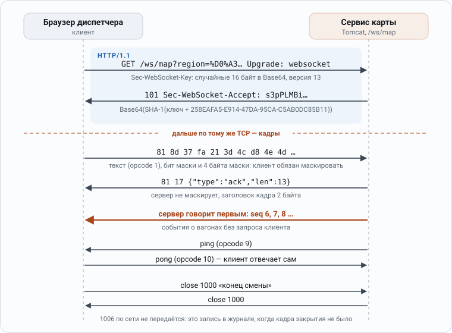
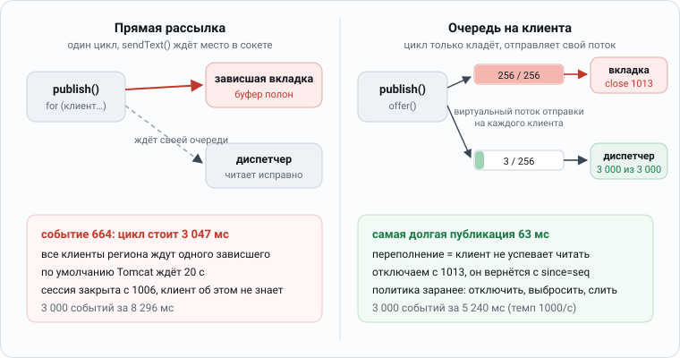

28. gRPC, JSON-RPC, WebSocket, GraphQL, XML и SOAP
28. gRPC, JSON-RPC, WebSocket, GraphQL, XML и SOAP
Зачем это знать
REST поверх JSON стал выбором по умолчанию, но универсальным ответом он от этого не сделался. Когда между сервисами идёт 50 тысяч вызовов в секунду, выбор между protobuf и JSON превращается в выбор между тремя и восемью подами. Когда мобильное приложение собирает витрину из семи микросервисов, GraphQL может сэкономить команде BFF месяцы работы, а может открыть DoS-уязвимость, если никто не подумал об ограничении сложности запроса. А когда интеграция с НСПК или кредитным бюро идёт по SOAP с WS-Security, предложение «давайте сделаем REST» просто некому адресовать. На интервью эту тему затрагивают почти всегда и спрашивают примерно так: «чем gRPC лучше REST», «что такое дедлайн и чем он отличается от таймаута», «почему весь ваш gRPC-трафик ушёл в один под», «как развивать proto-схему, не останавливая сервис». Эта глава посвящена альтернативам REST: как они устроены, во что обходятся и по каким признакам между ними выбирать.
1. Пространство решений
Протоколом прикладного уровня здесь называется договорённость о том, как один сервис просит другой что-то сделать: какая модель взаимодействия за ней стоит, чем описан контракт, в каком формате идут байты и что умеет транспорт. Практическая проблема в том, что споры о выборе протокола обычно ведут по одному признаку, чаще всего по скорости, хотя признаков несколько и они друг от друга не зависят. В этом разделе мы разложим выбор на четыре оси, а затем объясним, почему альтернативы REST до сих пор не ушли из промышленной разработки и в финтехе встречаются на каждом шагу.
1.1 Оси выбора протокола
Вопрос «REST или gRPC» задан в неправильной размерности: он сводит выбор к одному измерению, хотя на деле протокол выбирают по четырём независимым осям. Большинство архитектурных споров на эту тему сводится к тому, какую из осей считать важнее, поэтому полезно сначала назвать их все.
Ось 1: модель взаимодействия. Протокол может строиться вокруг манипуляции ресурсами (REST), вокруг вызова процедуры (gRPC, JSON-RPC, SOAP) или вокруг декларативного запроса данных (GraphQL). Разница здесь не косметическая, потому что ресурсная модель навязывает дизайн: если ваша операция звучит как «провести взаимозачёт между тремя счетами», вам придётся выдумать ресурс /settlements, лишь бы POST выглядел прилично. RPC-модель такого не требует, и вызов остаётся вызовом — settlementService.Execute(...). Верно и обратное: если у вас честный CRUD над сущностями, REST бесплатно даёт кэширование, условные запросы и URL, понятные любому, кто их увидит.
Ось 2: контракт. По этой оси протоколы различаются тем, есть ли у них машиночитаемое описание, генерируется ли из него код и проверяется ли совместимость автоматически. У SOAP/WSDL и gRPC/protobuf контракт первичен и обязателен, и код генерируется из него. У REST/OpenAPI контракт есть, но он необязателен и часто пишется уже после кода, а потому расходится с тем, что код делает на самом деле. У GraphQL схема обязательна, однако описывает она данные, а не операции. У JSON-RPC контракта нет вообще, есть только словесная договорённость между командами.
Ось 3: формат кодирования. Данные можно кодировать в бинарном формате с внешней схемой (protobuf, Avro, Thrift) или в текстовом самоописывающемся (JSON, XML), и выбор между ними — это обмен размера и скорости на возможность прочитать сообщение глазами прямо в логе. На типичном платёжном DTO со строковыми полями protobuf меньше JSON примерно в 2.5–3 раза (расчёт по байтам приведён в разделе 2.8), на сообщениях из коротких числовых полей выигрыш доходит до 8 раз, а сериализация protobuf, по распространённой оценке, идёт в 2–5 раз быстрее (⚠️ не проверено: в главе эта величина не измерялась, её меряют JMH-ом на своих DTO). Зато текстовый формат отлаживается обычным curl-ом, а для бинарного нужны специальные инструменты.
Ось 4: возможности транспорта. Последняя ось отвечает на три вопроса: ограничивается ли обмен однонаправленным запросом и ответом или возможен полноценный стриминг в обе стороны, кто может начать отправку сообщения и работает ли всё это из браузера. gRPC даёт bidi-стриминг из коробки, а у REST его нет, и SSE или WebSocket приходится прикручивать сбоку. GraphQL предлагает subscriptions поверх WebSocket, а SOAP умеет только запрос и ответ.
💡 На интервью. Худший ответ на вопрос «чем gRPC лучше REST» звучит как «он быстрее». Правильный ответ начинается с того, что это разные модели: «gRPC даёт строгий контракт с кодогенерацией, компактный бинарный формат, нативный двусторонний стриминг и, что важнее всего, дедлайны, которые распространяются по всей цепочке вызовов. Платить за это приходится тем, что без прокси он не работает из браузера, плохо кэшируется и требует инструментов для отладки. Поэтому типовая архитектура выглядит так: gRPC внутри периметра между сервисами и REST наружу, для публичного API».
Запуск. Одни и те же данные (список из 100 платежей: идентификатор, сумма в минорных единицах, валюта, статус) в трёх формах, и вызов по сети:
размер списка из 100 платежей: protobuf 2 090 байт; JSON 6 601 байт (JSON больше в 3,2 раза); после gzip: protobuf 395, JSON 591
200 одновременных вызовов: gRPC через один канал: 1 соединение, 520 мс; HTTP/1.1: 200 соединений, 1 174 мс
вызов Get внутри процесса (InProcess): 6,8 мкс; по сети localhost (HTTP/2): 188 мкс
После сжатия разница размера сократилась с 3,2 раза до 1,5, а основной выигрыш gRPC в числе соединений и в готовых клиентах из описания.
🎲 Неочевидно. «gRPC в три раза компактнее JSON» исчезает после gzip. Сжатие JSON уравнивает размер почти до значений protobuf (591 против 395 байт на 100 платежах). Выбор протокола определяют контракт, генерация клиентов, потоки, дедлайны и мультиплексирование, а не размер сообщения. Порядок величин задержки на локальной машине (188 мкс на вызов по сети против 6,8 мкс внутри процесса) говорит, что стоимость вызова состоит в основном из сети и сериализации, не из формата.1
❓ Спрашивают на интервью. По каким осям выбирают между REST, gRPC, GraphQL и JSON-RPC? Потребитель (браузер или сервис), контракт и кодогенерация, форма взаимодействия (запрос-ответ, потоки), требования к задержке и размеру, кэширование и инфраструктура (прокси, балансировщики, мониторинг), навыки команды. В измерениях главный выигрыш gRPC был в мультиплексировании (1 соединение вместо 200), а размер после сжатия различался в 1,5 раза.1
1.2 Актуальность выбора протокола
Легко решить, что REST победил, а всё остальное осталось наследием прошлого или нишевыми решениями, которые рано или поздно перепишут. Это неверно, и причин тому три: цена внутреннего трафика между сервисами, цена изменений в системе без машиночитаемого контракта и унаследованные регуляторные интерфейсы, которые никуда не денутся. Ниже каждая из них разобрана отдельно, а в конце приведены порядки цифр, которые стоит держать в голове.
Первая причина — стоимость внутреннего трафика. В микросервисной архитектуре на один внешний HTTP-запрос приходится от 5 до 50 внутренних, и если каждый из них несёт JSON с полными именами полей, вы платите за это процессором на сериализацию, памятью на промежуточные объекты и сетевым трафиком. На финтеховых объёмах, где счёт идёт на десятки тысяч RPS, перевод внутреннего слоя на protobuf даёт измеримую экономию железа, и оптимизацией ради оптимизации его не назовёшь.
Вторая причина в том, что без контракта невозможно спокойно рефакторить. В системе из 40 сервисов без машиночитаемых контрактов никто не ответит на вопрос «кто сломается, если я переименую это поле». С protobuf и buf/protolock на этот вопрос отвечает CI. Производительность здесь ни при чём: речь идёт о том, как быстро команда может менять систему.
Третья причина — унаследованные регуляторные интерфейсы, которые не умирают. СМЭВ, ФНС, ЦБ, кредитные бюро и страховые работают по SOAP с XSD-схемами, WS-Security и регламентами, где описан даже формат конверта. Всё это проживёт ещё десять лет, и senior backend в финтехе обязан уметь с этим работать, не пытаясь переписать интеграцию под REST.
📊 Цифры. Держать в голове стоит такие порядки, которые типичны для DTO из 10–20 полей, хотя замерять всё равно надо самому: сообщение protobuf в 2.5–3 раза меньше эквивалентного JSON без сжатия на DTO со строками и до 8 раз меньше на сообщениях из коротких числовых полей, после gzip разница составляет 1.5–3 раза, а сериализация и десериализация protobuf в Java, по распространённой оценке, в 2–5 раз быстрее Jackson (⚠️ не проверено, см. ниже). Выигрыш падает почти до нуля, если полезная нагрузка состоит из одной длинной строки или base64-блоба, потому что экономить там нечего. Брать эти множители на веру не нужно: в разделе 2.8 они посчитаны по байтам на конкретном платёжном сообщении и дают 2.74× без сжатия и 2.29× после gzip, а «в 8 раз» получается только на телеметрии из коротких числовых полей. Единственная величина, которую остаётся мерить самостоятельно, — множитель по скорости (де)сериализации, и мерить его надо JMH-ом на своих DTO.
2. Protocol Buffers
Protocol Buffers — формат, на котором держится весь gRPC и немалая часть Kafka-интеграций, и понимать его нужно глубже, чем на уровне синтаксиса .proto-файла. Почти все неприятные инциденты с protobuf случаются не из-за медленной сериализации, а из-за несовместимого изменения схемы, которое молча портит данные у потребителя, и все правила совместимости выводятся из того, как сообщение устроено на проводе. Поэтому раздел идёт в таком порядке: синтаксис proto3, wire format до байта, эволюция схемы и presence, well-known types, кодогенерация, protobuf без gRPC, ручной подсчёт размера против JSON, таблица решений по эволюции и цена зависимостей в classpath.
2.1 Схема proto3
Protocol Buffers объединяет три вещи: язык описания схемы, бинарный формат кодирования и кодогенератор. gRPC использует его как IDL по умолчанию, но protobuf прекрасно живёт и без gRPC. Ниже приведена схема платёжного сообщения, на которой видны все основные конструкции proto3: опции Java-генерации, вложенный тип для денег, enum с нулевым значением, map, repeated, oneof и reserved.
syntax = "proto3";
package ru.bank.payments.v1;
option java_package = "ru.bank.payments.grpc.v1";
option java_multiple_files = true;
option java_outer_classname = "PaymentProto";
import "google/protobuf/timestamp.proto";
message Money {
string currency_code = 1; // ISO 4217
int64 units = 2; // целая часть
int32 nanos = 3; // дробная, -999999999..+999999999
}
enum PaymentStatus {
PAYMENT_STATUS_UNSPECIFIED = 0;
PAYMENT_STATUS_PENDING = 1;
PAYMENT_STATUS_SETTLED = 2;
PAYMENT_STATUS_REJECTED = 3;
}
message Payment {
string id = 1;
string debit_account = 2;
string credit_account = 3;
Money amount = 4;
PaymentStatus status = 5;
google.protobuf.Timestamp created_at = 6;
map<string, string> attributes = 7;
repeated string tags = 8;
oneof routing {
CardRouting card = 10;
SbpRouting sbp = 11;
}
reserved 9;
reserved "legacy_code";
}
message CardRouting { string pan_masked = 1; }
message SbpRouting { string phone = 1; }
Несколько строк в этой схеме заслуживают отдельного пояснения, потому что от них зависит и маршрутизация, и сгенерированный код. package определяет полное имя типа в wire-протоколе gRPC (/ru.bank.payments.v1.PaymentService/Create) и разводит пространства имён при коллизиях, тогда как java_package влияет только на Java-код. Опция java_multiple_files = true кладёт каждый message в отдельный файл, а без неё всё окажется вложенным в один outer-класс. Это важнее, чем кажется: один сгенерированный файл на 300 сообщений долго компилируется и при статической инициализации упирается в лимит 64 КБ на метод.
Следующая таблица показывает, во что превращается каждый скалярный тип proto3 в Java и как он кодируется на проводе. Смотреть стоит прежде всего на колонку «Примечание»: в ней собраны случаи, где выбор типа заметно влияет на размер сообщения или на корректность чтения.
| proto3 | Java | Кодирование | Примечание |
|---|---|---|---|
double / float |
double / float |
I64 / I32 | фиксированный размер |
int32 / int64 |
int / long |
varint | отрицательные — всегда 10 байт |
uint32 / uint64 |
int / long |
varint | в Java нет unsigned, читать через Integer.toUnsignedLong |
sint32 / sint64 |
int / long |
varint + zigzag | для полей, которые бывают отрицательными |
fixed32 / fixed64 |
int / long |
I32 / I64 | выгоднее varint, если значения обычно > 2^28 / 2^56 |
sfixed32 / sfixed64 |
int / long |
I32 / I64 | |
bool |
boolean |
varint | 1 байт |
string |
String |
LEN | обязан быть корректным UTF-8 |
bytes |
ByteString |
LEN | произвольные байты |
⚠️ Деньги в protobuf никогда не кладут в double. Для них есть три приемлемых способа: string с десятичным представлением, пара units/nanos, как в google.type.Money, или int64 в минимальных единицах (копейках), и тогда масштаб явно указывают в имени поля. На приёме в Java значение сразу переводят в BigDecimal.
2.2 Wire format
Wire format — это правила, по которым сообщение protobuf превращается в байты на проводе. Разбираться в нём приходится не ради академического интереса: из формата напрямую следуют все правила эволюции схемы и добрая половина навыков отладки. Ниже разберём, как устроен тег, как кодируются целые числа и строки и какие практические следствия из этого вытекают.
Сообщение protobuf состоит из последовательности пар «тег, значение». Тег кодируется как varint, и в нём зашиты номер поля и тип на проводе: tag = (field_number << 3) | wire_type (protobuf encoding). Три младших бита отведены под wire type, а какие типы полей соответствуют каждому его значению, показывает таблица.
| wire type | Имя | Типы |
|---|---|---|
| 0 | VARINT | int32, int64, uint32, uint64, sint32, sint64, bool, enum |
| 1 | I64 | fixed64, sfixed64, double |
| 2 | LEN | string, bytes, вложенные сообщения, packed repeated |
| 3 / 4 | SGROUP / EGROUP | группы, deprecated |
| 5 | I32 | fixed32, sfixed32, float |
Varint кодирует целое число переменным количеством байтов: в каждом байте 7 младших бит несут полезную нагрузку, а старший бит сообщает, что за этим байтом есть продолжение. Сами группы по 7 бит идут в порядке little-endian, то есть младшая группа идёт первой. В документации это показано на классическом примере числа 150, которое кодируется как 96 01, то есть 10010110 00000001: если снять биты продолжения, останутся группы 0010110 и 0000001, а если переставить их в обратном порядке, получится 10010110, то есть 150.
Из этого вытекает первое практическое следствие: маленькие числа занимают один байт. Поле номер 3 со значением 1 занимает на проводе ровно два байта (0x18 0x01), тогда как в JSON то же самое выглядит как "status":1 и требует минимум 11 байт.
Второе следствие касается нумерации: номера полей 1–15 кодируют тег одним байтом, потому что 4 бита под номер и 3 бита под wire type дают 7 бит и помещаются в один байт varint, а для номеров 16–2047 нужно уже два байта. Поэтому в горячих сообщениях самые частые поля нумеруют от 1 до 15, а редкие и служебные уводят за 16. Допустимый диапазон номеров — 1..536 870 911, но 19000–19999 зарезервированы реализацией (proto3 guide).
Третье следствие неприятное: int32 с отрицательным значением занимает 10 байт. Отрицательные числа в int32/int64 кодируются дополнительным кодом 64-битного числа, у которого выставлены все старшие биты, и varint раздувается до максимальной длины. Для таких полей придуман zigzag: типы sint32/sint64 кодируют знаковое число как (n << 1) ^ (n >> 31) (для 64 бит — >> 63), и тогда −1 превращается в 1, 1 — в 2, −2 — в 3, 2 — в 4. В результате отрицательные числа, небольшие по модулю, снова занимают один байт.
Четвёртое следствие связано с полями length-delimited (wire type 2): у них сначала идёт длина в виде varint, а затем ровно столько байтов. Так кодируются строки, bytes, вложенные сообщения и packed repeated. На проводе вложенное сообщение ничем не отличается от bytes, и именно поэтому парсер может пропустить неизвестное поле: wire type он знает из тега, а значит, понимает, сколько байтов пропустить, даже не зная типа поля.
Пятое следствие: repeated скалярных числовых типов в proto3 по умолчанию packed, то есть все значения пишутся подряд в один LEN-блок, и тег не повторяется. Поле repeated int32 ids = 8 со ста значениями занимает один тег, одну длину и сто varint-ов, а не сто тегов.
Шестое следствие — ключ ко всему остальному: на проводе нет имён полей, есть только номера. Именно благодаря этому protobuf компактен, и по той же причине контрактом служит номер поля, а не его имя.
🔧 Под капотом.
map<string, string> attributes = 7— синтаксический сахар: на проводе этоrepeatedвложенное сообщение с полямиkey = 1иvalue = 2. Отсюда несколько следствий. Порядок элементов map не гарантирован, на проводе могут встретиться дубликаты ключей, и тогда побеждает последний, map нельзя сделатьrepeated, иpackedmap тоже быть не может.oneofустроен так же: на проводе его члены остаются обычными полями со своими номерами, а взаимоисключительность обеспечивают генератор кода и парсер, который при чтении двух членов oneof оставляет последний встреченный.
2.3 Эволюция схемы
Эволюцией схемы называют любое изменение .proto-файла, после которого старые и новые версии сервисов продолжают обмениваться сообщениями. Проблема в том, что несовместимое изменение не всегда даёт ошибку: часто оно молча портит данные, и выясняется это уже в проде. Ниже выведем правила совместимости прямо из формата, перечислим допустимые и запрещённые изменения и покажем, как reserved и CI-проверка защищают от самой опасной ошибки.
Все правила вытекают из того, что делает парсер, когда встречает тег: он определяет номер поля и wire type, а дальше возможны три случая.
- Если номер известен и wire type совпал, парсер читает поле.
- Если номер неизвестен, парсер пропускает поле по wire type и (в proto3 с версии 3.5) сохраняет его в unknown fields, чтобы не потерять при обратной сериализации.
- Если номер известен, а wire type не совпал, результатом будет ошибка парсинга или молчаливая порча данных.
Что делать можно — эти изменения остаются совместимыми по wire format в обе стороны:
- Добавить новое поле с новым номером. Старый код его пропустит, а новый увидит значение по умолчанию (default), и на этой операции держится вся эволюция схемы.
- Удалить поле, но только если его номер сразу же попадает в
reserved. - Переименовать поле, не меняя номер. На проводе имени нет, поэтому данные не пострадают, однако JSON-отображение (
JsonFormat) сломается, а сгенерированный Java-код изменится. Такое изменение ломает исходный код (source-breaking), хотя совместимость по проводу (wire-breaking) не нарушает. - Добавить значение в enum. Старый код увидит незнакомое число; в proto3 enum открытые (open enums), поэтому оно сохраняется и возвращается через
getStatusValue(), аgetStatus()вернётUNRECOGNIZED. Именно поэтому первым значением обязано быть..._UNSPECIFIED = 0. - Заменить тип на взаимозаменяемый с тем же wire type:
int32↔int64↔uint32↔uint64↔bool(все они varint, и при сужении старшие биты усекаются, как при касте в C++),sint32↔sint64(но не сint32!),fixed32↔sfixed32,fixed64↔sfixed64,string↔bytes(если содержимое остаётся корректным UTF-8). - Сделать одиночное поле членом нового
oneof, если в этом oneof не будет других полей. - Заменить
optionalна обычное поле или обратно в proto3: по проводу это совместимо, потому что меняется только отслеживание presence в коде.
Что делать нельзя:
- Повторно использовать номер поля. Это главная катастрофа: старый сервис отправит в поле 5 данные со старым смыслом, а новый прочитает их как данные с новым. Если wire type совпал (а у
int32иboolон совпадает), ошибки не будет вовсе, будут только молча неправильные данные, и в финтехе это выглядит как статус платежа, прочитанный как сумма. - Менять тип поля на несовместимый по wire type. Замена
string(LEN) наint64(VARINT) даст ошибку парсинга, а заменаint32наsint32даст молча неправильные числа из-за zigzag. - Менять
repeatedна singular и обратно для типов, у которых от этого меняется семантика. Для скалярных числовых полей это технически «работает» — singular прочитает последнее значение packed-массива, — но полагаться на такое поведение нельзя. - Менять номер поля: для парсера это то же самое, что удалить одно поле и добавить другое.
- Перемещать существующее поле внутрь существующего oneof или выносить его оттуда.
- Менять
requiredна что-либо в proto2. В proto3requiredнет вообще, и это сознательное решение авторов: снять с поля обязательность, не сломав совместимость, невозможно.
Защиту от повторно использования номера объявляют прямо в схеме, и выглядит это так:
message Payment {
// Поле purpose (номер 9) удалено в v1.4.0, номер и имя закрыты навсегда.
reserved 9, 12 to 15;
reserved "purpose", "legacy_code";
}
reserved пишут не для красоты: он заставляет protoc упасть с ошибкой при попытке снова занять закрытый номер. Без него ту же ошибку через полгода сделает разработчик, а обнаружите вы её уже в проде.
⚠️ Осторожно. Классическая история выглядит так: message копируют в другой
.proto, правят пару полей и забывают, что старая версия всё ещё работает в проде у трёх потребителей. Дисциплиной это не лечится, лечится инструментом: buf breaking (buf breaking --against '.git#branch=main') в CI ломает сборку на несовместимом изменении, а в мире Maven ту же роль играетprotolock. Без такого гейта правила из этого раздела соблюдаются ровно до первого горящего релиза.
Запуск. Сообщения, записанные одной версией схемы, прочитаны другой (Python, protobuf 7.36, проверка кодирования; номера и типы полей, как в схеме платежа):
v2 -> v1 (добавлено поле note, новое значение перечисления DISPUTED): старый клиент прочитал id, amount, currency; status = 3 (числом, имени в v1 нет);
переписал сообщение и вернул дальше: note сохранилось (неизвестные поля пересылаются)
переименование amount -> amount_minor при том же номере 2: старый клиент прочитал amount = 777 (совместимо)
смена типа поля 2 int64 -> string: старый клиент прочитал amount = 0, id и currency верные (поле молча потеряно)
номер 3 (был currency, строка) использован под priority (число): старый клиент прочитал currency = '' ; новый клиент старые данные: priority = 0
сужение int64 -> int32: записано 3 000 000 000, прочитано -1 294 967 296
proto3 без optional: amount = 0 и отсутствие поля дают 0 байт; с optional: HasField для нуля True, для отсутствующего False
Совместимо: добавить поле, переименовать поле, добавить значение перечисления. Несовместимо и без ошибки: сменить тип, использовать номер повторно, сузить тип.
🎲 Неочевидно. Несовместимое изменение схемы не вызывает ни одной ошибки. Смена
int64наstringу поля 2 дала старому клиентуamount = 0: поле тихо выпало, а сумма платежа превратилась в ноль. Сужение доint32испортило число (минус 1,29 млрд). Проверка совместимости схем в сборке (buf breakingи подобные) обязательна; удалённые номера помечаютreserved.2
❓ Спрашивают на интервью. Как безопасно менять схему protobuf? Добавлять новые поля с новыми номерами, не менять номера и типы существующих, не использовать удалённые номера повторно (
reserved), давать перечислениям нулевое значение «неизвестно», различать «не задано» и ноль черезoptional, проверять совместимость автоматически. В запуске совместимы три вида изменений, три несовместимы и ошибок не дают.2
2.4 Presence: нулевое и незаданное значение
Presence — это способность сообщения сообщить получателю, было ли поле задано отправителем или просто осталось со значением по умолчанию. От неё зависит, сможет ли сервис отличить «клиент прислал ноль» от «клиент ничего не прислал», а без этого не реализовать ни PATCH, ни операцию «обнулить поле». Ниже разберём, откуда в proto3 взялась эта проблема, и три способа её решить: optional, wrapper-типы и FieldMask.
В proto2 у каждого поля был явный признак присутствия (hasX()), а в proto3 его поначалу убрали, и singular scalar поле со значением по умолчанию вообще не пишется на провод. Байты на этом экономятся, но возникает проблема: поле int32 limit = 3 со значением 0 ничем не отличается от случая, когда клиент limit не прислал. Для PATCH-семантики и для операции «обнулить поле» это фатально, поэтому у proto3 есть три обходных пути.
1. optional (proto3, protoc 3.15+ без флага --experimental_allow_proto3_optional). Модификатор возвращает явное отслеживание presence, и у поля снова появляется метод hasX():
message UpdateLimitRequest {
string account_id = 1;
optional int64 daily_limit = 2; // есть hasDailyLimit()
}
if (request.hasDailyLimit()) {
account.setDailyLimit(request.getDailyLimit()); // 0 тоже бывает: он означает «запретить»
}
Под капотом optional в proto3 генерирует синтетический oneof из одного поля, и presence берётся именно оттуда. По проводу такое поле совместимо с обычным полем того же номера.
2. Wrapper-типы из google/protobuf/wrappers.proto: Int64Value, StringValue, BoolValue, DoubleValue и другие. Это обычные сообщения с единственным полем value = 1, а у вложенного сообщения presence есть всегда, поэтому обёртка решает задачу без всяких модификаторов.
import "google/protobuf/wrappers.proto";
message UpdateLimitRequest {
google.protobuf.Int64Value daily_limit = 2;
}
У обёрток есть свои минусы: лишний уровень вложенности, выделение памяти объекта-обёртки и вызов getDailyLimit().getValue() вместо getDailyLimit(). Зато они работают на любой версии и естественно ложатся на JSON, где различаются null и число. Для новых схем сегодня предпочтителен optional, а к wrappers обращаются ради совместимости со старым кодом и в тех случаях, когда в JSON нужна именно null-семантика.
3. FieldMask (google/protobuf/field_mask.proto) решает задачу честного PATCH: клиент явно перечисляет пути, которые он обновляет, и сервер трогает только их.
message UpdateAccountRequest {
Account account = 1;
google.protobuf.FieldMask update_mask = 2; // "daily_limit,status"
}
Этот приём закреплён в стандарте Google AIP, и именно его ждут в ответ на вопрос интервьюера «как сделать PATCH в gRPC».
🔧 Под капотом. У полей
message-типа и у членовoneofpresence есть всегда, независимо отoptional, поэтомуMoney amount = 4отличает «не задано» от «нули». А вот уrepeatedиmappresence не бывает никогда: пустой список и отсутствующий список на проводе выглядят одинаково.
2.5 Well-known types
Well-known types — это стандартная библиотека сообщений из google/protobuf/*.proto, для которой в Java есть специальная поддержка. Она избавляет от необходимости каждой команде изобретать своё представление времени, длительности или динамического JSON, но у каждого типа есть своя цена и свои ловушки. Ниже перечислены основные типы и то, когда каждый из них уместен.
Timestampхранит секунды от эпохи UTC и наносекунды, диапазон у него от 0001-01-01 до 9999-12-31. Для конвертации естьTimestamps.fromMillis()иTimestamps.toInstant(), а можно и вручную:Instant.ofEpochSecond(ts.getSeconds(), ts.getNanos()). В JSON тип сериализуется в формате RFC 3339 ("2026-09-21T10:15:30.123Z").Durationописывает знаковую длительность в секундах и наносекундах в пределах ±10000 лет, а в JSON выглядит как"3.000000001s".Anyнесёт сериализованное сообщение вместе сtype_url(type.googleapis.com/ru.bank.payments.v1.Payment) и позволяет передать «что-то, что определим позже». Платить за это приходится тем, что у получателя обязан быть дескриптор типа, иначе он не распакует сообщение (any.unpack(Payment.class)), а статической типобезопасности нет вовсе.Anyиспользуют вgoogle.rpc.Status.detailsи в событийных шинах, но для конечного множества вариантовoneofвсегда лучше.Struct/Value/ListValueпозволяют положить динамический JSON внутрь protobuf. Для «произвольных атрибутов от партнёра» это удобно, но вы платите размером, потому что Struct кодирует имена полей, и теряете схему. Если половина полей в вашем protobuf оказаласьStruct, вы просто пишете JSON дорогим способом.Emptyобозначает пустое сообщение для методов без параметров или без ответа. ⚠️ Использовать его вrpcне рекомендуется: если завтра в запрос понадобится добавить поле, придётся менять сигнатуру метода, поэтому лучше сразу заводить свойXxxRequest {}.FieldMaskразобран выше, в разделе 2.4.
2.6 Кодогенерация
Кодогенерация превращает .proto-файлы в Java-классы сообщений и gRPC-стабы, и без неё protobuf в Java не используют. Технически она настраивается одним плагином сборки, а вот организационно приходится решить, где живут контракты и как они попадают к потребителям, и этот вопрос оказывается важнее технического. Разберём сначала конфигурацию Maven, а затем три варианта хранения .proto.
Сам по себе компилятор protoc gRPC-стабов для Java не генерирует, для этого нужен отдельный плагин protoc-gen-grpc-java. В Maven стандартный путь — protobuf-maven-plugin, в Gradle — com.google.protobuf (protobuf-gradle-plugin). Ниже показана типовая конфигурация Maven, и главное в ней — две цели плагина и расширение, определяющее платформу.
<build>
<extensions>
<extension>
<groupId>kr.motd.maven</groupId>
<artifactId>os-maven-plugin</artifactId>
<version>1.7.1</version>
</extension>
</extensions>
<plugins>
<plugin>
<groupId>org.xolstice.maven.plugins</groupId>
<artifactId>protobuf-maven-plugin</artifactId>
<version>0.6.1</version>
<configuration>
<protocArtifact>com.google.protobuf:protoc:3.25.5:exe:${os.detected.classifier}</protocArtifact>
<pluginId>grpc-java</pluginId>
<pluginArtifact>io.grpc:protoc-gen-grpc-java:1.84.0:exe:${os.detected.classifier}</pluginArtifact>
</configuration>
<executions>
<execution>
<goals><goal>compile</goal><goal>compile-custom</goal></goals>
</execution>
</executions>
</plugin>
</plugins>
</build>
Цель compile генерирует классы сообщений, а compile-custom — gRPC-стабы, поэтому нужны обе. Плагин скачивает нативный protoc под вашу платформу, и чтобы определить нужный classifier, ему нужен os-maven-plugin.
Документация Spring Boot 4.1 рекомендует более свежий io.github.ascopes:protobuf-maven-plugin (Spring Boot gRPC): он лучше поддерживает новые версии Maven и обходится без os-maven-plugin.
Организационный вопрос, где живут .proto, важнее технического, и вариантов у него три. Таблица сравнивает их по тому, насколько просто вносить изменения и чем за это расплачиваются потребители.
| Вариант | Плюсы | Минусы |
|---|---|---|
| В репозитории сервиса-владельца | простота, атомарность изменений | потребителям надо ссылаться на чужой репо; git submodule |
| Отдельный репозиторий контрактов (schema registry) | одно место правды, CI с breaking-check, версионирование | ещё один репо и релизный цикл |
| Публикация сгенерированных артефактов в Nexus | потребителю нужна только зависимость payments-api:1.4.0 |
генерация под одну версию grpc-java; версионный ад при разных версиях у потребителей |
В крупных командах эти варианты обычно совмещают: заводят отдельный репозиторий контрактов и публикуют из него сгенерированные jar-ы по правилам semver, где minor-версия означает обратно совместимое изменение схемы.
2.7 Protobuf без gRPC
Protobuf — это формат данных, и транспортом для gRPC его роль не исчерпывается: его кладут в Kafka, в кэш и в любые другие места, где нужна компактная сериализация со схемой. Везде, куда он попадает, действуют те же правила совместимости, но меняется, кто оказывается «старым клиентом». Ниже разберём три случая: Kafka, где protobuf соперничает с Avro, кэш и обратную ситуацию — gRPC без protobuf.
В Kafka. Confluent Schema Registry поддерживает Protobuf наравне с Avro (KafkaProtobufSerializer), и проверки совместимости настраиваются так же; подробности разобраны в главе 29 (29-kafka-internals.md). Практическую разницу с Avro показывает таблица, и смотреть в ней стоит на строки про эволюцию и разрешение схем, потому что именно там форматы расходятся по существу.
| Protobuf | Avro | JSON | |
|---|---|---|---|
| Схема на проводе | нет (только schema id) | нет (только schema id) | нет схемы вообще |
| Эволюция | по номерам полей | по именам + default/aliases |
никак |
| Удаление обязательного поля | нет понятия обязательного | требует default у читателя |
— |
| Reader/writer schema resolution | нет (парсер один) | да, полноценная | — |
| Размер | ~ равно Avro, чуть больше | чуть компактнее (нет тегов) | 2.5–8× больше (см. 2.8) |
| Кодогенерация в Java | отличная | хорошая (SpecificRecord) | не нужна |
| Экосистема вне JVM | шире | уже | универсальна |
Если упростить, Avro чуть компактнее и предлагает более выразительную модель эволюции (aliases, разрешение схем по именам), тогда как Protobuf проще и одинаково работает в Kafka, в gRPC и в кэше, и это его главный аргумент. Если gRPC у вас уже есть, то, взяв Avro для Kafka, вы будете содержать две системы схем.
В кэше. Если класть в Redis Payment.toByteArray() вместо JSON, Redis займёт меньше памяти, а (де)сериализация пойдёт быстрее. Взамен вы теряете возможность посмотреть значение через redis-cli и должны следить за эволюцией схемы, потому что в кэше лежат сообщения, записанные предыдущей версией приложения. Правила совместимости здесь ровно те же, что и для API, только роль клиента играет ваше же приложение из прошлого.
В gRPC можно обойтись без protobuf. Формально gRPC к protobuf не привязан: content-type: application/grpc+json легален, а grpc-java позволяет подставить свой Marshaller. На практике так почти никто не делает, потому что теряется главное — кодогенерация и контракт, — и от gRPC остаётся один HTTP/2-транспорт.
2.8 Размер сообщения в protobuf и JSON
Утверждение «protobuf в 3–8 раз меньше JSON» встречается во многих статьях, но без указания формы данных такой множитель бесполезен: на одних сообщениях выигрыш огромен, на других его нет вовсе. Единственный честный способ понять, сколько вы сэкономите, — посчитать байты на конкретном сообщении. Ниже мы разложим по байтам платёжное сообщение из раздела 2.1, сравним его с ProtoJSON без сжатия и после gzip, а затем проверим, как меняется множитель на массиве целых и на бинарном блобе.
Возьмём Payment из 2.1 с реалистичными значениями полей:
id = "PAY-00000771"
debit_account = "40817810099910004312"
credit_account = "40817810099910004313"
amount = { currency_code: "RUB", units: 1500 } // nanos = 0
status = PAYMENT_STATUS_SETTLED // = 2
created_at = { seconds: 1789041330 } // nanos = 0
Теперь разложим его по байтам, считая тег по формуле (field_number << 3) | wire_type (protobuf encoding). В таблице по каждому полю видно, сколько байтов уходит на тег, на длину и на само значение, и последняя колонка показывает, что служебные байты здесь почти ничего не стоят.
| Поле | № | wire type | Тег | Длина | Значение | Итого |
|---|---|---|---|---|---|---|
id |
1 | 2 (LEN) | 0x0A (1 б) |
0x0C = 12 (1 б) |
12 б ASCII | 14 |
debit_account |
2 | 2 | 0x12 (1 б) |
0x14 = 20 (1 б) |
20 б | 22 |
credit_account |
3 | 2 | 0x1A (1 б) |
0x14 = 20 (1 б) |
20 б | 22 |
amount |
4 | 2 | 0x22 (1 б) |
0x08 = 8 (1 б) |
вложенное, 8 б | 10 |
status |
5 | 0 (VARINT) | 0x28 (1 б) |
— | 0x02 (1 б) |
2 |
created_at |
6 | 2 | 0x32 (1 б) |
0x06 = 6 (1 б) |
вложенное, 6 б | 8 |
| 78 |
Вложенный Money занимает 8 байт: 0A 03 52 55 42 (тег поля 1 типа LEN, длина 3 и «RUB») и 10 DC 0B (тег поля 2 типа VARINT и varint от 1500). Varint от 1500 полезно разобрать вручную, потому что на нём хорошо видна работа бита продолжения. В двоичной записи 1500 = 0b101_1101_1100; младшие 7 бит дают 1011100 = 0x5C, и с выставленным битом продолжения получается 0xDC. Остаток 1011 = 0x0B идёт без бита продолжения и остаётся 0x0B. В итоге выходит DC 0B, то есть два байта вместо четырёх, которые занял бы fixed32.
Вложенный Timestamp занимает 6 байт: 08 и varint от 1789041330, равный B2 B5 8A D5 06. Байтов пять, потому что 31 значащий бит не помещается в четыре группы по семь. Поле nanos = 0 не пишется вовсе, так как в proto3 singular-скаляр со значением по умолчанию на провод не попадает.
Если собрать всё вместе, получится полный дамп сообщения (78 байт), и в нём легко узнать ASCII-коды номеров счетов, которые и занимают большую его часть.
0a 0c 50 41 59 2d 30 30 30 30 30 37 37 31 12 14 34 30 38 31 37 38 31 30
30 39 39 39 31 30 30 30 34 33 31 32 1a 14 34 30 38 31 37 38 31 30 30 39
39 39 31 30 30 30 34 33 31 33 22 08 0a 03 52 55 42 10 dc 0b 28 02 32 06
08 b2 b5 8a d5 06
Для сравнения возьмём то же сообщение в ProtoJSON, то есть в каноническом JSON-отображении protobuf, где имена полей пишутся в lowerCamelCase, int64 передаётся строкой, Timestamp — в формате RFC 3339, а enum — по имени. Поле nanos = 0 в JSON не попадает: спецификация требует опускать поле без presence, если в нём значение по умолчанию (ProtoJSON). Пробелы убраны, чтобы сравнение было честным, а createdAt соответствует тем же 1789041330 секундам от эпохи:
{"id":"PAY-00000771","debitAccount":"40817810099910004312","creditAccount":"40817810099910004313","amount":{"currencyCode":"RUB","units":"1500"},"status":"PAYMENT_STATUS_SETTLED","createdAt":"2026-09-10T11:55:30Z"}
Получается 214 байт, и множитель составляет 2.74×, а вовсе не «в 8 раз». Он так мал потому, что 40 из 78 байт protobuf занимают два номера счёта, а они в любом формате требуют по 20 символов. Полезная нагрузка здесь состоит из строк, а строки от перехода на бинарный формат короче не становятся.
После gzip (уровень 6) JSON занимает 174 байта, protobuf — 76 байт, и множитель падает до 2.29×. Здесь видны два эффекта. gzip хорошо съедает повторяющиеся имена полей в JSON (214 → 174), а на 78 байтах protobuf почти не работает, потому что 18-байтовый заголовок gzip и словарь обходятся дороже выигрыша (78 → 76). Сжимать маленькие бинарные сообщения бессмысленно, и включать grpc-encoding: gzip стоит, когда сообщения дорастают до единиц килобайт.
С другой формой данных получается и другой множитель, и это легко проверить. Возьмём поле repeated int32 ids = 8 со значениями от 1 до 100 и посчитаем три варианта:
- protobuf packed занимает 1 байт тега, 1 байт длины и 100 varint-ов по одному байту, итого 102 байта;
- если бы
packedне работал (как в proto2 по умолчанию или с[packed = false]), понадобилось бы 100 тегов и 100 значений, итого 200 байт; - JSON
{"ids":[1,2,...,100]}требует 192 цифры, 99 запятых, 2 скобки и ещё 8 байтов на"ids":с фигурными скобками, итого 301 байт.
Множитель получается 2.95×, и почти вся экономия приходится на запятые и кавычки, а не на схему. Третья форма данных — поле bytes scan = 9 с PDF-сканом на 700 КБ. В protobuf оно займёт 700 КБ плюс 5 байт накладных расходов, а в JSON base64 раздует его до 955 736 байт против 716 800 исходных, то есть ровно на треть. Множитель 1.33× целиком объясняется base64, и protobuf к нему отношения почти не имеет.
📊 Цифры (посчитано на конкретных сообщениях, не бенчмарк из статьи). Множитель размера protobuf/JSON составляет ~2.7× на DTO из строк и чисел, ~2.9× на массиве малых целых, ~1.3× на бинарном блобе и ~2.3× после gzip на мелком сообщении. «В 8 раз» выходит только на сообщениях, где почти все поля — малые числа с длинными именами (телеметрия, счётчики, тики котировок): в JSON имя поля там длиннее значения, а в protobuf имени нет вовсе. Правило отсюда простое: чем больше доля коротких числовых полей, тем больше выигрыш, и чем больше доля строк и блобов, тем он меньше. ⚠️ Множитель по скорости (де)сериализации здесь не измерялся, потому что он зависит от JIT, формы объектов и версии Jackson, и единственный корректный способ его узнать — JMH на своих DTO (см. главу 45,
45-performance.md).
Из этой арифметики, а не из веры в бинарные форматы, вытекает несколько практических следствий.
- Не переводите на protobuf интеграцию, которая гоняет документы и текст. Размер уменьшится в 1.3–1.5 раза, а возможность отлаживаться
curl-ом вы потеряете. Выигрыш появляется там, где вызовов много, а сообщения маленькие. - Номера 1–15 экономят по байту на каждом поле — «Field numbers in the range 1 through 15 take one byte to encode. Field numbers in the range 16 through 2047 take two bytes» (proto3 guide). На сообщении из 12 полей это 12 байт из 78, то есть 15%, а на сообщении из трёх полей разницы не заметить. Поэтому правило звучит так: в горячих сообщениях, которые идут десятками тысяч в секунду, держите частые поля в диапазоне 1–15 и оставляйте 1–2 свободных номера из первой пятнадцатки под будущие частые поля. В холодных сообщениях об этом можно не думать вовсе.
fixed64для timestamp-ов почти всегда проигрывает. Секунды от эпохи укладываются в 31 бит, и varint занимает на них 5 байт против 8 уfixed64.fixed64выигрывает только тогда, когда значения регулярно больше 2^56, как у хешей и случайных идентификаторов: varint на таких числах занимает 9–10 байт.- Для дельт и разниц берите
sint32вместоint32. Поле, в котором хранится изменение баланса, бывает отрицательным, и вint32такое значение займёт 10 байт вместо одного.
2.9 Эволюция схемы: таблица решений
В разделе 2.3 правила эволюции изложены по порядку, а здесь та же информация собрана в таблицу, которую можно приложить к pull request-у. Главное в ней — разделение изменений на те, что ломаются громко, и те, что портят данные молча: вторые в разы опаснее, потому что не дают никакого сигнала. После таблицы разберём три нюанса, которые в правилах обычно теряются, и минимальную конфигурацию buf.
Колонки таблицы показывают совместимость в обе стороны, а последняя колонка присваивает изменению класс опасности; строки с пометкой «молча портит» заслуживают самого пристального внимания.
| Изменение | Совместимость чтения нового старым | Совместимость чтения старого новым | Класс |
|---|---|---|---|
| Добавить поле с новым номером | старый пропустит в unknown | новый увидит default | ✅ безопасно |
Удалить поле + reserved |
— | новый увидит default | ✅ безопасно |
| Переименовать поле, номер тот же | ок (имени нет на проводе) | ок | ✅ wire-safe, ❌ source-breaking + ломает ProtoJSON |
| Добавить значение в enum | старый получит UNRECOGNIZED |
ок | ✅ безопасно (если есть _UNSPECIFIED = 0) |
int32 ↔ int64 ↔ uint64 ↔ bool |
ок с усечением старших бит | то же | ⚠️ молча портит: 300 в int32 прочитанное как bool = true, а int64 со значением 2^32 + 5, прочитанное как int32, даёт 5: число усекается до 32 бит, как при приведении типа в C++ (proto3 guide) |
sint32 ↔ int32 |
wire type тот же | тот же | 🔴 молча портит: zigzag против дополнительного кода, −1 читается как 1 |
string ↔ bytes |
ок, если корректный UTF-8 | ок | ⚠️ порвётся на некорректном UTF-8 |
string → int64 |
ошибка парсинга | ошибка | 🔴 ломает громко (wire type 2 → 0) |
| Повторно использовать номер, wire type совпал | ошибки нет | ошибки нет | 🔴🔴 молча портит, худший случай в главе |
| Повторно использовать номер, wire type другой | InvalidProtocolBufferException |
то же | 🔴 ломает громко |
| Изменить номер поля | поле «исчезает» | «исчезает» | 🔴 потеря данных без ошибки |
singular → repeated (скаляр) |
новый прочитает список из одного | старый прочитает последнее | ⚠️ работает, но полагаться нельзя |
singular → repeated (message) |
— | старый возьмёт склейку всех вхождений (merge!) | ⚠️ неожиданно: protobuf сливает повторные вхождения message-полей |
Одиночное поле → новый oneof из одного члена |
ок | ок | ✅ безопасно (proto3 guide) |
Одиночное поле → существующий oneof |
ок на проводе | 🔴 на сериализации новый очистит другие члены oneof | 🔴 теряет данные |
Вынести поле из oneof |
ок | ок только если в oneof был один член | ⚠️ |
Добавить новое поле в существующий oneof |
старый пропустит | новый увидит «ничего не задано» | ✅ безопасно |
optional ↔ без модификатора (proto3) |
ок | ок | ✅ wire-safe, меняет только hasX() |
Сменить package или имя service |
— | — | 🔴 меняется :path, все вызовы → UNIMPLEMENTED |
Переименовать message |
ок | ок | ✅ кроме Any (там имя в type_url) |
Три нюанса из этой таблицы в правилах обычно теряются, хотя именно на них чаще всего и попадаются.
Первый нюанс: перенос поля в существующий oneof ломает не провод, а код. Протокол данные прочитает, но сгенерированный сеттер очистит остальные члены oneof. Представьте сервис, который прочитал сообщение с полями card и legacy_card_id и положил второе в тот же oneof: при обратной сериализации первое поле исчезнет. Так сообщение, проходя через сервис-посредник, теряет поля, и возникает классическая картина «данные пропали где-то в середине цепочки».
Второй нюанс связан с repeated message и семантикой слияния. Если поле-сообщение встречается на проводе дважды, protobuf не берёт последнее вхождение, а сливает их рекурсивно: скаляры внутри берутся из последнего, а repeated-поля конкатенируются. На этом построен легальный трюк «дописать фрагмент в конец сериализованного сообщения», и на этом же ломаются самописные прокси, склеивающие два сообщения в один буфер.
Третий нюанс: reserved забывают, потому что сегодня он не нужен. Удаление поля работает и без него, а ломается всё через полгода, когда номер повторно используют. Надёжно лечит это только машинный гейт: buf breaking --against '.git#branch=main' в CI ловит и повторно использование номера, и смену типа, и изменение package. Правило для команды звучит так: любое изменение .proto проходит через buf в pipeline, и этот pipeline блокирующий.
Минимальная конфигурация buf для репозитория контрактов умещается в несколько строк, и важнее всего в ней выбор набора правил breaking:
# buf.yaml — минимальный набор для репозитория контрактов
version: v2
modules:
- path: proto
lint:
use: [STANDARD]
breaking:
use: [FILE] # самый строгий набор: запрещает и смену package, и перенос типов между файлами
⚠️ Осторожно.
buf breaking --againstсравнивает схему с указанной ревизией, а не с тем, что сейчас работает в проде. Если у вас долгоживущие релизные ветки, сравнение сmainпропустит несовместимость с релизом, который ещё эксплуатируется. Правильная база для сравнения — тег последнего задеплоенного контракта, а неmain.
2.10 Зависимости protobuf в classpath и их размер
Сгенерированный код protobuf — это не бесплатная абстракция: на каждое сообщение приходятся классы, дескрипторы и статическая инициализация, а сам runtime тянет за собой зависимости. На сервере это обычно терпимо, но в мобильных и serverless-сценариях и в native-image цена становится заметной, а рассогласованные версии библиотек ломают запуск где угодно. Ниже перечислено, что именно попадает в classpath и на что смотреть.
- На каждое сообщение приходится два класса: сам immutable-класс и вложенный
Builder, а к ним добавляется статический дескриптор вFileDescriptor-е файла. У сообщения из 20 полей набирается порядка 80–120 методов на классе и примерно столько же на строителе. - Статическая инициализация. Дескриптор файла собирается в статическом блоке из сериализованного
FileDescriptorProto. На больших.proto, где в одном файле сотни сообщений, это заметно удлиняет старт, а приjava_multiple_files = falseсоздаёт реальный риск упереться в ограничение JVM на 64 КБ байткода одного метода (<clinit>). Отсюда практическое правило:java_multiple_files = trueи несколько небольших.protoвместо одного гигантского. protobuf-javaпротивprotobuf-javalite. Полный runtime тянет рефлексию,TextFormat, дескрипторы иJsonFormat(последний живёт в отдельном артефактеprotobuf-java-util, который вдобавок тянет Guava и Gson).literuntime (option optimize_for = LITE_RUNTIME;плюс зависимостьprotobuf-javalite) убирает рефлексию, дескрипторы иTextFormat, и кода на выходе получается в разы меньше, но вместе с этим пропадают человекочитаемыйtoString(),JsonFormat,DynamicMessageи рефлексивный доступ к полям. На сервере такая сделка почти всегда плохая, потому что вы теряете именно то, чем отлаживаетесь; смысл она приобретает на Android и в GraalVM native-image, где важен размер образа.- GraalVM native-image. Protobuf там работает, но рефлексивные пути (
JsonFormat,Any.unpack,DynamicMessage) требуют конфигурации рефлексии. grpc-java публикует reachability-метаданные, однако еслиAnyнесёт типы, которые нигде не упомянуты статически, их дескриптор в образ не попадёт, иunpackупадёт во время выполнения. Выглядит это какInvalidProtocolBufferException: Type ... not found, причём только в native-сборке. - Гигиена зависимостей. Версии
protobuf-java,protocиprotoc-gen-grpc-javaобязаны быть согласованы между собой. Код, сгенерированный protoc 4.x, не запустится наprotobuf-java3.x, потому что в 4.x базовый класс сообщенияGeneratedMessageV3переименован вGeneratedMessage, и при старте вы получитеNoClassDefFoundError: com/google/protobuf/GeneratedMessageV3. Лечится это импортом BOM (com.google.protobuf:protobuf-bom) и запретом транзитивных версий.
Проверить, откуда приехал protobuf-java и не оказалось ли в сборке двух его версий, можно такими командами:
# Быстрая проверка, откуда приехал protobuf-java и нет ли двух версий
mvn dependency:tree -Dincludes=com.google.protobuf
mvn dependency:tree -Dincludes=io.grpc
./gradlew dependencyInsight --dependency protobuf-java --configuration runtimeClasspath
3. gRPC: транспорт и виды вызовов
gRPC — это протокол вызова удалённых процедур, у которого каждый вызов отображается на стрим HTTP/2, а сообщения идут в кадрах с коротким префиксом длины. Знать это устройство нужно не ради теории: из него вытекают самые частые эксплуатационные сюрпризы, от метрик шлюза, показывающих 100% успешных ответов при сплошных ошибках, до сервера, который падает по OOM, потому что клиент медленно читает поток. В этом разделе разберём, что происходит на проводе, четыре формы вызова и их код на Java для сервера и клиента, лимит размера сообщения, сжатие и полный паттерн backpressure в стриминге.
3.1 gRPC поверх HTTP/2
gRPC определён поверх HTTP/2, и это надо понимать буквально: он не «использует HTTP/2 как транспорт», который можно было бы заменить другим, а его спецификация прямо отображает RPC на семантику HTTP/2 (PROTOCOL-HTTP2.md). Ниже по порядку разберём запрос, ответ и четыре следствия из их устройства.
Каждый RPC занимает ровно один HTTP/2-стрим, и запрос начинается с заголовков, и среди них стоит обратить внимание на te, content-type и grpc-timeout, потому что именно они отличают gRPC от обычного HTTP-вызова:
:method = POST
:scheme = https
:path = /ru.bank.payments.v1.PaymentService/CreatePayment
:authority = payments.internal:9090
te = trailers
content-type = application/grpc+proto
grpc-timeout = 2500m
grpc-encoding = gzip
grpc-accept-encoding = gzip,identity
authorization = Bearer eyJhbGciOi...
За заголовками в DATA-кадрах идут length-prefixed messages: сначала 1 байт флага сжатия (0 или 1), затем 4 байта длины в порядке big-endian и после них ровно столько байтов тела. Один HTTP/2-стрим может нести много таких сообщений подряд, и на этом построен весь стриминг.
Ответ устроен похоже, но в конце у него идут трейлеры, и именно в них, а не в HTTP-статусе, сервер сообщает результат вызова:
HEADERS: :status = 200, content-type = application/grpc+proto
DATA: <length-prefixed messages>
TRAILERS: grpc-status = 0
grpc-message = ...
grpc-status-details-bin = <base64 google.rpc.Status>
Из такого устройства сразу вытекают четыре практически важных следствия.
Первое: HTTP-статус всегда равен 200. Ошибка приложения приезжает в трейлере grpc-status, а не в статус-коде HTTP, поэтому API-gateway, который считает любой 2xx успехом, покажет 100% успешных вызовов при 100% ошибок gRPC. Метрики нужно снимать по grpc-status, и L7-прокси должен уметь его читать; Envoy, например, умеет и пишет grpc_status в access-лог.
Второе: без HTTP-трейлеров gRPC не работает. Заголовок te: trailers в запросе служит явным маркером, по которому можно обнаружить несовместимый прокси, а многие старые HTTP/1.1-прокси и балансировщики трейлеры не поддерживают вовсе. Отсюда же растёт необходимость в gRPC-Web: браузерный fetch() не даёт доступа к трейлерам.
Третье: бывает ответ Trailers-Only. Если сервер отвечает ошибкой сразу, например когда метод не найден или аутентификация не прошла, он шлёт один HEADERS-кадр с :status: 200 и сразу с grpc-status, без единого DATA-кадра. В парсерах это отдельная ветка, и в самописных прокси она часто оказывается источником багов.
Четвёртое: дедлайн передаётся по сети заголовком grpc-timeout. Его значение состоит не более чем из 8 ASCII-цифр и единицы измерения: H, M, S, m (мс), u (мкс) или n (нс). Так, значение 2500m означает 2.5 секунды.
🔧 Под капотом. Путь метода строится как
/{package}.{Service}/{Method}, регистр в нём значим, а имя сервиса берётся из.proto, а не из Java-класса. Поэтому если переименоватьservice PaymentServiceв proto, маршрутизация сломается, даже когда сообщения не менялись, а вот переименовать Java-класс реализации можно безопасно.
Запуск. Мультиплексирование HTTP/2 на практике: 200 одновременных вызовов через один канал gRPC против 200 одновременных запросов HTTP/1.1 к простому серверу (сервер считает соединения).
gRPC (один канал, 200 параллельных вызовов): соединений на сервере 1; 520 мс
HTTP/1.1 (200 параллельных запросов): различных клиентских портов 200; 1 174 мс
Один канал HTTP/2 пропустил 200 вызовов через одно TCP-соединение, HTTP/1.1 открыл 200 соединений.
🎲 Неочевидно. Одно долгоживущее соединение делает мультиплексирование выгодным и ломает балансировку. Раз все вызовы идут по одному соединению, балансировщик, распределяющий соединения, направит их все на один сервер (5.3). Выгода (одно соединение, нет повторных рукопожатий) и проблема (неравномерность) происходят из одного и того же свойства HTTP/2.3
❓ Спрашивают на интервью. Чем gRPC отличается от REST на уровне транспорта? Использует HTTP/2: мультиплексирование нескольких вызовов в одном соединении, бинарные кадры, сжатие заголовков, потоки в обе стороны. В запуске 200 вызовов уместились в одно соединение, тогда как HTTP/1.1 открыл 200.3
3.2 Определение сервиса и формы вызова
Сервис в .proto перечисляет методы, и у каждого метода есть форма вызова: сколько сообщений идёт в каждую сторону. От формы зависит не только код, но и эксплуатация, потому что стриминговые методы привязывают состояние к поду и мешают выкатам. Ниже показан сервис со всеми четырьмя формами, а за ним разобрано, когда каждая из них уместна.
service PaymentService {
// 1. Unary
rpc CreatePayment(CreatePaymentRequest) returns (CreatePaymentResponse);
// 2. Server streaming
rpc WatchPayments(WatchRequest) returns (stream PaymentEvent);
// 3. Client streaming
rpc UploadRegistry(stream RegistryRow) returns (UploadSummary);
// 4. Bidirectional streaming
rpc Quotes(stream QuoteRequest) returns (stream QuoteUpdate);
}
Ключевое слово stream перед типом означает, что в этом направлении идёт много сообщений, и все четыре формы получаются просто из того, где оно стоит.
Unary покрывает 99% реального трафика: один запрос, один ответ и семантика обычного HTTP-вызова. Именно его и стоит брать по умолчанию.
Server streaming нужен, когда сервер в ответ на один запрос шлёт поток сообщений: подписка на события, выгрузка большого результата порциями, прогресс долгой операции. Он уместен, если результат не помещается в память целиком или появляется постепенно во времени.
Client streaming устроен наоборот: клиент шлёт поток, а сервер отвечает один раз, как при загрузке файла или реестра или при отправке пакета телеметрии. Эта форма нужна, чтобы ни одной из сторон не пришлось накапливать весь объём в памяти.
Bidirectional streaming позволяет обеим сторонам слать сообщения независимо друг от друга и подходит для настоящего диалога: котировок с подпиской и изменением параметров на лету, чата, интерактивной сессии. Это самый мощный и самый дорогой в эксплуатации вариант, потому что состояние сессии живёт на конкретном поде, а значит, каждый деплой рвёт соединения, и балансировка перестаёт быть тривиальной.
⚠️ Осторожно. Bidi-стриминг нередко выбирают из эстетических соображений, потому что это «красиво», а потом расплачиваются сразу за всё. Нормальный rolling update становится невозможен, так как клиенты держат соединение часами, состояние оказывается привязано к поду, повторить вызов нельзя, потому что частично обработанный поток просто так не переотправишь, а тесты становятся сложными. Правило простое: если задача решается unary, решайте её unary, а стриминг берите тогда, когда unary объективно не справляется.
3.3 Код на Java: сервер
На стороне сервера grpc-java генерирует из .proto абстрактный класс PaymentServiceGrpc.PaymentServiceImplBase, и все его методы работают через StreamObserver. Посмотрим, как на нём пишется каждая из четырёх форм и какие правила контракта StreamObserver нарушать нельзя. Начнём с unary-метода, где видны и нормальный ответ, и отказ со статусом:
import io.grpc.Status;
import io.grpc.stub.StreamObserver;
public class PaymentServiceImpl extends PaymentServiceGrpc.PaymentServiceImplBase {
private final PaymentApplicationService service;
public PaymentServiceImpl(PaymentApplicationService service) {
this.service = service;
}
@Override
public void createPayment(CreatePaymentRequest request,
StreamObserver<CreatePaymentResponse> responseObserver) {
if (request.getAmount().getUnits() <= 0) {
responseObserver.onError(Status.INVALID_ARGUMENT
.withDescription("amount must be positive")
.asRuntimeException());
return;
}
var id = service.create(request.getDebitAccount(),
request.getCreditAccount(),
toBigDecimal(request.getAmount()));
responseObserver.onNext(CreatePaymentResponse.newBuilder()
.setPaymentId(id.toString())
.setStatus(PaymentStatus.PAYMENT_STATUS_PENDING)
.build());
responseObserver.onCompleted();
}
}
Контракт StreamObserver жёсткий. В unary-методе сервер вызывает ровно один onNext и затем onCompleted() или ровно один onError(), а после onError вызывать что-либо ещё уже нельзя. Если в unary позвать onNext дважды, вы получите IllegalStateException и порванный стрим.
Server streaming отличается от unary только тем, что onNext вызывается много раз, но в нём сразу появляются два механизма, которые нельзя пропустить:
@Override
public void watchPayments(WatchRequest request,
StreamObserver<PaymentEvent> responseObserver) {
var serverCallObserver = (ServerCallStreamObserver<PaymentEvent>) responseObserver;
var subscription = eventBus.subscribe(request.getAccountId(), event -> {
// защита от переполнения: пока транспорт не готов, не пишем
if (serverCallObserver.isReady()) {
serverCallObserver.onNext(event);
} else {
metrics.increment("grpc.watch.dropped");
}
});
serverCallObserver.setOnCancelHandler(subscription::close);
}
Оба механизма senior обязан знать. Первый — isReady(), через который работает backpressure: под капотом лежит flow control HTTP/2, и если клиент не успевает читать, окно закрывается. Если писать в onNext(), не глядя на isReady(), сообщения начнут копиться в буфере сервера, и дело закончится OOM, поэтому правильный паттерн строится на setOnReadyHandler с явным управлением потоком. Второй механизм — setOnCancelHandler, обязательный хук на случай, когда клиент отвалился: подписку в нём нужно закрыть, иначе она утечёт.
В client streaming метод возвращает StreamObserver, через который сервер получает сообщения клиента, и обрабатывать в нём приходится три события — очередное сообщение, обрыв и нормальное завершение:
@Override
public StreamObserver<RegistryRow> uploadRegistry(
StreamObserver<UploadSummary> responseObserver) {
return new StreamObserver<>() {
private int accepted = 0;
private int rejected = 0;
@Override
public void onNext(RegistryRow row) {
if (validator.isValid(row)) { repository.save(row); accepted++; }
else { rejected++; }
}
@Override
public void onError(Throwable t) {
// клиент оборвал загрузку: откатываем реестр или помечаем его незавершённым
repository.markAborted();
}
@Override
public void onCompleted() {
responseObserver.onNext(UploadSummary.newBuilder()
.setAccepted(accepted).setRejected(rejected).build());
responseObserver.onCompleted();
}
};
}
Bidi объединяет оба подхода: метод возвращает StreamObserver для входящих сообщений, а в responseObserver сервер пишет независимо от них, в любой момент.
3.4 Код на Java: клиент
Клиент gRPC строится из двух частей: канала, который отвечает за соединения, и стабов, через которые вызываются методы. Ошибки на клиенте обычно связаны не с кодом вызова, а с временем жизни этих объектов: канал создают на каждый запрос или теряют дедлайн, забыв присвоить новый стаб. Ниже показаны создание канала, три вида стабов, unary-вызов с дедлайном и bidi на клиенте.
Всё начинается с канала: это долгоживущий объект, в котором собраны пул HTTP/2-соединений, resolver имён и политика балансировки.
ManagedChannel channel = ManagedChannelBuilder
.forTarget("dns:///payments.internal:9090")
.defaultLoadBalancingPolicy("round_robin")
.keepAliveTime(30, TimeUnit.SECONDS)
.keepAliveTimeout(5, TimeUnit.SECONDS)
.keepAliveWithoutCalls(false)
.maxInboundMessageSize(8 * 1024 * 1024)
.useTransportSecurity()
.build();
Поверх канала создаются стабы, и их три вида; комментарии в коде говорят, для каких форм вызова годится каждый:
// Блокирующий — для unary и server streaming (возвращает Iterator)
var blocking = PaymentServiceGrpc.newBlockingStub(channel);
// Future — для unary, если нужен неблокирующий вызов без реактивного стека
var future = PaymentServiceGrpc.newFutureStub(channel);
// Асинхронный — единственный вариант для client streaming и bidi
var async = PaymentServiceGrpc.newStub(channel);
Unary-вызов с дедлайном выглядит так:
CreatePaymentResponse response = blocking
.withDeadlineAfter(2, TimeUnit.SECONDS)
.createPayment(CreatePaymentRequest.newBuilder()
.setDebitAccount("40817810099910004312")
.setCreditAccount("40817810099910004313")
.setAmount(Money.newBuilder().setCurrencyCode("RUB").setUnits(1500))
.setIdempotencyKey(key)
.build());
Стабы неизменяемы: withDeadlineAfter возвращает новый стаб и не меняет исходный. Это свойство работает в обе стороны: с одной стороны, оно гарантирует потокобезопасность, а с другой, порождает ловушку, потому что если забыть присвоить результат, дедлайн просто не применится.
Bidi на клиенте строится из наблюдателя за ответами и объекта для отправки запросов:
var requests = async.quotes(new StreamObserver<QuoteUpdate>() {
@Override public void onNext(QuoteUpdate u) { book.apply(u); }
@Override public void onError(Throwable t) { reconnectWithBackoff(); }
@Override public void onCompleted() { log.info("server closed stream"); }
});
requests.onNext(QuoteRequest.newBuilder().addInstruments("USDRUB").build());
// позже
requests.onCompleted(); // half-close: клиент больше не шлёт, но ещё читает
Вызов onCompleted() на клиентском наблюдателе означает half-close: HTTP/2 позволяет закрыть одно направление стрима, оставив другое открытым, и gRPC этим пользуется.
⚠️ Осторожно.
ManagedChannelсоздают один раз на процесс для каждого целевого сервиса, и живёт он всё время работы приложения. Если создавать канал на каждый запрос, каждый вызов будет платить TCP-рукопожатием, TLS-рукопожатием и разрешением имени в DNS, латентность вырастет на порядок, а число сокетов вTIME_WAIT— на два порядка. В проде это выглядит так: латентность p99 растёт линейно с нагрузкой, аnetstatпоказывает тысячи соединений. Лечится это тем, что канал делают синглтон-бином.
3.5 Максимальный размер сообщения
У gRPC есть лимит на размер одного входящего сообщения, и при переезде с REST, где такого лимита обычно нет, он становится одной из первых неприятных неожиданностей. Ниже сказано, каков этот лимит, как его поднять и почему поднимать его обычно не стоит.
По умолчанию grpc-java ограничивает входящее сообщение 4 МиБ и на сервере, и на клиенте, а превышение даёт RESOURCE_EXHAUSTED с текстом про gRPC message exceeds maximum size. Поднять лимит на сервере можно так:
NettyServerBuilder.forPort(9090)
.maxInboundMessageSize(16 * 1024 * 1024)
.build();
Впрочем, правильный ответ обычно не в том, чтобы поднять лимит, а в том, чтобы не слать мегабайты одним сообщением. Их можно разбить на порции и передать через server или client streaming, а можно вынести блоб в объектное хранилище и передавать только ссылку на него (паттерн Claim Check, см. главу 31, 31-integration-patterns-consistency.md).
3.6 Сжатие
Сжатие в gRPC включается на уровне отдельного сообщения, а не соединения, и от этого зависит, когда оно полезно, а когда вредит. Проблема в том, что включают его обычно глобально и не задумываясь, а потом получают ошибки на раскатке, утечку через длину сообщения или лишний CPU на мелких вызовах. Ниже показано, как сжатие настраивается, и разобраны четыре факта, которые надо знать до включения.
Признак сжатия хранится в первом байте 5-байтового префикса каждого сообщения. Алгоритм согласуется заголовками: клиент шлёт grpc-encoding (чем он сжал это сообщение) и grpc-accept-encoding (что готов принять), а сервер отвечает своим grpc-accept-encoding (gRPC compression). В коде сжатие включается на трёх уровнях:
// клиент: сжимать исходящие
stub.withCompression("gzip").createPayment(req);
// сервер: сжимать ответ конкретного вызова
((ServerCallStreamObserver<Resp>) responseObserver).setCompression("gzip");
// сервер: разрешить и зарегистрировать кодеки
ServerBuilder.forPort(9090)
.compressorRegistry(CompressorRegistry.getDefaultInstance())
.decompressorRegistry(DecompressorRegistry.getDefaultInstance())
.build();
Прежде чем что-либо включать, стоит знать четыре факта.
Первый: если алгоритмы не совпали, сервер отвечает UNIMPLEMENTED. Документация говорит об этом прямо: «If a client message is compressed by an algorithm that is not supported by a server, the message will result in an UNIMPLEMENTED error status on the server» (gRPC compression). В проде это выглядит так: после включения zstd на клиентах часть вызовов, попавших на поды старой версии, падает с UNIMPLEMENTED, и со стороны кажется, что не найден метод. Поэтому порядок раскатки строгий: сначала все серверы учатся принимать новый кодек, и только потом клиенты начинают отправлять.
Второй: возможность отключить сжатие для конкретного сообщения нужна для защиты, а не для удобства. Документация прямо связывает её с атаками BEAST и CRIME: если в одном соединении едут секреты и данные, которые контролирует атакующий, длина сжатого сообщения превращается в оракул. Поэтому сообщения с токенами и ПДн отправляют без сжатия.
Третий: на мелких сообщениях сжатие приносит чистый убыток. Судя по арифметике из раздела 2.8, 78 байт protobuf после gzip превратились в 76, а к этому добавляются CPU на каждый вызов и лишняя выделение памяти буфера. Сжатие начинает окупаться с единиц килобайт, то есть на выгрузках, реестрах и стриминге больших списков, а это меньшая часть трафика.
Четвёртый: сжатие мешает наблюдать размеры. Метрики grpc.server.message.size считают то, что вы настроили, и в зависимости от того, где стоит инструментация, это может быть сжатый или несжатый размер. Разбирая инцидент «почему выросла полоса», проверьте, что сравниваете одну и ту же величину.
Отсюда практический вывод: не включайте сжатие глобально на весь канал. Включайте его на конкретных методах, которые отдают большие тела — выгрузках, реестрах, server streaming, — потому что для unary с сообщениями в сотни байт сжатие только добавляет работы процессору.
3.7 Backpressure в стриминге
Backpressure — это способ заставить отправителя стрима ждать, пока получатель и транспорт готовы принять следующее сообщение, вместо того чтобы складывать сообщения в память. В разделе 3.3 isReady() использовался вместе с отбрасыванием сообщений, и для телеметрии, где потеря события не страшна, этого хватает. А вот при выгрузке реестра терять ничего нельзя, и нужен честный паттерн, в котором производитель ждёт транспорт. Ниже разберём механику flow control, полный код такого паттерна, пять его принципиальных деталей и клиентскую сторону.
Механика здесь такая. Под gRPC-стримом лежит flow control HTTP/2: у стрима и у соединения есть окно, и в grpc-java окно соединения по умолчанию равно 1 МиБ, а в Netty-транспорте включена автонастройка его размера. Пока получатель не читает, окно не открывается кадрами WINDOW_UPDATE, и транспорт перестаёт брать новые сообщения на отправку. Если при этом продолжать вызывать onNext(), сообщения складываются в неограниченную очередь в памяти сервера, и именно так возникает OOM. isReady() возвращает false, когда в этой очереди скопилось больше порога (в grpc-java DEFAULT_ONREADY_THRESHOLD равен 32 КиБ), а при закрытом окне очередь до порога дорастает быстро; setOnReadyHandler вызывается, когда транспорт снова готов.
Правильный паттерн можно описать словами «качай, пока готов, остановись и продолжи из обратного вызова». В коде ниже стоит следить за тремя вещами: где проверяется isReady(), как защищён итератор от двух потоков и где обрабатывается отмена.
@Override
public void exportRegistry(ExportRequest request,
StreamObserver<RegistryRow> responseObserver) {
var obs = (ServerCallStreamObserver<RegistryRow>) responseObserver;
// disableAutoRequest() здесь не нужен: в server streaming единственное входящее
// сообщение получено до вызова метода, и такой вызов ни на что не влияет
// курсор по БД: ленивый итератор, который не материализует весь результат
var cursor = registryRepository.streamRows(request.getRegistryId());
// флаг, чтобы onReadyHandler и первый вызов не двигали один итератор одновременно
var draining = new AtomicBoolean(false);
Runnable pump = () -> {
if (!draining.compareAndSet(false, true)) return; // уже качает другой поток
try {
while (obs.isReady() && cursor.hasNext()) {
if (obs.isCancelled()) { cursor.close(); return; }
obs.onNext(cursor.next());
}
if (!cursor.hasNext()) {
cursor.close();
obs.onCompleted();
}
// если вышли по !isReady(), ничего не делаем: нас позовёт onReadyHandler
} catch (Exception e) {
cursor.close();
obs.onError(Status.INTERNAL.withDescription("export failed").asRuntimeException());
} finally {
draining.set(false);
}
};
obs.setOnReadyHandler(pump);
obs.setOnCancelHandler(cursor::close);
pump.run();
}
Принципиальных деталей в этом коде пять.
isReady()проверяется в условии цикла, а не один раз перед стримом. Разовая проверка бесполезна, потому что окно может закрыться на сотом сообщении.onReadyHandlerвыполняется на executor-е вызова, строго последовательно с остальными обратными вызовами этого вызова, поэтому долгая работа в нём задерживает и отмену, и все прочие события стрима, а приdirectExecutor()блокирует уже event loop Netty. Поэтому вpumpдолжно быть только чтение из готового курсора. Если источник блокирующий и медленный, например на каждую строку нужен внешний HTTP-вызов, вынесите его в свой executor и пишите в очередь фиксированного размера.- Гонка между
onReadyHandlerи первымpump.run()вполне реальна. БезcompareAndSetдва потока одновременно двигают итератор, и вы получаете пропущенные и продублированные строки. Инцидент при этом выглядит как «в выгрузке иногда не хватает случайных строк». isCancelled()проверяется внутри цикла, иначе клиент давно ушёл, а вы всё ещё дочитываете из БД миллион строк.disableAutoRequest()нужен для client streaming и bidi. Для unary и server streaming он не действует: JavaDocServerCallStreamObserverпрямо говорит, что там сообщение получено до вызова обработчика, поэтому в примере выше его и нет. По умолчанию транспорт сам запрашивает следующее входящее сообщение сразу послеonNext, и ваша обработка входящий поток не тормозит. Чтобы получить честный backpressure на приёме (honest backpressure), вызывайтеrequest(1)после обработки каждого сообщения.
Клиентская сторона устроена симметрично: для управления отправкой есть ClientCallStreamObserver.isReady() и setOnReadyHandler, а для управления приёмом — disableAutoRequestWithInitial(1) и request(n). Отправка реестра с клиента по тому же паттерну занимает несколько строк:
var reqObs = (ClientCallStreamObserver<RegistryRow>) async.uploadRegistry(
new StreamObserver<UploadSummary>() { /* ... */ });
reqObs.setOnReadyHandler(() -> {
while (reqObs.isReady() && rows.hasNext()) reqObs.onNext(rows.next());
if (!rows.hasNext()) reqObs.onCompleted();
});
🔧 Под капотом. Если вы работаете через реактивные адаптеры (
reactive-grpc,salesforce/grpc-java-contrib, Kotlin-корутиныgrpc-kotlin), backpressure в них уже реализован:Flux/Flowтранслируютrequest(n)в flow control HTTP/2. На стриминговых методах это главный практический аргумент в пользу реактивных обёрток, потому что вручную связкуisReady/onReady/disableAutoRequestкорректно пишут далеко не с первого раза. На unary-методах реактивная обёртка не даёт ничего, кроме лишнего слоя.
⚠️ Осторожно.
blockingStubдля server streaming возвращаетIterator, и backpressure там получается естественным образом: пока вы не вызвалиnext(), окно не открывается. Ловушка в другом: если не дочитать итератор до конца и не отменить вызов, стрим останется открытым до самого дедлайна, а на сервере продолжит крутиться выгрузка. Правильно выполнять вызов и чтение итератора внутриContext.CancellableContext: создать его черезContext.current().withCancellation(), сделать вызов в егоrun()/call()и отменить вfinallyчерезcancel(null). РазCancellableContextреализуетCloseable, а егоclose()вызываетcancel(null), то же самое записывается и черезtry-with-resources.
4. Дедлайны, отмена, статусы, ошибки
Этот раздел посвящён тому, как gRPC ограничивает время вызова и как сообщает о его исходе: дедлайнам, отмене, статус-кодам и модели ошибок. Именно здесь gRPC сильнее всего отличается от REST, и именно здесь чаще всего ошибаются на проде: забывают поставить дедлайн, возвращают UNKNOWN вместо осмысленного статуса или повторяют запись без идемпотентности и получают двойное списание. Разберём по порядку, чем дедлайн лучше таймаута, как работает отмена, какие статусы что означают, как передать машиночитаемые детали ошибки, какие статусы можно повторять и как это делает сам канал, а в конце — как выставлять числа бюджета на цепочку вызовов.
4.1 Дедлайны в gRPC
Таймаут говорит «подожди 2 секунды», а дедлайн — «закончи к моменту T». Пока вызов один, разница кажется педантичной, но как только вызовы выстраиваются в цепочку, она становится принципиальной. Ниже разберём на примере, почему это так, как дедлайн распространяется по цепочке и что обязан делать сервер, когда он истёк.
Возьмём цепочку API-gateway → orders → payments → accounts, где у каждого звена свой таймаут в 2 секунды. Клиент ждёт не больше 2 с, однако суммарно цепочка может проработать до 6 с: gateway уже отдал 504, а accounts продолжает жечь CPU и держать соединение с БД ради запроса, ответ на который никому не нужен. Под нагрузкой это превращается в лавину, потому что работа накапливается быстрее, чем система успевает её переварить.
С дедлайном картина получается совсем другая: клиент ставит срок «до T = now + 2s», а gRPC кладёт в grpc-timeout оставшееся время. orders получает дедлайн, вычитает из него своё время обработки и передаёт дальше уже меньший grpc-timeout, а когда дедлайн истекает, об этом узнают все звенья цепочки и отменяют работу. В grpc-java распространение дедлайна включено по умолчанию (gRPC deadlines): исходящий вызов, сделанный внутри обработки входящего, автоматически наследует дедлайн из Context.
По сети при этом передаётся не абсолютное время, а остаток в виде таймаута, и выбрано так не случайно: часы на разных машинах расходятся, а относительная длительность от этого не зависит. В коде наследование выглядит так, и второй вариант показывает, как явно сузить срок для подвызова:
// Сервер обрабатывает входящий вызов с дедлайном 2s.
// Этот исходящий вызов автоматически получит остаток (например, 1700m).
var accounts = accountsStub.getBalance(req);
// Явно ограничить подвызов меньшим сроком (берётся min из своего и унаследованного):
var accounts = accountsStub
.withDeadlineAfter(300, TimeUnit.MILLISECONDS)
.getBalance(req);
Когда дедлайн истекает, клиент получает DEADLINE_EXCEEDED, а на сервере вызов отменяется со статусом CANCELLED. Сервер обязан это заметить, иначе вся экономия пропадёт, и проверить отмену можно двумя способами:
if (io.grpc.Context.current().isCancelled()) {
return; // не начинаем дорогую работу
}
// или реактивно:
Context.current().addListener(ctx -> future.cancel(true), executor);
💡 На интервью. «Чем дедлайн лучше таймаута?» — «Таймаут локален: каждое звено цепочки ждёт своё время, общее время ничем не ограничено, и после того, как клиент сдался, вся цепочка продолжает работать впустую. Дедлайн задаёт общий бюджет на весь вызов. Он передаётся вниз по цепочке как остаток, каждое звено видит, сколько времени у него осталось, а когда время выходит, отменяется вся цепочка сразу. В grpc-java распространение включено по умолчанию, и это единственный механизм, который защищает от каскадного накопления бесполезной работы».
⚠️ У этого механизма есть обратная сторона: дедлайн обязателен. Если клиент его не поставил, вызов висит бесконечно, поэтому правило для прода такое: дедлайн по умолчанию задаёт клиентский интерцептор, и ни один вызов не уходит без ограничения.
Запуск. Сервер выполняет работу 10 шагов по 100 мс и на каждом шаге проверяет, не отменён ли контекст. Клиент задаёт срок 250 мс:
срок 250 мс: DEADLINE_EXCEEDED через 264 мс; описание: CallOptions deadline exceeded after 0.2376 s ...
сервер успел выполнить шагов работы: 1 из 10; заметил отмену: 1 раз
без срока: ответ через 1 097 мс, шагов 10
Клиент получил ошибку почти ровно по сроку (264 мс), сервер заметил отмену и прекратил работу после первого шага вместо десяти.
🎲 Неочевидно. Сервер, не проверяющий отмену, продолжает работу для клиента, которого уже нет. Срок истёк у клиента, но без проверки
Context.isCancelled()сервер довёл бы все 10 шагов, потратив ресурсы впустую, и мог бы выполнить побочный эффект (запись в базу) после того, как клиент решил, что операция не прошла. Срок передаётся по цепочке вызовов (оставшееся время, а не заново); обработчики проверяют отмену перед дорогими и необратимыми шагами.4
❓ Спрашивают на интервью. Что такое deadline в gRPC и чем он лучше таймаута? Это абсолютный срок завершения вызова, который передаётся по цепочке сервисов, поэтому каждый следующий знает оставшееся время; по истечении клиент получает
DEADLINE_EXCEEDED, а сервер может отменить работу. В запуске срок 250 мс сократил работу сервера с 10 шагов до одного.4
4.2 Отмена
Отмена в gRPC — это явный сигнал, отдельный от дедлайна, который говорит серверу, что результат вызова больше никому не нужен. Если сервер его не слышит, он продолжает тратить ресурсы впустую, а в асинхронном коде сигнал теряется особенно легко, потому что контекст сам в чужой поток не переходит. Ниже перечислены источники отмены, способы её увидеть и правило переноса Context между потоками.
Отмена возникает в четырёх случаях: клиент вызвал cancel(), клиент отвалился из-за разрыва TCP, истёк дедлайн или отменили родительский Context. Сервер узнаёт о ней через Context.current().isCancelled(), через ServerCallStreamObserver.setOnCancelHandler() или через CancellationException в StreamObserver.onError.
По сути io.grpc.Context — это ThreadLocal с иерархией и распространением через асинхронные границы. Он несёт дедлайн, флаг отмены и произвольные значения (Context.Key). Ключевой момент в том, что при переходе в собственный ExecutorService контекст сам не поедет, и задачу надо обернуть:
private static final Context.Key<String> TENANT = Context.key("tenant");
Runnable task = Context.current().wrap(() -> {
log.info("tenant={}", TENANT.get());
repository.doWork();
});
executor.submit(task);
// либо целиком: Context.currentContextExecutor(executor).execute(...)
⚠️ Осторожно.
io.grpc.Context, Spring-овскийSecurityContextHolderи MDC — три независимые системы контекста. При переходе на виртуальные потоки илиCompletableFutureобычно теряется всё сразу: из логов пропадает traceId, из@PreAuthorize— пользователь, а дедлайн перестаёт распространяться. Лечится это единообразной обёрткой executor-ов (Context.currentContextExecutor+DelegatingSecurityContextExecutor+ копированиеMDC) или переходом на модель, похожую наScopedValue.
4.3 Основные статус-коды
Статус-код — это единственное, по чему клиент решает, что делать с неудачным вызовом: показать ошибку, повторить запрос или перечитать состояние. Статусов всего 17 (gRPC status codes), и половина из них в реальной жизни не встречается, зато несколько пар легко спутать, а различать их — обязательный навык. Сначала приведём полную таблицу, а затем разберём пары, о которых спрашивают на интервью и на которых ошибаются в коде.
В таблице для каждого кода указан номер и типичная ситуация; обратите внимание на пометки у UNKNOWN, INVALID_ARGUMENT и OUT_OF_RANGE, к ним мы вернёмся ниже.
| Код | № | Когда |
|---|---|---|
OK |
0 | успех |
CANCELLED |
1 | операция отменена (обычно клиентом) |
UNKNOWN |
2 | необработанное исключение на сервере — сигнал бага, не норма |
INVALID_ARGUMENT |
3 | аргумент плох независимо от состояния системы |
DEADLINE_EXCEEDED |
4 | дедлайн истёк |
NOT_FOUND |
5 | сущность не найдена |
ALREADY_EXISTS |
6 | конфликт создания |
PERMISSION_DENIED |
7 | аутентифицирован, но не авторизован |
RESOURCE_EXHAUSTED |
8 | квота, rate limit, слишком большое сообщение |
FAILED_PRECONDITION |
9 | система не в том состоянии; повтор без изменения состояния бесполезен |
ABORTED |
10 | конфликт concurrent-доступа (оптимистичная блокировка, transaction abort) |
OUT_OF_RANGE |
11 | вышли за корректный диапазон; состояние может измениться |
UNIMPLEMENTED |
12 | метод не реализован/не существует |
INTERNAL |
13 | сломан инвариант, ошибка самого фреймворка/сериализации |
UNAVAILABLE |
14 | сервис недоступен, временно |
DATA_LOSS |
15 | невосстановимая потеря данных |
UNAUTHENTICATED |
16 | нет или некорректны учётные данные |
INVALID_ARGUMENT, FAILED_PRECONDITION и OUT_OF_RANGE — классический вопрос, и официальная формулировка различает их так. INVALID_ARGUMENT означает, что аргумент плох безотносительно состояния системы: пустой обязательный идентификатор, отрицательная сумма, IBAN в неверном формате. FAILED_PRECONDITION означает, что аргументы корректны, но система находится не в том состоянии, как при попытке удалить непустую директорию или списать деньги со счёта в статусе «заблокирован». OUT_OF_RANGE означает выход за границу, которая может сдвинуться: вы читаете с offset за концом файла, но файл ещё может дорасти. Отсюда практическое следствие для клиента: при FAILED_PRECONDITION не повторять, пока не изменится состояние системы, при OUT_OF_RANGE можно повторить позже, а при INVALID_ARGUMENT с этими аргументами не повторять никогда.
UNAVAILABLE, ABORTED и FAILED_PRECONDITION образуют тройку, которая решает вопрос о повторах. По конвенции gRPC при UNAVAILABLE запрос повторяют с backoff, при ABORTED повторяют на более высоком уровне, то есть перечитывают состояние и заново пробуют транзакцию, а при FAILED_PRECONDITION не повторяют вовсе.
UNAVAILABLE — единственный статус, при котором запрос можно безопасно повторить вслепую, потому что он означает, что запрос, скорее всего, вообще не дошёл до обработки. Все остальные статусы требуют идемпотентности на стороне сервиса (см. главу 27, 27-http-and-rest.md, про Idempotency-Key, и главу 35, 35-resilience.md, про политику retry). Это подтверждает и официальное руководство по повторам: в примере политики из документации в retryableStatusCodes стоит ровно UNAVAILABLE (gRPC retry). Оговорка при этом остаётся: UNAVAILABLE может прийти и тогда, когда сервер начал обработку и упал, поэтому «безопасно» здесь означает «безопасно для чтения и для идемпотентной записи», и не более того. Полный разбор того, какие статусы можно повторять, дан в разделе 4.5.
UNKNOWN означает, что это ваш баг. Любое непойманное RuntimeException в сервисе превращается в UNKNOWN с пустым описанием, потому что gRPC не рискует выпустить трассировку стека наружу. Если в дашборде много UNKNOWN, значит, у вас нет глобального обработчика исключений, а сделать его можно серверным интерцептором (см. 5.1) или через TransmitStatusRuntimeExceptionInterceptor.
4.4 Богатая модель ошибок
Богатой моделью ошибок в gRPC называют способ передать вместе со статусом машиночитаемые детали: какое поле не прошло валидацию, какая квота исчерпана, через сколько можно повторить. Без неё клиенту остаётся только код и строка описания, а разбирать строку программно — прямой путь к поломке при первой же правке текста. Ниже показано, как устроен google.rpc.Status, как собрать ошибку на сервере и разобрать её на клиенте и где у этого механизма предел.
Сам Status несёт только код и строку, и больше в него ничего не положить. Для машиночитаемых деталей существует google.rpc.Status — сообщение с полями code, message и repeated google.protobuf.Any details, которое едет в трейлере grpc-status-details-bin в base64. Готовые типы деталей определены в google/rpc/error_details.proto: BadRequest (список FieldViolation, то есть поле и описание), ErrorInfo (reason, domain, metadata), QuotaFailure, PreconditionFailure, RetryInfo (через сколько повторить), ResourceInfo, Help, LocalizedMessage, DebugInfo. Вот как сервер собирает ошибку валидации с деталью BadRequest:
import com.google.rpc.BadRequest;
import com.google.rpc.Code;
import io.grpc.protobuf.StatusProto;
var violation = BadRequest.FieldViolation.newBuilder()
.setField("amount.units")
.setDescription("must be greater than 0")
.build();
com.google.rpc.Status status = com.google.rpc.Status.newBuilder()
.setCode(Code.INVALID_ARGUMENT.getNumber())
.setMessage("validation failed")
.addDetails(com.google.protobuf.Any.pack(
BadRequest.newBuilder().addFieldViolations(violation).build()))
.build();
responseObserver.onError(StatusProto.toStatusRuntimeException(status));
Клиент достаёт детали из исключения и распаковывает те типы, которые умеет обрабатывать:
try {
stub.createPayment(req);
} catch (StatusRuntimeException e) {
com.google.rpc.Status s = StatusProto.fromThrowable(e);
if (s != null) {
for (var any : s.getDetailsList()) {
if (any.is(BadRequest.class)) {
BadRequest br = any.unpack(BadRequest.class);
br.getFieldViolationsList().forEach(v ->
log.warn("{}: {}", v.getField(), v.getDescription()));
}
}
}
}
Это прямой аналог ProblemDetail (RFC 9457) из мира REST, о котором рассказано в главе 14 (14-spring-web.md). На практике для бизнес-ошибок, которые клиент должен разбирать программно, заводят собственный proto-тип детали и кладут его в details. Разбирать строку getDescription() — антипаттерн, потому что описание меняется, локализуется и контрактом не считается.
⚠️ У модели есть ограничение по размеру: трейлеры едут в HTTP/2 HEADERS-кадре, а суммарный размер метаданных ограничен, обычно 8–16 КБ, и maxInboundMetadataSize в grpc-java по умолчанию равен 8 КиБ. Поэтому класть в details список из тысячи нарушений нельзя: стрим порвётся.
4.5 Статусы, допускающие повтор
Вопрос «какой статус возвращать» и вопрос «при каком статусе повторять запрос» — две стороны одного контракта между сервером и клиентом. Если сервер возвращает UNKNOWN там, где должен быть UNAVAILABLE, клиент не повторяет запрос, и пользователь видит ошибку. Если же сервер, наоборот, возвращает UNAVAILABLE вместо FAILED_PRECONDITION, клиент устраивает шторм повторов на заведомо безнадёжной операции. Ниже для каждого статуса сказано, когда его возвращать и можно ли его повторять, а после таблицы сформулированы три правила для код-ревью.
Таблицу стоит читать по строкам: вторая колонка адресована автору сервера, третья и четвёртая — автору клиента.
| Статус | Когда возвращать (сервер) | Повтор | Условие |
|---|---|---|---|
CANCELLED |
не возвращать вручную; приходит сам | ❌ | клиент уже ушёл |
UNKNOWN |
никогда сознательно | ❌ | это ваш баг, повтор его не вылечит |
INVALID_ARGUMENT |
валидация формата, пустой обязательный аргумент | ❌ | те же аргументы дадут то же |
DEADLINE_EXCEEDED |
не возвращать вручную | ⚠️ | только идемпотентные: операция могла выполниться |
NOT_FOUND |
сущности нет | ⚠️ | обычно нет; да — если это read-after-write через реплику с лагом |
ALREADY_EXISTS |
повторное создание с тем же ключом | ❌ | но это успех для идемпотентного клиента: обработать как «уже создано» |
PERMISSION_DENIED |
авторизация не прошла | ❌ | |
RESOURCE_EXHAUSTED |
rate limit, квота, превышен размер сообщения | ⚠️ | с backoff и уважением RetryInfo; при превышении размера — никогда |
FAILED_PRECONDITION |
состояние системы не позволяет | ❌ | до изменения состояния |
ABORTED |
конфликт оптимистичной блокировки, serialization failure | ✅ | на уровне бизнес-транзакции: перечитать, повторить |
OUT_OF_RANGE |
вышли за границу, которая может сдвинуться | ⚠️ | позже — может сработать |
UNIMPLEMENTED |
метода нет, кодек не поддержан | ❌ | сигнал рассинхрона версий или сжатия (см. 3.6) |
INTERNAL |
сломан инвариант, ошибка сериализации | ❌ | |
UNAVAILABLE |
сервис не готов, дренаж, нет соединения | ✅ | канонический статус для повтора |
DATA_LOSS |
невосстановимая потеря | ❌ | эскалация человеку |
UNAUTHENTICATED |
нет/некорректный токен | ⚠️ | один раз после обновления токена, не в цикле |
Из таблицы вытекают три правила, которые стоит проговаривать на код-ревью.
Правило 1: для клиента с ключом идемпотентности ALREADY_EXISTS не ошибка. Если клиент повторил CreatePayment с тем же idempotency_key, сервису правильнее вернуть тот же успешный ответ, что и в первый раз. ALREADY_EXISTS возвращают тогда, когда ключ тот же, а тело другое, потому что это настоящий конфликт, и он должен всплыть.
Правило 2: запись без идемпотентности после DEADLINE_EXCEEDED повторять нельзя. Это самый частый источник двойных списаний: дедлайн истёк где-то по пути, и клиент не знает, выполнилась операция или нет. Лечит это только ключ идемпотентности на сервере (глава 27).
Правило 3: различайте повтор в клиентском коде и повтор внутри gRPC. Транспортный повтор, о котором пойдёт речь в следующем подразделе, уместен только для UNAVAILABLE и только при maxAttempts в пределах единиц. Бизнес-повтор, нужный при ABORTED и конфликте версий, живёт в прикладном коде, потому что перед ним требуется перечитать состояние.
Запуск. Политика повторов на стороне клиента gRPC (service config: maxAttempts 4, начальная пауза 100 мс, множитель 2, повторять только UNAVAILABLE). Сервер отвечает заданным статусом на первые два вызова:
сервер отвечает UNAVAILABLE: обращений к серверу 3; итог: успех; 512 мс
сервер отвечает DEADLINE_EXCEEDED: обращений 1; итог: ошибка DEADLINE_EXCEEDED
сервер отвечает INTERNAL: обращений 1; ошибка INTERNAL
сервер отвечает RESOURCE_EXHAUSTED: обращений 1; ошибка RESOURCE_EXHAUSTED
сервер отвечает ABORTED: обращений 1; ошибка ABORTED
сервер отвечает INVALID_ARGUMENT: обращений 1; ошибка INVALID_ARGUMENT
сервер недоступен всё время: обращений 4 (лимит попыток 4); итог UNAVAILABLE
Повторялся только разрешённый статус. maxAttempts = 4 означает не более четырёх обращений всего (в Spring AI max-attempts считает повторы: пять обращений, глава 75, 3.6).
🎲 Неочевидно. Один и тот же параметр «число попыток» в разных библиотеках считает разные вещи. В gRPC
maxAttemptsвключает первую попытку (4 обращения при полной неудаче), в Spring AImax-attemptsозначает число повторов (5 обращений при значении 4). Перенос значения из одной конфигурации в другую меняет нагрузку на сервер. Повторять разрешают только статусы, где операция заведомо не начиналась (UNAVAILABLE), аDEADLINE_EXCEEDEDиINTERNALсчитают неизвестным исходом: повторяют лишь идемпотентные вызовы.5
❓ Спрашивают на интервью. Какие статусы gRPC можно повторять?
UNAVAILABLE(сервер не принял запрос), при идемпотентности иABORTEDпо смыслу конфликтов,RESOURCE_EXHAUSTEDс учётом паузы сервера; не повторяют ошибки клиента (INVALID_ARGUMENT,NOT_FOUND,PERMISSION_DENIED) и неизвестный исход без идемпотентности. В запуске разрешён был толькоUNAVAILABLE, и остальные пять статусов не повторялись.5
4.6 Встроенные повторы и hedging: service config
grpc-java умеет сам повторять вызовы на уровне канала, без Resilience4j, и умеет посылать страховочные копии запроса (hedging). Настраивается и то и другое через service config — JSON, который канал получает либо из DNS TXT-записи, либо статически (gRPC retry). В grpc-java чтение TXT-записи по умолчанию выключено (системное свойство io.grpc.internal.DnsNameResolverProvider.enable_service_config равно false), поэтому на практике конфигурацию задают через defaultServiceConfig. Ошибиться здесь легко в обе стороны: политику написали, а повторов нет, или повторы есть, но они добивают деградировавший сервис. Ниже показана конфигурация, разобрана механика повторов и описан hedging.
В примере политика повторов задана для одного метода. Вызов enableRetry() в нём стоит для наглядности: в современных версиях grpc-java повторы включены по умолчанию, и документация gRPC говорит, что повторы «enabled by default, but there is no default retry policy»:
String serviceConfig = """
{
"methodConfig": [{
"name": [{"service": "ru.bank.payments.v1.PaymentService", "method": "GetPayment"}],
"retryPolicy": {
"maxAttempts": 4,
"initialBackoff": "0.1s",
"maxBackoff": "1s",
"backoffMultiplier": 2,
"retryableStatusCodes": ["UNAVAILABLE"]
}
}]
}
""";
ManagedChannelBuilder.forTarget("dns:///payments:9090")
.defaultServiceConfig(new Gson().fromJson(serviceConfig, Map.class))
.enableRetry()
.maxRetryAttempts(4) // верхняя граница на клиенте; по умолчанию 5
.build();
В механике этого механизма важно понимать пять вещей.
- Повторы в grpc-java включены по умолчанию (
retryEnabled = trueвManagedChannelImplBuilder), а выключает ихdisableRetry(). Поэтому причину жалобы «политику написали, а повторов нет» ищут в другом месте: в имени сервиса или метода вname, в том, что service config не дошёл до канала, или в явномdisableRetry().maxAttemptsбольше 5 молча урезается до 5: так требует спецификация повторов gRFC A6, а в grpc-java эту границу задаётmaxRetryAttemptsна строителе канала, по умолчанию равный 5. - Джиттер ±20% применяется к задержке автоматически: «jitter of plus or minus 20% is applied to the backoff delay to avoid hammering servers at the same time from a large number of clients» (gRPC retry). Поэтому свой джиттер приделывать не нужно.
- Retry throttling защищает сервер от шторма повторов. Канал держит счётчик токенов, который стартует с
maxTokens; каждый неудачный RPC уменьшает его на 1, каждый успешный увеличивает наtokenRatio, а когда счётчик падает ниже половиныmaxTokens, повторы прекращаются. Это принципиально важно: без throttling повторы усиливают деградацию (retry storm), а с ним затухают сами. - Повторить вызов можно только до того, как клиент получил заголовки ответа: «Once the response header is received, the RPC is committed» (gRPC retry). Для unary с ошибкой это обычно выполняется, а для server streaming — только если сервер ещё ничего не прислал, поэтому стриминговые вызовы транспортный повтор не спасает.
- Буферизация. Чтобы повторить вызов, канал держит отправленные сообщения в буфере, и для client streaming с большим объёмом это ощутимая память. Лимит задаёт сам клиент, а не service config: в grpc-java это методы строителя канала
retryBufferSize(по умолчанию 16 МиБ на канал) иperRpcBufferLimit(1 МиБ на вызов), и при его превышении вызов теряет право на повтор.
Hedging — вторая, менее известная политика. Вместо того чтобы повторять запрос после ошибки, она через hedgingDelay отправляет копию запроса, не дожидаясь ответа на первый, и берёт первый успешный ответ. Настраивается она похожим блоком:
"hedgingPolicy": {
"maxAttempts": 3,
"hedgingDelay": "0.5s",
"nonFatalStatusCodes": ["UNAVAILABLE", "RESOURCE_EXHAUSTED"]
}
Для одного метода retryPolicy и hedgingPolicy взаимоисключающи. Hedging срезает хвост латентности (p99) на чтениях, где бэкенды иногда «задумываются», и платят за это кратным ростом нагрузки. Поэтому применяют его только к идемпотентным чтениям и только с hedgingDelay в районе p95 обычной латентности, ведь с нулевой задержкой вы просто умножаете трафик.
💡 На интервью. «Где делать повторы — в gRPC или в Resilience4j?» — «На разных уровнях повторяют разное. Транспортные
UNAVAILABLEповторяет канал через service config: там есть джиттер, throttling на токенах и корректная работа с балансировщиком, так что повтор уйдёт на другой бэкенд. Бизнес-конфликты вродеABORTEDповторяет прикладной код, потому что перед повтором надо перечитать состояние. Circuit breaker — отдельный слой, его задача в том, чтобы вовсе перестать звонить в упавшую зависимость. А дублировать один и тот же повтор на двух уровнях — классическая ошибка: три попытки в канале, умноженные на три в Resilience4j, дают девять запросов и многократную нагрузку на деградировавший сервис».
4.7 Бюджет времени на цепочку вызовов
Дедлайн — это механизм, а бюджет — числа, которые в него подставляют, и чаще всего эти числа берут на глаз. В результате дедлайны вложенных вызовов оказываются больше родительских или настолько щедрыми, что ничего не защищают. Ниже приведена рабочая методика в шесть шагов, от SLO внешнего вызова до проверки остатка перед дорогим шагом.
- Начните с SLO на внешний вызов. Допустим, API-gateway обещает p99 = 800 мс на операцию «создать платёж».
- Разложите цепочку и измерьте p99 каждого звена по гистограммам из главы 51 (
51-observability.md). Например, gateway тратит 15 мс на свою работу,orders— 40 мс и вызовpayments,payments— 60 мс и вызовaccounts, аaccounts— 120 мс. - Дедлайн звена равен сумме p99 оставшейся части цепочки, умноженной на коэффициент 1.5–2, а не тому, «сколько не жалко». Для
accountsполучается 250 мс, дляpayments— 500 мс, дляorders— 700 мс, для gateway — 800 мс, а коэффициент закладывают под хвост распределения и GC-паузы. - Вложенный дедлайн всегда меньше родительского. Если звено хочет повторить подвызов, бюджет делится между попытками: два вызова по 200 мс внутри 500 мс, а не два по 500.
- Учитывайте, что из бюджета вычитается и время в очереди. Дедлайн тикает с момента установки на клиенте, включая ожидание в пуле потоков сервера, поэтому на перегруженном сервисе
DEADLINE_EXCEEDEDпоявляется раньше, чем можно предположить по времени обработки. Это правильное поведение: нет смысла начинать работу, на которую бюджета уже не осталось. - Проверяйте остаток перед каждым дорогим шагом, а не только в начале обработки:
Deadline deadline = Context.current().getDeadline();
if (deadline != null && deadline.timeRemaining(TimeUnit.MILLISECONDS) < 50) {
throw Status.DEADLINE_EXCEEDED
.withDescription("not enough budget for settlement call")
.asRuntimeException();
}
Такой приём, когда сервис сразу отказывает, если на следующий шаг не хватит бюджета (fail fast), экономит больше любой оптимизации кода: вы не тратите соединение с БД на работу, результат которой уже никому не нужен.
📊 Цифры. Значение
grpc-timeoutсостоит «до 8 ASCII-цифр плюс единица» (PROTOCOL-HTTP2.md), так что максимум выражается как99999999H, а практический смысл имеют значения от десятков миллисекунд до десятков секунд. Дедлайна по умолчанию в gRPC нет: если его не установить явно, вызов не ограничен ничем, кроме keepalive и TCP. Именно поэтому клиентский интерцептор, который ставит дедлайн по умолчанию, — обязательный элемент конфигурации, а не украшение.
5. gRPC в эксплуатации
Эксплуатацией здесь называется всё, что происходит с gRPC-сервисом после того, как код методов написан: сквозная логика в интерцепторах, жизненный цикл соединений, балансировка, проверки здоровья, доступ из браузера и защита канала. Именно на этом слое команды, недавно переехавшие на gRPC, получают свои первые инциденты: весь трафик уходит в один под, соединения молча умирают за NAT, traceId пропадает из логов. В разделе по порядку разобраны интерцепторы и метаданные, канал и keepalive, причина, по которой L4-балансировщик ломает gRPC, health checking и reflection, gRPC-Web, безопасность, порядок интерцепторов вместе с пробросом MDC и устройство клиентской балансировки.
5.1 Interceptors и метаданные
Интерцепторы в gRPC играют ту же роль, что сервлет-фильтры: они оборачивают вызов и видят его метаданные, сообщения и статус. На них строится вся сквозная логика — аутентификация, логирование, метрики, трассировка и проброс контекста. Ниже показаны три типовых интерцептора: серверный для аутентификации, серверный для обработки исключений и клиентский, который ставит дедлайн по умолчанию.
Метаданные — это HTTP/2-заголовки в обёртке io.grpc.Metadata. Ключи у них регистронезависимы и состоят из ASCII, ключ с суффиксом -bin несёт бинарное значение, которое автоматически кодируется в base64, а префикс grpc- зарезервирован.
Первый пример — серверный интерцептор, который достаёт токен из метаданных и кладёт принципала в Context:
public class AuthInterceptor implements ServerInterceptor {
static final Metadata.Key<String> AUTH =
Metadata.Key.of("authorization", Metadata.ASCII_STRING_MARSHALLER);
public static final Context.Key<Principal> PRINCIPAL = Context.key("principal");
private final TokenVerifier verifier;
@Override
public <Q, A> ServerCall.Listener<Q> interceptCall(
ServerCall<Q, A> call, Metadata headers, ServerCallHandler<Q, A> next) {
String header = headers.get(AUTH);
if (header == null || !header.startsWith("Bearer ")) {
call.close(Status.UNAUTHENTICATED.withDescription("missing bearer token"),
new Metadata());
return new ServerCall.Listener<>() {};
}
Principal principal;
try {
principal = verifier.verify(header.substring(7));
} catch (TokenException e) {
call.close(Status.UNAUTHENTICATED.withDescription("invalid token"), new Metadata());
return new ServerCall.Listener<>() {};
}
Context ctx = Context.current().withValue(PRINCIPAL, principal);
return Contexts.interceptCall(ctx, call, headers, next);
}
}
Обратите внимание, что при отказе интерцептор возвращает пустой Listener, иначе gRPC продолжит ждать сообщений по уже закрытому вызову.
Глобальный обработчик исключений тоже делается интерцептором, и в проде он обязателен, иначе любая ошибка превращается в UNKNOWN. Ниже он переводит доменные исключения в осмысленные статусы, а всё непредвиденное — в INTERNAL без трассировки стека:
public class ExceptionInterceptor implements ServerInterceptor {
@Override
public <Q, A> ServerCall.Listener<Q> interceptCall(
ServerCall<Q, A> call, Metadata headers, ServerCallHandler<Q, A> next) {
var listener = next.startCall(call, headers);
return new ForwardingServerCallListener.SimpleForwardingServerCallListener<>(listener) {
@Override public void onHalfClose() {
try { super.onHalfClose(); }
catch (Exception e) { call.close(toStatus(e), new Metadata()); }
}
};
}
private Status toStatus(Exception e) {
return switch (e) {
case EntityNotFoundException x -> Status.NOT_FOUND.withDescription(x.getMessage());
case OptimisticLockException x -> Status.ABORTED.withDescription("concurrent update");
case ValidationException x -> Status.INVALID_ARGUMENT.withDescription(x.getMessage());
default -> {
log.error("unhandled", e);
yield Status.INTERNAL.withDescription("internal error"); // стектрейс наружу не отдаём
}
};
}
}
Третий пример — клиентский интерцептор, который навешивает дедлайн по умолчанию и пробрасывает трассировку:
public class ClientDefaultsInterceptor implements ClientInterceptor {
@Override
public <Q, A> ClientCall<Q, A> interceptCall(
MethodDescriptor<Q, A> method, CallOptions options, Channel next) {
if (options.getDeadline() == null) {
options = options.withDeadlineAfter(3, TimeUnit.SECONDS);
}
ClientCall<Q, A> call = next.newCall(method, options);
return new ForwardingClientCall.SimpleForwardingClientCall<>(call) {
@Override public void start(Listener<A> responseListener, Metadata headers) {
headers.put(TRACE_ID, MDC.get("traceId"));
super.start(responseListener, headers);
}
};
}
}
Порядок применения интерцепторов важен и неинтуитивен: в ServerBuilder.intercept(a).intercept(b) последний добавленный выполняется первым. Проверяйте этот порядок тестом, а не чтением JavaDoc; подробнее об этом рассказано в разделе 5.7.
5.2 Канал, keepalive и жизненный цикл соединения
ManagedChannel — это не сокет, а машина состояний, которая сама поднимает, держит и восстанавливает соединения, и от её настроек зависит, узнает ли клиент о тихо умершем соединении и получат ли свежие поды трафик. Ниже разобраны состояния канала, keepalive на клиенте и на сервере и настройка maxConnectionAge, без которой не работает балансировка из следующего раздела.
Состояния канала выглядят так: IDLE → CONNECTING → READY → TRANSIENT_FAILURE → ..., и отдельно SHUTDOWN. Соединение канал поднимает лениво, при первом вызове, после периода бездействия (idleTimeout, по умолчанию 30 минут) переходит в IDLE, а при сбое сам переподключается с экспоненциальным backoff.
Keepalive критически важен в Kubernetes и за NAT. HTTP/2-соединение, по которому долго ничего не передаётся, может быть тихо убито промежуточным устройством: у conntrack и у балансировщиков idle timeout обычно составляет 60–350 с. Клиент об этом не узнает и повиснет до TCP-таймаута, поэтому на клиенте keepalive настраивают явно:
ManagedChannelBuilder.forTarget(target)
.keepAliveTime(30, TimeUnit.SECONDS) // PING каждые 30 с
.keepAliveTimeout(5, TimeUnit.SECONDS) // ждём ACK 5 с
.keepAliveWithoutCalls(false) // только при активных вызовах
.idleTimeout(5, TimeUnit.MINUTES);
⚠️ На сервере обязательна симметричная настройка, иначе сервер сочтёт клиента слишком болтливым и пришлёт GOAWAY с ENHANCE_YOUR_CALM / too_many_pings. Серверная сторона выглядит так:
NettyServerBuilder.forPort(9090)
.permitKeepAliveTime(20, TimeUnit.SECONDS) // минимальный допустимый интервал
.permitKeepAliveWithoutCalls(true)
.keepAliveTime(60, TimeUnit.SECONDS)
.maxConnectionAge(30, TimeUnit.MINUTES)
.maxConnectionAgeGrace(30, TimeUnit.SECONDS);
Для балансировки ключевая настройка здесь — maxConnectionAge (см. ниже). С ней сервер сам закрывает соединение через заданное время, причём делает это корректно: шлёт GOAWAY, дожидается завершения текущих стримов и только потом разрывает соединение. Клиент переподключается и с большой вероятностью попадает на другой под, а без этой настройки свежие поды трафика не получают.
5.3 gRPC и L4-балансировщик
На собеседовании это самый частый вопрос-проверка, а у команд, только что переехавших на gRPC, — самая частая причина инцидентов. Суть в том, что L4-балансировщик распределяет соединения, а gRPC почти весь трафик клиента гонит через одно соединение. Ниже разобраны механизм, симптомы в проде и четыре способа лечения с их ценой.
Механизм становится понятен, если сравнить с HTTP/1.1 без keep-alive. Там каждый запрос открывает своё соединение, L4-балансировщик раскидывает соединения по бэкендам, и нагрузка получается равномерной. Канал gRPC, напротив, устанавливает одно долгоживущее HTTP/2-соединение и мультиплексирует по нему все вызовы как стримы. L4-балансировщик (Service типа ClusterIP с kube-proxy, iptables/IPVS, классический TCP LB) принимает решение один раз, когда устанавливается TCP-соединение, и после этого все десятки тысяч RPC этого клиента едут на один и тот же под (gRPC load balancing).
В проде это выглядит так: один под загружен на 90% CPU, остальные на 5%, после kubectl scale ничего не меняется, после рестарта одного пода нагрузка перераспределяется случайным образом, а HPA добавляет поды, но latency не падает.
Лечить это можно четырьмя способами, и у каждого своя цена.
1. Балансировка на стороне клиента (client-side load balancing), родной способ gRPC. Клиент сам разрешает список адресов бэкендов, держит соединение с каждым и раскидывает RPC между ними. В Kubernetes для этого нужен headless Service (clusterIP: None): тогда DNS отдаёт все Pod IP, а не один виртуальный адрес. Конфигурация сервиса и канала выглядит так:
apiVersion: v1
kind: Service
metadata:
name: payments-grpc
spec:
clusterIP: None # headless: A-записи всех подов
selector: { app: payments }
ports: [ { name: grpc, port: 9090 } ]
ManagedChannelBuilder
.forTarget("dns:///payments-grpc.prod.svc.cluster.local:9090")
.defaultLoadBalancingPolicy("round_robin")
.build();
Политик балансировки несколько. pick_first включён по умолчанию: он берёт первый доступный адрес и держится за него, что полезно, когда за адресом уже стоит L7-прокси. round_robin соединяется со всеми адресами в состоянии READY и раздаёт RPC по кругу. Есть ещё weighted_round_robin и ring_hash, последний нужен для affinity.
⚠️ У этого подхода три слабых места. Первое — кеш DNS: grpc-java по умолчанию перерезолвит имя не мгновенно, и при скейлинге новые поды подхватываются с задержкой (-Dio.grpc.internal.DnsNameResolverProvider..., networkaddress.cache.ttl в JVM, который в контейнерах часто равен 30 с, а в некоторых сборках -1, то есть «вечно»), поэтому networkaddress.cache.ttl стоит проверять явно. Второе — число соединений, равное произведению N клиентов на M серверов, и при больших N и M это заметное количество сокетов. Третье — балансировка идёт «по кругу», а не «по нагрузке», поэтому медленный под получает столько же запросов, сколько быстрый.
2. L7-прокси, понимающий HTTP/2: Envoy, NGINX (с grpc_pass), HAProxy в режиме HTTP/2, Traefik. Такой прокси терминирует HTTP/2, видит отдельные стримы и распределяет каждый RPC независимо. Платить за это приходится лишним хопом (обычно +0.2–1 мс) и ещё одним компонентом в инфраструктуре.
3. Service mesh. Istio ставит рядом с приложением тот же Envoy в роли sidecar, а Linkerd — собственный прокси linkerd2-proxy, написанный на Rust (linkerd2-proxy); в обоих случаях прокси приходит с автоматической конфигурацией, mTLS и observability из коробки. Для gRPC mesh даёт ровно то, чего не хватает: балансировку каждого запроса (per-request), retry-политики и outlier detection. Подробно об этом рассказано в главе 49 (49-service-mesh-networking.md).
4. maxConnectionAge как дешёвое паллиативное средство. Даже при L4-балансировке клиенты перераспределяются, если сервер рвёт соединение каждые 30 минут. В моменте это проблему не решает, но лечит перекос, возникший после скейлинга, а сочетание maxConnectionAge и maxConnectionAgeGrace закрывает соединения корректно и без потери запросов.
💡 На интервью. «Почему L4-балансировщик ломает gRPC?» — «Потому что gRPC держит одно долгоживущее HTTP/2-соединение и мультиплексирует по нему все вызовы. L4-балансировщик выбирает бэкенд один раз, в момент установки TCP-соединения, поэтому весь трафик клиента уходит на один под. Решений три: балансировка на стороне клиента через headless Service и политику round_robin; L7-прокси или service mesh, которые балансируют каждый стрим отдельно; и
maxConnectionAgeна сервере, чтобы соединения периодически переустанавливались».
Запуск. Два сервера gRPC (A на порту 9091, B на 9092) и простой L4-прокси перед ними (балансирует TCP-соединения по кругу). 100 вызовов:
один канал через L4-прокси: сервер A обслужил 100, сервер B обслужил 0
клиентская балансировка round_robin по двум адресам: сервер A 51, сервер B 49
Один канал HTTP/2 — одно TCP-соединение, и L4-балансировщик направил его целиком на один сервер. Клиентская балансировка (round_robin) распределила вызовы поровну.
🎲 Неочевидно. Два сервера за балансировщиком, а один из них простаивает: балансировщик работает на уровне соединений. После перезапуска сервера клиенты пересоздают соединения и тоже могут «слипнуться» на одном узле. Решения: балансировщик уровня L7, который понимает HTTP/2 и распределяет вызовы, клиентская балансировка (
round_robin, подключение ко всем адресам из DNS или реестра), периодическое закрытие долгоживущих соединений (maxConnectionAge).6
❓ Спрашивают на интервью. Почему gRPC плохо балансируется L4-балансировщиком? Один клиент держит одно долгоживущее мультиплексированное соединение, а L4 распределяет соединения, а не вызовы. В запуске 100 вызовов целиком попали на один сервер из двух, при клиентском
round_robinразошлись 51 и 49.6
5.4 Health checking и reflection
Health checking и reflection — два стандартных служебных gRPC-сервиса. Первый сообщает оркестратору и балансировщику, готов ли сервер принимать трафик, а второй позволяет инструментам вроде grpcurl узнать схему API у самого сервера. Без первого поды при выкате теряют запросы, без второго отладка превращается в поиск нужных .proto-файлов. Ниже разобраны протокол проверки здоровья, его подключение к Kubernetes и graceful shutdown, а затем reflection и соображения о том, где его включать.
Health Checking Protocol описывает стандартный gRPC-сервис grpc.health.v1.Health с двумя методами (health-checking.md):
Check(HealthCheckRequest) returns (HealthCheckResponse)выполняет синхронную проверку;Watch(HealthCheckRequest) returns (stream HealthCheckResponse)возвращает текущий статус и поток его изменений.
ServingStatus принимает значения UNKNOWN, SERVING, NOT_SERVING и SERVICE_UNKNOWN, причём последнее встречается только в Watch. По конвенции пустое имя сервиса означает здоровье сервера в целом, а запрос по незарегистрированному имени возвращает NOT_FOUND. Регистрация сервиса здоровья в grpc-java выглядит так:
HealthStatusManager health = new HealthStatusManager();
server = ServerBuilder.forPort(9090)
.addService(new PaymentServiceImpl(app))
.addService(health.getHealthService())
.build();
health.setStatus("ru.bank.payments.v1.PaymentService", ServingStatus.SERVING);
// при graceful shutdown: сначала NOT_SERVING, потом ждём дренаж
В Kubernetes этот сервис подключается к пробам напрямую, потому что grpc probe нативно поддерживается в livenessProbe/readinessProbe (GA с Kubernetes 1.27):
readinessProbe:
grpc:
port: 9090
service: ru.bank.payments.v1.PaymentService
periodSeconds: 5
Graceful shutdown строится по такой схеме: перед остановкой выставить NOT_SERVING, дать readiness-probe сработать (примерно два периода) и только затем вызвать server.shutdown() и awaitTermination. Иначе теряются запросы, которые были «в полёте» (см. главу 47, 47-kubernetes-openshift.md).
Server Reflection (grpc.reflection.v1.ServerReflection) позволяет клиенту спросить у сервера его дескрипторы: какие у него есть сервисы и методы и как устроены сообщения. Без рефлексии grpcurl требует .proto-файл, а с ней работает из коробки, как curl для REST. Включается она одной строкой:
.addService(ProtoReflectionServiceV1.newInstance())
⚠️ Рефлексия раскрывает всю схему API. В контурах разработки и стейджа её нужно включать обязательно, иначе отладка становится мучительной, а в публично доступных инсталляциях решение стоит взвесить. Внутри закрытого периметра угрозы в ней нет, потому что схема и так известна всем командам.
5.5 gRPC-Web
gRPC-Web — это отдельный протокол, который позволяет вызывать gRPC-сервисы из браузера, где настоящий gRPC недоступен. Нужен он потому, что фронтенд-команды хотят повторно использовать те же .proto и генерировать клиентов, но за это приходится платить прокси на входе и урезанными возможностями стриминга. Ниже объяснено, почему браузер не умеет gRPC, как устроен gRPC-Web и когда он оправдан.
Причина, по которой браузер не умеет gRPC, вполне конкретна: fetch() и XHR не дают приложению управлять фреймингом HTTP/2 и не открывают доступа к HTTP-трейлерам, а без трейлеров gRPC не работает, потому что в них едет grpc-status.
В gRPC-Web трейлеры кодируются как часть тела ответа, в специальном кадре с флагом в старшем бите, а транспортом может служить HTTP/1.1. Для этого требуется прокси-транслятор: Envoy с фильтром envoy.filters.http.grpc_web, grpcwebproxy или встроенная поддержка в некоторых серверах.
У gRPC-Web есть ограничения: client streaming и bidirectional streaming он не поддерживает, а server streaming работает через chunked-ответ. Для двусторонней связи из браузера остаются WebSocket и SSE.
Отсюда вытекает практический вывод. Если ваш фронтенд работает в браузере, путь выглядит так: браузер → REST/GraphQL на BFF → gRPC внутрь. gRPC-Web имеет смысл, когда очень хочется повторно использовать те же .proto и генерировать TypeScript-клиенты, и вы готовы содержать Envoy на входе.
5.6 Безопасность
Безопасность gRPC-вызова складывается из двух уровней: защиты транспорта (TLS или mTLS) и учётных данных конкретного вызова (токен в метаданных). Путают их часто, и типовой вопрос на интервью как раз о разнице между ChannelCredentials и CallCredentials. Ниже по очереди разобраны транспорт, mTLS и токены.
Транспорт. На клиенте защиту включает useTransportSecurity(), на сервере — sslContext(...) или SSL bundle. usePlaintext() допустим только в локальной разработке и в in-process тестах, а в проде — лишь за mesh-ом с mTLS, где шифрование берёт на себя sidecar.
mTLS — классика для внутреннего периметра: у каждого сервиса свой сертификат, и сервер проверяет сертификат клиента. В mesh-е это делается автоматически (см. главу 49), а вручную настраивается через GrpcSslContexts:
SslContext ssl = GrpcSslContexts.forServer(certChain, privateKey)
.trustManager(caCert)
.clientAuth(ClientAuth.REQUIRE)
.build();
Идентичность клиента из сертификата доступна в интерцепторе через call.getAttributes().get(Grpc.TRANSPORT_ATTR_SSL_SESSION).
Токены в метаданных. JWT и OAuth2-токены кладут в метаданные, обычно в виде authorization: Bearer ..., и ровно это делает интерцептор из раздела 5.1. Чтобы не писать интерцептор вручную, grpc-java предлагает штатный механизм CallCredentials:
// CallCredentials — абстрактный класс: свой наследник переопределяет applyRequestMetadata(...)
var creds = new BearerTokenCallCredentials(tokenProvider); // или MoreCallCredentials.from(googleCredentials)
stub.withCallCredentials(creds).createPayment(req);
Разница между ChannelCredentials, которые относятся к транспорту и TLS, и CallCredentials, которые относятся к уровню вызова и токену, — типовой вопрос на интервью. Отказ работать поверх plaintext-канала встроен не во все CallCredentials: так ведут себя учётные данные Google из MoreCallCredentials (GoogleAuthLibraryCallCredentials требует SecurityLevel.PRIVACY_AND_INTEGRITY), а собственная реализация должна сама проверить RequestInfo.getSecurityLevel() и не отдавать токен по открытому каналу.
5.7 Порядок интерцепторов, Context и MDC
Порядок интерцепторов определяет, какая сквозная логика увидит вызов первой, а проброс MDC — окажется ли traceId в логах обработчика. Оба вопроса порождают тонкие баги: на сервере и на клиенте порядок по ощущениям противоположный, а MDC, выставленный не на том потоке, молча пропадает. Ниже разобраны порядок на сервере и на клиенте, тест, который его фиксирует, и корректный проброс traceId и MDC.
На сервере. В ServerBuilder.intercept(A).intercept(B) входящий вызов первым увидит B, потому что последний добавленный интерцептор оказывается внешним. Отсюда правило: интерцептор аутентификации добавляйте последним, чтобы он выполнялся первым и не пускал неаутентифицированный вызов в логирование и метрики с пустым принципалом. В Spring Boot 4.1 порядок задаётся не порядком вызовов строителя, а @Order/Ordered на бинах интерцепторов, и там, как и во всём остальном Spring, меньший order означает «раньше».
На клиенте. ClientInterceptors.intercept(channel, A, B) строит цепочку, в которой при исходящем вызове A вызывается первым, то есть порядок совпадает с написанным.
Проверять порядок надо тестом, а не рассуждением, и такой тест занимает несколько строк:
@Test
void authRunsBeforeLogging() {
var order = new CopyOnWriteArrayList<String>();
var server = InProcessServerBuilder.forName(name).directExecutor()
.addService(new PingServiceImpl())
.intercept(recording(order, "logging")) // добавлен раньше -> выполнится позже
.intercept(recording(order, "auth")) // добавлен позже -> выполнится раньше
.build().start();
// ... вызов ...
assertThat(order).containsExactly("auth", "logging");
}
Проброс traceId и MDC. Здесь у вас три независимые системы: io.grpc.Context, который несёт дедлайн, отмену и собственные ключи, MDC логгера (ThreadLocal в SLF4J) и контекст трассировки (Micrometer Observation / OpenTelemetry). Автоматически они не связаны, и на границе gRPC их приходится склеивать вручную или брать готовое решение.
Готовые решения есть: grpc-opentelemetry (модуль grpc-java) и наблюдаемость Spring Boot 4.1 (spring.grpc.client.observation.enabled, серверные интерцепторы Micrometer) закрывают и метрики, и спаны, и W3C traceparent в метаданных, а сам стек подробно разобран в главе 51 (51-observability.md). Если же делать это вручную, серверный интерцептор выглядит так:
public class MdcServerInterceptor implements ServerInterceptor {
@Override
public <Q, A> ServerCall.Listener<Q> interceptCall(
ServerCall<Q, A> call, Metadata headers, ServerCallHandler<Q, A> next) {
String traceId = headers.get(TRACE_ID); // или из traceparent
String method = call.getMethodDescriptor().getFullMethodName();
// MDC живёт на потоке, а gRPC может сменить поток между onMessage и onHalfClose,
// поэтому ставим и снимаем MDC в каждом колбэке листенера, а не один раз
var delegate = next.startCall(call, headers);
return new ForwardingServerCallListener.SimpleForwardingServerCallListener<>(delegate) {
private void withMdc(Runnable r) {
MDC.put("traceId", traceId == null ? UUID.randomUUID().toString() : traceId);
MDC.put("rpc", method);
try { r.run(); } finally { MDC.clear(); }
}
@Override public void onMessage(Q m) { withMdc(() -> super.onMessage(m)); }
@Override public void onHalfClose() { withMdc(super::onHalfClose); }
@Override public void onCancel() { withMdc(super::onCancel); }
@Override public void onComplete() { withMdc(super::onComplete); }
};
}
}
Самописные реализации чаще всего ломаются на одном моменте: MDC.put в interceptCall не работает. interceptCall и обратные вызовы слушателя выполняются на executor-е сервера последовательно, но не обязательно на одном и том же потоке: onHalfClose, в котором для unary вызывается обработчик метода, может достаться другому потоку пула, поэтому MDC, выставленный в интерцепторе, в логах обработчика не появится. Выхода два: оборачивать обратные вызовы слушателя, как в примере выше, или, что надёжнее, считать источником правды io.grpc.Context и копировать значения из него в MDC тонкой обёрткой прямо в обработчике.
С виртуальными потоками (Java 21+) поведение не меняется: ThreadLocal работает, но при создании нового виртуального потока значение копируется из родительского потока только в том случае, если это InheritableThreadLocal (поток-носитель, на котором виртуальный поток исполняется, здесь роли не играет), а наследуемым MDC по умолчанию делают не все бэкенды SLF4J; в Logback это настраивается. Правильный современный ответ — ScopedValue (глава 02, 02-modern-java.md), но SLF4J на него пока не переведён, так что на практике приходится жить с обёртками.
5.8 Resolver, subchannel и политика round_robin
Клиентская балансировка в gRPC устроена не как «спросили DNS и поделили по кругу», а как машина из трёх компонентов: распознавателя имён, балансировщика и выборщика подканала. Знать её устройство полезно потому, что оно объясняет все странности, которые наблюдают в проде: перекос при малом числе клиентов, запоздалое появление новых подов, «липкость» политики по умолчанию. Ниже описаны три компонента, следствия из их устройства и команды, которыми можно посмотреть, что видит клиент.
- NameResolver переводит target в список адресов, а схема в target выбирает, какой распознаватель будет работать:
dns:///host:port(по умолчанию),unix:///path(доменный сокет) илиxds:///service(управление из control plane). Схемыstatic://иin-process:nameзнакомы по Spring Boot, но это соглашения самого Boot, а не распознаватели grpc-java: уstatic://host:portпрефикс отбрасывается, и в канал уходит обычныйhost:port, аin-process:Boot направляет на in-process транспорт. - LoadBalancer получает от распознавателя список адресов и создаёт по subchannel на каждый адрес. У каждого subchannel своё состояние (
IDLE/CONNECTING/READY/TRANSIENT_FAILURE) и своё HTTP/2-соединение. - SubchannelPicker выбирает subchannel для каждого RPC, и именно здесь работает политика:
pick_firstвсегда отдаёт первыйREADY, аround_robinперебираетREADYпо кругу.
Из этой конструкции вытекает несколько неочевидных следствий.
round_robinсчитает не нагрузку, а вызовы, и перебирает их по кругу в пределах одного канала. Если у вас 10 клиентских подов с одним каналом у каждого и 3 сервера, распределение будет ровным только статистически, а при 2 клиентах и 3 серверах перекос станет заметен.- Имя в DNS разрешается заново не по TTL записи, а по правилам распознавателя. grpc-java перезапрашивает имя, когда канал переходит в
IDLEили подканалы попадают вTRANSIENT_FAILURE, и делает это не чаще раза в 30 секунд:DnsNameResolverне перезапрашивает имя, пока не истёк его собственный кеш, срок которого берётся из системного свойстваnetworkaddress.cache.ttlи по умолчанию равен 30 с (переменнаяGRPC_DNS_MIN_TIME_BETWEEN_RESOLUTIONSиз C-core на grpc-java не влияет). Поверх этого действует кеш DNS самой JVM. В итоге новый под после масштабирования подхватывается за десятки секунд, и если автомасштабирование у вас настроено под всплески, это ощутимо. Для критичных путей помогаетManagedChannel.getState(true), который принудительно выводит канал из IDLE,ManagedChannel#resetConnectBackoff(), который сбрасывает backoff подканалов и может вызватьNameResolver#refresh(),ManagedChannel#enterIdle(), после которого канал пересоздаёт распознаватель (оба метода помечены@ExperimentalApi), собственный распознаватель либо L7-прокси или mesh, где эту задачу решает control plane. pick_firstвключён по умолчанию, и он «липкий». Если за каналом стоит обычный ClusterIP-сервис,pick_firstсоединится с виртуальным IP и будет его держаться, и вы получите перекос из раздела 5.3 в чистом виде.TRANSIENT_FAILUREу одного subchannel не выводит из строя весь канал: канал остаётся вREADY, пока вREADYесть хотя бы один subchannel. Ноpick_firstв этом случае продолжит стучаться в упавший адрес, пока не отработает backoff.- Outlier detection в grpc-java есть, но включается он через service config (политика
outlier_detection_experimentalвloadBalancingConfig, обёртка над дочерней политикой вродеround_robin), а не флагом строителя. Это тот самый механизм, который mesh даёт из коробки: он выводит из ротации бэкенд, который отвечает ошибками чаще порога. xds://превращает grpc-java в «mesh без sidecar»: политика балансировки, outlier detection, таймауты и mTLS приезжают из control plane (Istio, Traffic Director) прямо в клиента, минуя Envoy. Лишний хоп при этом исчезает, зато клиенты оказываются привязаны к версии xDS API; подробности в главе 49 (49-service-mesh-networking.md).
Посмотреть, какие подканалы видит клиент и как он выбирает бэкенд, можно так:
# Что реально видит клиент: список подканалов и их состояние — через Channelz
grpcurl -plaintext localhost:9090 grpc.channelz.v1.Channelz/GetTopChannels | jq '.channel[].data.state'
# (требует зарегистрированного ChannelzService из grpc-services, см. раздел 14)
# Трассировка выбора бэкенда: GRPC_TRACE/GRPC_VERBOSITY читает только C-core,
# grpc-java пишет события канала в JUL-логгер io.grpc.ChannelLogger
java -Djava.util.logging.config.file=logging.properties -jar app.jar # io.grpc.ChannelLogger.level=FINEST
6. gRPC в Java и Spring Boot
В этом разделе речь идёт о том, как gRPC живёт в Java-проекте: из каких модулей grpc-java собирается сервис, как Spring Boot 4.1 поддерживает gRPC из коробки, как такой сервис тестировать и отлаживать. Практическая проблема здесь в том, что большинство живых проектов сидит на community-стартере, а переход на штатную поддержку Boot меняет имена аннотаций и свойств, и незаметная ошибка при миграции приводит к двум серверам на разных портах. Ниже по порядку разобраны модули и модель потоков grpc-java, стартеры Boot 4.1, тестирование, grpcurl, полная конфигурация Boot со значениями по умолчанию и порядок миграции с net.devh.
6.1 grpc-java
grpc-java — эталонная реализация gRPC для JVM, на которой построены и Spring-стартеры, и любые самописные обёртки. Выбирать при подключении приходится две вещи: набор модулей, прежде всего транспорт, и executor, на котором выполняются обработчики, и ниже разобрано и то и другое.
Текущая версия — 1.84.0, она требует Java 8+ (grpc-java). В таблице перечислены модули, которые реально нужны, и главное в ней — выбор между тремя транспортами:
| Артефакт | Назначение |
|---|---|
grpc-protobuf |
маршаллинг protobuf |
grpc-stub |
базовые классы стабов |
grpc-netty-shaded |
транспорт с зашейденным Netty — выбор по умолчанию для чистого grpc-java: README проекта рекомендует его вместо grpc-netty (стартеры Spring Boot 4.1, наоборот, тянут grpc-netty, см. 6.5) |
grpc-netty |
вариант без shading, если вы и так управляете версией Netty |
grpc-okhttp |
лёгкий клиентский транспорт (Android, маленькие клиенты) |
grpc-services |
health, reflection, channelz |
grpc-inprocess |
in-process транспорт для тестов |
grpc-testing |
GrpcCleanupRule (правило JUnit 4) и утилиты |
grpc-netty-shaded берут, чтобы не воевать с версией Netty, которую тянет Spring WebFlux/Reactor. Проблема эта вполне реальная: если версии netty-tcnative не совпали, TLS-рукопожатие падает с NoSuchMethodError.
Модель потоков. По умолчанию grpc-java выполняет обработчики на общем кэширующем executor-е (Executors.newCachedThreadPool). Блокирующий код в обработчике, например JDBC или вызовы других сервисов, держит потоки, и под нагрузкой пул раздувается. Правильно задать собственный executor с осмысленным лимитом, а начиная с Java 21 — отдать обработчики виртуальным потокам:
ServerBuilder.forPort(9090)
.executor(Executors.newVirtualThreadPerTaskExecutor())
.addService(new PaymentServiceImpl(app))
.build();
Виртуальные потоки здесь особенно уместны, потому что обработчик gRPC — классический случай, когда CPU нужно немного, а ожидания I/O много. О pinning и других особенностях рассказано в главе 02 (02-modern-java.md). ⚠️ Event loop Netty при этом по-прежнему работает на обычных платформенных потоках, поэтому блокировать в коде, который выполняется на event loop (например, в обработчиках при directExecutor()), всё так же нельзя; сами интерцепторы и обработчики при обычной настройке выполняются на заданном executor-е.
6.2 Spring Boot: официальная поддержка с 4.1
До недавнего времени gRPC в Spring-проектах подключали через community-стартер net.devh:grpc-spring-boot-starter, а своей поддержки у Boot не было. Начиная со Spring Boot 4.1 автоконфигурация проекта Spring gRPC переехала в сам Boot, и gRPC стал штатной технологией фреймворка (Spring Boot reference, gRPC — документация версии 4.1.1). Ниже перечислены стартеры, показаны сервер и клиент и сказано, что делать тем, кто пока на Boot 3.x.
Стартеры теперь входят в сам Boot:
| Артефакт | Назначение |
|---|---|
org.springframework.boot:spring-boot-starter-grpc-server |
сервер |
org.springframework.boot:spring-boot-starter-grpc-client |
клиент |
org.springframework.boot:spring-boot-starter-grpc-server-test |
тесты сервера |
org.springframework.boot:spring-boot-starter-grpc-client-test |
тесты клиента |
Сервер объявляется одной аннотацией на реализации:
@GrpcService
public class PaymentServiceImpl extends PaymentServiceGrpc.PaymentServiceImplBase {
// обычный Spring-бин: в него можно инжектить зависимости, вешать @Transactional и @Observed
}
По умолчанию сервер поднимается на Netty на порту 9090. Его можно переключить на shaded-вариант или на servlet-контейнер, и тогда gRPC пойдёт через тот же порт, что и HTTP, что удобно в средах, где второй порт открывать неудобно. Автоматически настраиваются gRPC Reflection, health-сервис с push-конфигурацией, SSL через SSL-бандлы Boot-а и интеграция со Spring Security (включая OAuth2 resource server), причём и для Netty-, и для servlet-сервера.
Клиент подключается импортом стабов на конфигурации и описанием канала в свойствах:
@Configuration
@ImportGrpcClients(types = PaymentServiceGrpc.PaymentServiceBlockingStub.class,
target = "payments")
class GrpcClientConfig { }
spring:
grpc:
client:
channel:
payments:
target: "dns:///payments-grpc.prod.svc.cluster.local:9090"
ssl:
enabled: true
bundle: internal-mtls
Обратите внимание на точные имена: ключ называется channel, в единственном числе, и внутри него стоит имя канала, а адрес называется target, а не address (Spring Boot reference, gRPC). Свойства negotiation-type, знакомого по net.devh, в Boot 4.1 нет: TLS включается через ssl.enabled, а mTLS — через ssl.bundle (класс GrpcClientProperties). Полный набор свойств вместе со значениями по умолчанию приведён в разделе 6.5.
Кроме этого, доступны GrpcChannelBuilderCustomizer для тонкой настройки канала, in-process канал и сервер, а также наблюдаемость через Micrometer, где метрики и трассировка попадают в общий стек Boot-а (глава 51, 51-observability.md).
⚠️ На Spring Boot 3.x официальной поддержки в самом Boot нет, и вариантов два: отдельный стартер org.springframework.grpc:spring-grpc-spring-boot-starter из проекта Spring gRPC, промотированного в 2025 году, или community-стартер net.devh. При миграции на 4.1 меняются имена свойств и аннотаций, и это нужно заложить в план апгрейда.
Запуск. Сервер gRPC на официальном стартере Spring Boot 4.1.1 (spring-boot-starter-grpc-server, внутри grpc-netty 1.83.1): в приложении один класс-@Service, наследующий сгенерированный PaymentsImplBase. Журнал запуска:
Registered gRPC service: dq.Payments
Registered gRPC service: grpc.reflection.v1.ServerReflection
Registered gRPC service: grpc.health.v1.Health
gRPC Server started, listening on address: [/[0:0:0:0:0:0:0:0]:9090], port: 9090
Started SpringGrpcApp in 1.127 seconds
клиентский вызов Get: ответ сервера на Spring Boot: spring-1 42 RUB
Служба зарегистрировалась сама, вместе с ней автоматически подключены рефлексия и проверка здоровья; порт по умолчанию 9090.
🎲 Неочевидно. Рефлексия сервера включена по умолчанию и раскрывает схему любому клиенту. Вместе с вашей службой стартер зарегистрировал
ServerReflection: по порту 9090 любой клиент может получить список служб и сообщений. Для внутренних служб это удобно (grpcurl), для внешнего периметра рефлексию отключают или закрывают сетью и аутентификацией: ⚠️ свойство отключения в запуске не проверялось.7
❓ Спрашивают на интервью. Как поднять gRPC-сервер в Spring Boot? Подключить стартер, сгенерировать код из
.proto, написать класс, наследующийImplBase, и объявить его бином; сервер запускается автоматически, порт задаётся свойством. В запуске служба появилась без единой строки конфигурации.7
6.3 Тестирование
Тестировать gRPC-сервис удобнее всего через in-process транспорт, который поднимает настоящий стек gRPC, но обходится без сокетов. Сложность в том, что тесты с таким транспортом легко сделать слишком детерминированными и не заметить проблем с concurrency, а внешние gRPC-зависимости требуют отдельного подхода. Ниже показан тест на in-process транспорте, аннотации Spring Boot 4.1 и инструменты для внешних сервисов.
In-process транспорт — главный инструмент. Он поднимает настоящий gRPC-стек с интерцепторами, маршаллингом и статусами, но без сокетов, поэтому тесты получаются быстрыми и детерминированными. Типовой тест выглядит так:
class PaymentServiceTest {
// GrpcCleanupRule — правило JUnit 4 (наследник ExternalResource), в JUnit 5
// через @RegisterExtension оно не работает, поэтому закрываем ресурсы сами
private Server server;
private ManagedChannel channel;
private PaymentServiceGrpc.PaymentServiceBlockingStub stub;
@BeforeEach
void setUp() throws Exception {
String name = InProcessServerBuilder.generateName();
server = InProcessServerBuilder.forName(name)
.directExecutor()
.addService(new PaymentServiceImpl(appService))
.intercept(new ExceptionInterceptor())
.build().start();
channel = InProcessChannelBuilder.forName(name).directExecutor().build();
stub = PaymentServiceGrpc.newBlockingStub(channel);
}
@AfterEach
void tearDown() throws InterruptedException {
channel.shutdownNow().awaitTermination(5, TimeUnit.SECONDS);
server.shutdownNow().awaitTermination(5, TimeUnit.SECONDS);
}
@Test
void rejectsNonPositiveAmount() {
var req = CreatePaymentRequest.newBuilder()
.setAmount(Money.newBuilder().setUnits(0)).build();
var ex = assertThrows(StatusRuntimeException.class, () -> stub.createPayment(req));
assertThat(ex.getStatus().getCode()).isEqualTo(Status.Code.INVALID_ARGUMENT);
}
}
GrpcCleanupRule (из grpc-testing) гарантирует, что сервер и канал закроются после теста, а без него тесты оставляют за собой потоки и порты. Это правило JUnit 4 (@Rule), официального расширения для JUnit 5 в grpc-java нет, поэтому на JUnit 5 ту же работу делает @AfterEach из примера: shutdownNow() и awaitTermination() для канала и сервера. directExecutor() выполняет всё в вызывающем потоке, и тесты становятся детерминированными, но concurrency они при этом не проверяют.
В Spring Boot 4.1 для той же цели есть @AutoConfigureTestGrpcTransport, который подменяет транспорт на in-process, и @LocalGrpcServerPort, который даёт случайный порт для полноценного интеграционного теста.
Testcontainers нужны, когда тестируется взаимодействие с внешним gRPC-сервисом: вы поднимаете его образ, дожидаетесь готовности по gRPC health probe и вызываете. Для заглушек чужих gRPC-сервисов есть grpcmock и MutableHandlerRegistry из grpc-java. Стратегия тестирования в целом разобрана в главе 43 (43-testing.md).
Запуск. Скорость тестов gRPC при двух способах подключения клиента к серверу (20 000 вызовов Get после прогрева):
InProcess (сервер и клиент в одном процессе, без сети): 135 мс всего, 6,8 мкс на вызов
сеть localhost (HTTP/2): 3 762 мс всего, 188,1 мкс на вызов
Внутрипроцессный транспорт быстрее сетевого в 28 раз.
🎲 Неочевидно. Тест в памяти зелёный, а настоящее соединение падает на настройках сети. InProcess не проверяет TLS, лимиты размера сообщений на уровне транспорта, сжатие, ограничения HTTP/2 и балансировку. Поэтому основной массив тестов бизнес-логики пишут на InProcess (быстро, без портов), а небольшое число сквозных тестов гоняют по сети с теми же настройками, что в проде.8
❓ Спрашивают на интервью. Как тестировать gRPC-сервис? Юнит-тесты логики напрямую, интеграционные тесты через
InProcessServer(быстро и изолированно), сквозные тесты по сети для транспортных настроек, контрактные проверки схемы. В запуске внутрипроцессный вызов занял 6,8 мкс против 188 мкс по сети.8
6.4 Утилита grpcurl
grpcurl — консольный клиент, который делает для gRPC то же, что curl для REST: показывает список сервисов, описывает сообщения и выполняет вызовы, принимая тело в JSON. Без него бинарный протокол отлаживать тяжело, и именно поэтому reflection стоит держать включённой в контурах разработки. Ниже собраны команды, которые нужны чаще всего: обзор схемы, вызов, работа без reflection, метаданные с дедлайном и проверка здоровья.
# что есть на сервере (нужна reflection)
grpcurl -plaintext localhost:9090 list
grpcurl -plaintext localhost:9090 list ru.bank.payments.v1.PaymentService
grpcurl -plaintext localhost:9090 describe ru.bank.payments.v1.CreatePaymentRequest
# вызов
grpcurl -plaintext -d '{"debit_account":"408...","amount":{"currency_code":"RUB","units":100}}' \
localhost:9090 ru.bank.payments.v1.PaymentService/CreatePayment
# без reflection — по .proto
grpcurl -import-path ./src/main/proto -proto payment.proto \
-d '{}' localhost:9090 ru.bank.payments.v1.PaymentService/Ping
# с метаданными и дедлайном
grpcurl -H 'authorization: Bearer eyJ...' -max-time 2 \
-plaintext localhost:9090 ru.bank.payments.v1.PaymentService/CreatePayment
# health
grpcurl -plaintext localhost:9090 grpc.health.v1.Health/Check
grpcurl принимает JSON и по схеме переводит его в protobuf, а имена полей в JSON можно писать либо в lowerCamelCase, либо в исходном snake_case. То же преобразование (JsonFormat) доступно и в Java, где без него трудно обойтись при логировании.
6.5 Конфигурация Spring Boot 4.1: свойства и значения по умолчанию
Этот подраздел — справочник по свойствам gRPC в Spring Boot 4.1, который избавляет от часа поисков по документации. Большинство проблем с конфигурацией возникает не от неверно заданных свойств, а от забытых значений по умолчанию, из-за которых сервис рвёт запросы при деплое или не пропускает крупные ошибки валидации. Все имена и значения ниже сверены с reference-документацией Spring Boot 4.1 (Spring Boot reference, gRPC) и с классами свойств GrpcServerProperties и GrpcClientProperties в исходниках Boot, потому что в самой документации приведены лишь отдельные свойства; за конфигурацией следуют пять свойств, которые стоит настроить осознанно, и пример Spring Security для gRPC.
Конфигурация большая, и смотреть в ней стоит прежде всего на комментарии: они отмечают значения по умолчанию и те места, которые в проде нужно поменять.
spring:
grpc:
server:
address: 0.0.0.0
port: 9090 # значение по умолчанию; 0 — случайный порт (для тестов)
inbound:
message:
max-size: 4194304 # 4 МиБ — тот самый лимит по умолчанию
metadata:
max-size: 8192 # 8 КиБ: ограничение на трейлеры с details
keepalive:
time: 2h # значение по умолчанию
timeout: 20s # значение по умолчанию
permit:
time: 5m # как часто клиенту разрешено пинговать; по умолчанию 5m
without-calls: false
connection:
max-age: 30m # по умолчанию не задан; нужен для балансировки, см. 5.3
grace-period: 30s # значение по умолчанию
shutdown:
grace-period: 30s # значение по умолчанию; 0 — остановка сразу, см. ниже
ssl:
enabled: true
bundle: internal-mtls # SSL-бандл Boot-а
client-auth: require # optional | require — это и есть mTLS
health:
enabled: true
include-overall-health: true
schedule:
enabled: true
delay: 5s
period: 5s
service:
payments: # health конкретного gRPC-сервиса
include: [db, redis] # из каких Spring-индикаторов он складывается
reflection:
enabled: true # требует io.grpc:grpc-services
inprocess:
name: payments-inprocess # включает in-process сервер рядом с сетевым
client:
channel:
default:
target: static://localhost:9090 # значение по умолчанию
payments:
target: "dns:///payments-grpc.prod.svc.cluster.local:9090"
default:
deadline: 3s # дедлайн по умолчанию для вызовов канала; сам по себе не задан
load-balancing-policy: round_robin # в Boot по умолчанию round_robin, а не pick_first
inbound:
message:
max-size: 8MB
keepalive:
timeout: 40s # по умолчанию 20s; time по умолчанию 5m
ssl:
enabled: true
bundle: internal-mtls
bypass-certificate-validation: false # true только в dev, никогда в проде
inprocess:
enabled: true
observation:
enabled: true # метрики и трассировка через Micrometer
Пять настроек из этого списка стоит задать осознанно, а не оставлять значения по умолчанию.
1. shutdown.grace-period по умолчанию равен 30 с, а 0 означает «рвать соединения сразу». Нулевое значение в Kubernetes оборачивается потерянными запросами при каждом деплое. Ставьте период чуть больше p99 времени обработки (обычно 15–30 с) и согласуйте его с terminationGracePeriodSeconds пода: период Boot-а должен быть меньше, иначе под получит SIGKILL посреди дренажа.
2. inbound.message.max-size: 4 МиБ и inbound.metadata.max-size: 8 КиБ — те самые значения по умолчанию, о которые спотыкаются при переезде с REST. Второе ограничивает grpc-status-details-bin, так что список ошибок валидации на тысячу полей в трейлер не поместится (см. 4.4).
3. reflection.enabled по умолчанию включается, если в classpath есть grpc-services. Для публично доступного эндпоинта её выключают профилем, задав spring.grpc.server.reflection.enabled=false в application-prod.yml. Причина не в секретности, а в том, чтобы сократить поверхность атаки: рефлексия — это дополнительный сервис, который принимает bidi-стрим от неаутентифицированного клиента.
4. Health, собранный из Spring-индикаторов. Конструкция health.service.<name>.include: [db, redis] избавляет от кода, который обычно пишут вручную: gRPC health конкретного сервиса переходит в NOT_SERVING, как только падает индикатор БД, а дальше Kubernetes-проба grpc: с service: ru.bank.payments.v1.PaymentService сама выводит под из ротации.
5. Транспорт. Стартеры Spring Boot по умолчанию тянут grpc-netty (в отличие от чистого grpc-java, где README советует grpc-netty-shaded, см. 6.1), а на grpc-netty-shaded переходят исключением grpc-netty при конфликте версий Netty с WebFlux, а grpc-servlet-jakarta позволяет отдавать gRPC на том же порту, что и HTTP, через Tomcat/Jetty с server.http2.enabled=true. Последний вариант выглядит удобно, потому что порт и security-фильтр остаются одни, но за него платят пропускной способностью и частью транспортных настроек Netty (keepalive, maxConnectionAge). Поэтому для сервиса с высоким RPS берут Netty, а servlet — для внутреннего админского API, где важнее единая с HTTP конфигурация.
Отдельно стоит сказать о Spring Security: в 4.1 матчер умеет адресовать gRPC-сервисы, а не URL-пути. Цепочка фильтров на HttpSecurity применима, когда gRPC отдаётся через servlet-контейнер; для Netty-сервера Boot автоматически настраивает GrpcSecurity, и защиту описывают бином AuthenticationProcessInterceptor или @PreAuthorize на сервисах (Spring Boot reference, gRPC). Для servlet-варианта цепочка выглядит так:
@Bean
SecurityFilterChain grpcSecurity(HttpSecurity http) throws Exception {
http.securityMatcher(GrpcRequest.toAnyService().excluding("grpc.health.v1.Health"));
http.authorizeHttpRequests(r -> r.anyRequest().hasAuthority("SCOPE_payments.write"));
http.oauth2ResourceServer(oauth -> oauth.jwt(withDefaults()));
return http.build();
}
Обратите внимание, что health-сервис исключён из проверки. Если закрыть его аутентификацией, Kubernetes-проба получит UNAUTHENTICATED, сочтёт под нездоровым и убьёт его, и именно этот инцидент случается на второй день после включения Security.
6.6 Миграция с net.devh на стартеры Boot 4.1
Community-стартер net.devh:grpc-spring-boot-starter много лет был стандартом де-факто, и в большинстве живых проектов сейчас стоит именно он. Переход на стартеры Boot 4.1 не сводится к замене зависимости, потому что меняются имена аннотаций и свойств и модель обработки ошибок, а часть аннотаций сохраняет имя, но меняет пакет. Ниже приведена таблица соответствий, порядок миграции, который не ломает прод, и ловушки с двумя серверами.
Самую коварную строку таблицы легко пропустить: это @GrpcService, у которого совпадает имя, но различается пакет.
Было (net.devh) |
Стало (Spring Boot 4.1) | Замечание |
|---|---|---|
net.devh:grpc-server-spring-boot-starter |
org.springframework.boot:spring-boot-starter-grpc-server |
версия управляется Boot BOM |
net.devh:grpc-client-spring-boot-starter |
org.springframework.boot:spring-boot-starter-grpc-client |
|
@GrpcService (net.devh.boot.grpc.server.service) |
@GrpcService (Spring) |
имя совпадает, пакет другой — самая коварная часть: IDE подставит не тот импорт, и бин просто не зарегистрируется |
@GrpcClient("payments") на поле |
@ImportGrpcClients(target = "payments", types = ...) на конфигурации |
модель изменилась: не инъекция по аннотации на поле, а импорт бинов-стабов |
grpc.server.port |
spring.grpc.server.port |
префикс spring. |
grpc.client.payments.address=static://... |
spring.grpc.client.channel.payments.target=static://... |
address → target |
grpc.client.payments.negotiationType |
spring.grpc.client.channel.payments.ssl.enabled / ssl.bundle |
отдельного negotiation-type нет |
@GrpcGlobalServerInterceptor |
@Bean типа ServerInterceptor с @GlobalServerInterceptor + @Order |
порядок теперь через Ordered |
@GrpcAdvice + @GrpcExceptionHandler (net.devh) |
@GrpcAdvice + @GrpcExceptionHandler из org.springframework.grpc.server.advice либо бины GrpcExceptionHandler |
имена снова совпадают, пакет другой, как у @GrpcService |
grpc.server.security.* |
Spring Security с GrpcRequest-матчером |
унифицировано с остальным Boot |
Мигрировать так, чтобы не сломать прод, лучше в пять шагов.
- Поднять версию Boot до 4.1, оставив
net.devh, и убедиться, что всё собирается и работает: конфликты версий grpc-java вылезут именно здесь. - Перенести конфигурацию, продублировав свойства с префиксом
spring.grpc.*рядом со старыми. Пока живут оба стартера, оба набора свойств могут сосуществовать. - Заменить зависимости и импорты аннотаций в одном сервисе, прогнать интеграционные тесты, развернуть его на стейдж и сверить метрики.
- Перевести
@GrpcAdviceна аннотации Spring gRPC с теми же именами (org.springframework.grpc.server.advice) или на биныGrpcExceptionHandler; это тот кусок миграции, где стоит отдельно проверить, что каждое исключение по-прежнему превращается в нужныйStatus. - Клиентов переводить после серверов: контракт на проводе не меняется, поэтому смешанный парк продолжает работать.
⚠️ Осторожно. Если обе реализации автоконфигурации активны одновременно, они поднимают два сервера. Оба стартера по умолчанию слушают порт 9090, поэтому в лучшем случае приложение падает на старте с
Address already in use, а в худшем, когда порт одного из них переопределён, серверы поднимаются на разных портах, и половина клиентов ходит в сервер без ваших интерцепторов. Выглядит это как «в логах нет traceId у части вызовов». Красный флаг —spring.grpc.server.portиgrpc.server.portв одномapplication.yml, а проверить, что происходит, можно в/actuator/conditionsпоGrpcServerAutoConfiguration.
7. JSON-RPC 2.0
JSON-RPC 2.0 — протокол удалённого вызова процедур, в котором запрос и ответ описаны маленькими объектами JSON, а транспорт не определён вовсе: те же сообщения можно отправлять по HTTP, WebSocket, сокету или через стандартные потоки процесса. Клиент называет метод и передаёт параметры, сервер возвращает результат или ошибку с кодом, и этим протокол почти исчерпывается: его спецификация занимает несколько страниц. Встречается он там, где удобнее вызывать операции, чем манипулировать ресурсами: в кассовом и процессинговом ПО, в узлах блокчейна, в протоколах редакторов кода (Language Server Protocol) и инструментов для языковых моделей (Model Context Protocol). Раздел начинается со спецификации, проверенной на граничных случаях, затем на сквозном примере процессинга лояльности показывает то, о чём спецификация молчит, — идемпотентность, пакеты, коды доменных ошибок, тайм-ауты, — потом переходит к JSON-RPC поверх WebSocket и заканчивается тем, когда протокол уместен.
7.1 Сообщения и правила спецификации
Запрос JSON-RPC — объект с полями jsonrpc (строго строка "2.0"), method (имя метода), params (необязательные параметры, объект или массив) и id (строка, число или null). Ответ несёт то же id и ровно одно из полей result или error, а ошибка — числовой код, сообщение и необязательное поле data.9 Так выглядит запрос баланса карты лояльности и ответ на него в опыте этого раздела:10
{"jsonrpc":"2.0","method":"loyalty.balance","params":{"card":"7700000000001"},"id":1}
→ 200 | {"jsonrpc":"2.0","result":{"card":"7700000000001","points":500},"id":1}
Параметры можно передать именованными, объектом, или позиционными, массивом: "params":["7700000000001"]. Сервер сам решает, что поддерживать, и в опыте метод баланса принимает оба вида. Запрос без поля id называется уведомлением (notification): сервер обязан выполнить его и не отвечать ничего, даже если произошла ошибка. Важна именно форма: запрос с "id":null уведомлением не считается, и ответ на него придёт, хотя спецификация и не рекомендует так делать.9 Опыт прогоняет через собственную реализацию все граничные случаи, которые спецификация описывает явно:
именованные параметры -> 200 | {"jsonrpc":"2.0","result":{"card":"7700000000001","points":500},"id":1}
позиционные параметры -> 200 | {"jsonrpc":"2.0","result":{"card":"7700000000001","points":500},"id":"pos-17-000042"}
уведомление (нет id) -> 204 |
id: null — это не уведомление -> 200 | {"jsonrpc":"2.0","result":null,"id":null}
уведомление с ошибкой -> 204 |
нет метода -> 200 | {"jsonrpc":"2.0","error":{"code":-32601,"message":"Method not found","data":"loyalty.refund"},"id":2}
неверные параметры -> 200 | {"jsonrpc":"2.0","error":{"code":-32602,"message":"Invalid params","data":"нет номера карты"},"id":3}
доменная ошибка -> 200 | {"jsonrpc":"2.0","error":{"code":1002,"message":"карта заблокирована антифродом",...},"id":4}
битый JSON -> 200 | {"jsonrpc":"2.0","error":{"code":-32700,"message":"Parse error"},"id":null}
версия 1.0 -> 200 | {"jsonrpc":"2.0","error":{"code":-32600,"message":"Invalid Request"},"id":5}
id — объект -> 200 | {"jsonrpc":"2.0","error":{"code":-32600,"message":"Invalid Request"},"id":null}
пустой пакет -> 200 | {"jsonrpc":"2.0","error":{"code":-32600,"message":"Invalid Request",...},"id":null}
пакет из одних уведомлений -> 204 |
Коды ошибок от −32768 до −32000 спецификация зарезервировала за собой: −32700 — не разобран JSON, −32600 — запрос не соответствует формату, −32601 — нет такого метода, −32602 — неверные параметры, −32603 — внутренняя ошибка сервера, а диапазон −32099…−32000 оставлен для ошибок самой реализации сервера. Всё остальное отдано приложению, и в опыте доменные ошибки процессинга занимают коды 1001–1099: 1001 — карта не найдена, 1002 — карта заблокирована, 1003 — недостаточно баллов.9 Если запрос нельзя разобрать или в нём не удалось прочитать id, ответ приходит с "id":null, поэтому в опыте запрос с id-объектом получил в ответе null: в первой версии реализация возвращала объект обратно, и это было нарушением спецификации, которое нашлось только на этом тесте.
Пакет (batch) — массив запросов в одном сообщении, на который сервер отвечает массивом ответов. Ответов на уведомления в нём нет, а если весь пакет состоит из уведомлений, ответа нет вовсе. Порядок ответов спецификация не гарантирует, поэтому сопоставлять их с запросами можно только по id. Пустой пакет — ошибка, а мусор внутри пакета, например число 1 вместо объекта, даёт ошибку только для своего элемента:9
смешанный пакет -> 200 | [{"jsonrpc":"2.0","result":{"card":"7700000000001","points":500},"id":10},
{"jsonrpc":"2.0","error":{"code":-32600,"message":"Invalid Request"},"id":null},
{"jsonrpc":"2.0","error":{"code":1002,"message":"карта заблокирована антифродом",...},"id":11}]
🎲 Неочевидно. Мониторинг по статусам HTTP не видит ни одной ошибки, а ошибки в уведомлениях не видит никто. Все ответы опыта, включая ошибки, пришли с кодом 200, а уведомления — с 204, потому что JSON-RPC сообщает об исходе в теле, а не в статусе. Если метрики сервиса строятся по статусам HTTP, график ошибок будет чистым при любом числе отказов, поэтому коды ошибок JSON-RPC считают отдельно, как в опыте:
{-32600=4, -32601=1, -32602=1, 1002=2, -32700=1}. А ошибка 1001 в уведомлении с неизвестной картой не попала даже туда: отвечать на уведомление нельзя, и о ней знает только журнал сервера.
7.2 Сквозной пример: касса и процессинг лояльности
🛒 КорзинаПлюс. На 30 000 кассах сети работает вендорское кассовое ПО, и программу лояльности оно не считает само: на каждом чеке касса вызывает процессинг лояльности по JSON-RPC поверх HTTP. Сначала
loyalty.calculate— скидки по акциям и баллы, которые можно списать и которые будут начислены, — затем, после оплаты,loyalty.commit— провести чек: списать и начислить баллы. Касса не может ждать: у неё очередь покупателей, и тайм-аут на вызов составляет 100 мс. Если связи нет, касса продаёт без лояльности и копит чеки, а когда связь вернётся, досылает их одним пакетом.
Расчёт чека из трёх позиций в опыте выглядит так. Два пакета молока по 89,90 ₽ дают скидку 5% по акции, а за каждые 100 ₽ после скидки начисляется балл:10
→ {"jsonrpc":"2.0","method":"loyalty.calculate","id":"17-42-calc","params":{"card":"7700000000001",
"lines":[{"sku":"MILK-3.2-930","qty":2,"priceMinor":8990},{"sku":"BREAD-BORODINO","qty":1,"priceMinor":6490},
{"sku":"COFFEE-250","qty":1,"priceMinor":54990}]}}
← {"jsonrpc":"2.0","result":{"totalMinor":79460,"discountMinor":899,"pointsToAccrue":7,"pointsAvailable":500},"id":"17-42-calc"}
Суммы передаются целыми числами в копейках, и это решение принимают не из-за JSON-RPC, а из-за JSON: стандарт формата не ограничивает точность чисел, но многие разборщики читают их в double, и 0.1 + 0.2 превращается в 0.30000000000000004. Расчёт можно повторять сколько угодно, он ничего не меняет. С проведением иначе: оно меняет баланс, и на нём проявляется главная ловушка протокола.
7.3 Повтор после тайм-аута: id — не ключ идемпотентности
Пусть база процессинга на секунду притормозила, и проведение чека заняло 250 мс. Касса через 100 мс получила тайм-аут, не знает, проведён чек или нет, и повторяет вызов. Протокол здесь не помогает: id в JSON-RPC нужен только для того, чтобы сопоставить ответ с запросом, и касса по правилам отправляет повтор с новым id. Опыт проводит один и тот же чек дважды, сначала у процессинга, который повторы не распознаёт:10
== проведение чека, ключ идемпотентности не проверяется
проведение: тайм-аут кассы 100 мс, касса повторяет запрос с новым id
повтор: 200 | {"jsonrpc":"2.0","error":{"code":1003,"message":"недостаточно баллов",
"data":{"available":215,"requested":300}},"id":"17-42-commit-2"}
чек на 2500 ₽ без списания, тот же тайм-аут и повтор: начислено 50 баллов (положено 25)
Обе ошибки неприятнее, чем выглядят. В первом чеке покупатель списывал 300 баллов, первый вызов успел провести списание, а повтор получил «недостаточно баллов»: касса покажет кассиру ошибку, покупатель доплатит деньгами, а баллы при этом уже списаны. Во втором чеке повтор начислил баллы второй раз. Лечение — ключ идемпотентности в параметрах: касса присваивает чеку номер checkId (касса, номер чека, дата), процессинг хранит результат проведения по этому ключу и на повтор возвращает сохранённый результат, ничего не меняя:
if (idempotent && committed.containsKey(checkId)) return committed.get(checkId); // повтор: тот же ответ
...
committed.putIfAbsent(checkId, result);
== проведение чека, ключ идемпотентности checkId
повтор: 200 | {"jsonrpc":"2.0","result":{"checkId":"17-000042-20261026","spent":300,"accrued":15,"balance":215},
"id":"17-42-commit-2"}
чек на 2500 ₽ без списания, тот же тайм-аут и повтор: начислено 25 баллов (положено 25)
Тот же механизм в REST дают ключ в заголовке Idempotency-Key и правила о повторах (глава 27, раздел 4), а в JSON-RPC его приходится закладывать в параметры каждого изменяющего метода и описывать в контракте, потому что спецификация об идемпотентности не говорит ничего. Ключ должен жить на стороне клиента дольше, чем длится самый долгий повтор, а сервер — хранить результаты дольше, чем касса может досылать чеки. В опыте результаты лежат в памяти, а в работающем процессинге их записывают в ту же транзакцию, что и изменение баланса, иначе между проведением и записью результата снова появляется окно для двойного начисления.
⚠️ Осторожно. Использовать
idзапроса как ключ идемпотентности соблазнительно, потому что он уже есть в каждом сообщении. Ноidвыбирает клиентская библиотека, обычно счётчиком с единицы на каждое соединение, и после перезапуска кассы номера начинаются заново, а у разных касс совпадают. Ключом может служить только идентификатор бизнес-операции, который клиент формирует сам: номер чека, номер платёжного поручения.
7.4 Пакет чеков после потери связи
Когда связь вернулась, касса досылает чеки, проведённые без лояльности, и пакет JSON-RPC подходит для этого естественно: один запрос HTTP вместо тридцати. Опыт отправляет 30 проведений; седьмой чек оформлен на заблокированную карту, а девятнадцатый пытается списать баллы, которых нет. Каждое проведение занимает 20 мс записи в базу, и пакет обрабатывается сначала последовательно, затем параллельно на виртуальных потоках:10
== касса досылает 30 чеков, накопленных без связи, одним пакетом
последовательно: 909 мс, ответов 30, порядок id 1,2,3,4,5,6,7,8…
ошибки в пакете: [id 7: 1002 карта заблокирована антифродом, id 19: 1003 недостаточно баллов]
параллельно: 38 мс, ответов 30, порядок id 1,2,3,4,5,6,7,8…
ошибки в пакете: [id 7: 1002 карта заблокирована антифродом, id 19: 1003 недостаточно баллов]
Из этого опыта следуют три правила для пакетов. Первое: пакет не транзакция. Два чека из тридцати не прошли, остальные двадцать восемь проведены, и касса должна разобрать ответ по каждому чеку отдельно. Второе: последовательная обработка пакета из тридцати проведений заняла почти секунду, и при тайм-ауте кассы в 100 мс такой пакет никогда не дождётся ответа. Параллельная обработка сократила время в 24 раза, но меняет смысл: проведения одной карты внутри пакета могут выполниться в любом порядке. Спецификация это разрешает, а приложение должно решить, допустимо ли это: здесь чеки разных покупателей независимы, а два чека одной карты со списанием баллов уже нет. Третье: размер пакета ограничивают, и в опыте пакет больше 100 элементов отвергается ошибкой −32600, иначе один запрос может занять сервер надолго. Порядок ответов в опыте совпал с порядком запросов, но это свойство реализации, а не протокола, и клиент обязан сопоставлять ответы по id.
7.5 JSON-RPC поверх WebSocket
Поверх HTTP у каждого запроса свой ответ, и id почти не нужен. Поверх WebSocket картина другая: по одному соединению идут запросы и ответы вперемешку, и id становится единственной связью между ними. Это даёт две возможности, которых нет у HTTP. Клиент может отправить несколько запросов, не дожидаясь ответов, а сервер — отвечать по мере готовности. Кроме того, роли клиента и сервера в JSON-RPC симметричны: сервер может сам отправить клиенту уведомление или вызвать метод на клиенте. Опыт подключает кассу 17 к процессингу по WebSocket (подробно протокол разобран в разделе 8) и отправляет три сообщения подряд: медленное проведение, быстрый запрос баланса и уведомление о том, что касса жива:10
== 1. касса шлёт три запроса подряд, не дожидаясь ответов
← {"jsonrpc":"2.0","result":{"card":"7700000000002","points":0},"id":"b-1"}
← {"jsonrpc":"2.0","result":{"checkId":"17-000050-20261026","spent":0,"accrued":12,"balance":512},"id":"c-50"}
== 2. процессинг рассылает уведомление об акции и спрашивает кассу о её состоянии
касса получила: {"jsonrpc":"2.0","method":"promo.updated","params":{"validFrom":"2026-10-27T00:00:00+05:00","promo":"MILK-5"}}
касса получила: {"jsonrpc":"2.0","method":"pos.status","params":{},"id":"srv-1"}
ответ кассы серверу: {"jsonrpc":"2.0","result":{"pos":"17","shift":"открыта","queue":4},"id":"srv-1"}
Ответ на быстрый запрос баланса пришёл раньше ответа на проведение, отправленное первым, а на уведомление ответа нет. Во второй части процессинг сам разослал уведомление о новой акции и вызвал на кассе метод pos.status, а касса ответила с тем же id, который выбрал сервер. Чтобы так работать, обе стороны держат таблицу ожидающих вызовов по id и различают входящие сообщения по полям: есть method — это запрос или уведомление, есть result или error без method — это ответ на свой вызов. Ровно так устроен Language Server Protocol, где редактор вызывает методы сервера языка, а сервер присылает редактору диагностику уведомлениями, и подписки узлов Ethereum (eth_subscribe), которые после подписки сами шлют клиенту события.
Транспорт меняет и обрамление сообщений. По HTTP и WebSocket сообщение отделяет сам транспорт, а по потоку байт его приходится выделять явно. Language Server Protocol предваряет каждое сообщение заголовком Content-Length: N и пустой строкой, а Model Context Protocol на транспорте stdio разделяет сообщения переводом строки и запрещает переводы строк внутри сообщения.11
7.6 Контракт, версии и эксплуатация
Спецификация JSON-RPC не описывает ни схему методов, ни типы параметров, и контракт приходится договаривать отдельно. Для этого существует OpenRPC — формат описания методов JSON-RPC в духе OpenAPI: имена методов, параметры со схемами JSON Schema, результаты и ошибки, а по описанию можно генерировать документацию и клиентов (по сайту проекта, в опыте не проверялось). Если OpenRPC не принят, контракт держат хотя бы в виде схем JSON для параметров и результатов и проверяют ими сообщения в тестах обеих сторон.
Версии методов в JSON-RPC меняют добавлением, как и в любом протоколе без согласования схем. Новый необязательный параметр старый сервер должен игнорировать, а не отвергать, и это стоит записать в контракт явно. Несовместимое изменение оформляют новым методом (loyalty.commit2 или v2.loyalty.commit), а старый оставляют, пока его вызывают, и считают вызовы старого метода по метрикам: кассовое ПО обновляется месяцами, и в сети одновременно живут три-четыре его версии.
Эксплуатационные правила вытекают из предыдущих подразделов. Метрики считают по методам и кодам ошибок JSON-RPC, а не по статусам HTTP. Каждый изменяющий метод принимает ключ идемпотентности, а клиент повторяет вызов с тем же ключом. Размер пакета ограничен, а его обработка — параллельная или последовательная — записана в контракт. Внутренние ошибки возвращаются клиенту кодом −32603 без подробностей: стек вызовов и тексты исключений уходят в журнал сервера, иначе они рассказывают постороннему об устройстве сервиса. Наконец, за одним адресом /rpc теряются права доступа по адресам, которые привычно настраивают в шлюзе и Spring Security, поэтому права проверяют по имени метода внутри диспетчера.
7.7 Когда брать JSON-RPC
JSON-RPC уместен, когда модель «вызвать операцию» естественнее модели ресурсов, обе стороны контролирует одна или две тесно связанные команды, а простота отладки важнее строгого контракта. Кассовое ПО, процессинговые шлюзы, внутренние служебные интерфейсы, протоколы инструментов вроде LSP и MCP — его законная территория. Особенно хорош он поверх WebSocket, где даёт двусторонний вызов методов без собственного формата сообщений.
Против него говорят три вещи, и все они выросли из краткости спецификации. Схемы и генерации клиентов нет, если не принят OpenRPC. Кэширование HTTP не работает, потому что все вызовы идут методом POST на один адрес. Инфраструктура, которая привыкла к REST, — шлюзы, мониторинг, права по адресам — видит один адрес и один статус. Поэтому для публичного API с десятками внешних потребителей лучше REST с OpenAPI, а для нагруженного обмена между своими сервисами со строгим контрактом и потоками — gRPC (разделы 2–6).
❓ Спрашивают на интервью. Как устроен JSON-RPC 2.0 и что в нём придётся решать самому? Запрос с полями
jsonrpc,method,params,id; ответ с тем жеidи ровно одним изresultилиerror; запрос безid— уведомление, на которое не отвечают даже ошибкой; пакет — массив запросов, ответы в произвольном порядке, сопоставление поid; коды −32768…−32000 зарезервированы спецификацией, доменным ошибкам — свой диапазон. Самому придётся решать идемпотентность (ключ операции в параметрах, а неid), атомарность и порядок пакета, контракт (OpenRPC или JSON Schema), мониторинг по кодам ошибок в теле, права по именам методов. Поверх WebSocket протокол становится симметричным: сервер может уведомлять клиента и вызывать его методы.
8. WebSocket
WebSocket — протокол поверх одного TCP-соединения, по которому клиент и сервер обмениваются сообщениями в обе стороны в любой момент, не дожидаясь запроса. Соединение начинается как обычный запрос HTTP и затем переключается на другой протокол, поэтому проходит через те же порты 80 и 443, балансировщики и межсетевые экраны. Нужен он там, где новость рождается на сервере и её надо доставить человеку за доли секунды: статус платежа, курс валюты, положение вагона, сообщение в чате. У HTTP с этим трудность в самой модели: говорить первым может только клиент, и все способы «позвать» клиента с сервера поверх обычного HTTP так или иначе остаются обходными. Раздел начинается с того, зачем серверу говорить первым и какие для этого есть средства, затем разбирает рукопожатие и кадры протокола байт за байтом, а потом на сквозном примере диспетчерской карты показывает то, на чём WebSocket ломается в эксплуатации: параллельную запись в сессию, медленного клиента, обрывы связи, переподключение, масштабирование и безопасность.
8.1 Когда сервер должен заговорить первым
Пусть бухгалтер ООО «Северный лес» отправил в интернет-банке платёжное поручение, и банк проводит его в несколько шагов: проверка лимитов, антифрод, проводка в АБС, отправка в расчётную систему. Статус меняется на сервере три-четыре раза за минуту, и бухгалтер хочет видеть его без кнопки «обновить». Простейшее решение — опрос (polling): страница раз в несколько секунд спрашивает сервер, не изменился ли статус. Оно работает, но почти все ответы пустые, а задержка доставки равна в среднем половине периода опроса: при опросе раз в 5 секунд новость в среднем лежит 2,5 секунды, а сократить период значит умножить число пустых запросов.12
Длинный опрос (long polling) исправляет пустые ответы: сервер держит запрос открытым, пока не появится новость или не истечёт тайм-аут, и только тогда отвечает, после чего клиент сразу шлёт следующий запрос. Задержка становится почти нулевой, но у приёма остаются свои слабости. Сервер должен помнить, кто ждёт, хотя HTTP-серверы обычно не хранят состояние, и при балансировке по кругу новость может прийти на узел, у которого нет открытого запроса нужного клиента. Кроме того, сервер плохо видит, что клиент отключился, а у неактивного пользователя соединения истекают и переоткрываются впустую.12
Server-Sent Events (SSE) — стандартный для браузеров способ получать поток событий от сервера по одному долгому ответу HTTP с типом text/event-stream. Каждое событие несёт текст, имя и необязательный идентификатор, и при обрыве браузер сам переподключается, передавая в заголовке Last-Event-ID номер последнего полученного события. SSE хорош тем, что остаётся обычным HTTP, но поток в нём однонаправленный: всё, что клиент хочет сказать серверу, идёт отдельными запросами.13
WebSocket снимает это ограничение. Соединение открывает клиент, затем оно становится двунаправленным и постоянным, и сервер может отправлять сообщения когда угодно, а клиент — отвечать по тому же соединению. На каждое сообщение уходит несколько байт заголовка кадра вместо заголовков HTTP, поэтому протокол выдерживает и частые мелкие сообщения.1214 Сравнение четырёх способов удобно держать в одной таблице:
| Способ | Направление | Задержка доставки | Что держит сервер | Подводные камни |
|---|---|---|---|---|
| Опрос | клиент → сервер | до периода опроса | ничего | пустые ответы, нагрузка растёт с частотой |
| Длинный опрос | сервер → клиент через ответ | почти нулевая | ждущие запросы | переоткрытие по тайм-ауту, узел без нужного запроса |
| SSE | сервер → клиент | почти нулевая | открытые ответы | только текст, только от сервера, лимит соединений HTTP/1.1 в браузере |
| WebSocket | обе стороны | почти нулевая | открытые сессии | своё состояние на сервере, прокси и тайм-ауты простоя, переподключение |
Отсюда первое практическое правило: WebSocket нужен, когда двусторонний обмен действительно есть или когда сообщений так много, что заголовки HTTP становятся заметной частью трафика. Если сервер только сообщает новости, а клиент изредка что-то запрашивает, SSE проще в эксплуатации. Регистрация, вход, профиль и другие операции «запрос — ответ» в любом случае остаются в REST: WebSocket добавляют к API, а не заменяют им API.12
💡 На интервью. На вопрос «как доставить уведомление в браузер» хороший ответ перечисляет четыре способа и выбирает по направлению обмена: опрос годится для редких проверок, SSE — для потока от сервера с автоматическим переподключением, WebSocket — для двустороннего обмена и частых сообщений. Дальше стоит сказать, что WebSocket делает сервер хранящим состояние, а значит, понадобятся маршрутизация между узлами, проверка живости соединения и догон пропущенного после обрыва.
8.2 Рукопожатие и кадры
Чтобы понять, что именно идёт по проводам, опыт обходится без библиотек: открывает голый сокет к Tomcat, пишет рукопожатие руками и разбирает кадры по байтам. Клиент начинает с обычного запроса GET с заголовками Upgrade: websocket и Connection: Upgrade, версией протокола 13 и случайным ключом в Base64. Весь обмен, который разбирает этот подраздел, умещается на одной схеме: сверху — два сообщения HTTP, снизу — кадры WebSocket по тому же соединению.

HandshakeLab.Схема шире экрана: прокрутите вбок или нажмите, чтобы открыть крупноСервер, согласный переключиться, отвечает кодом 101 и заголовком Sec-WebSocket-Accept:15
GET /ws/map?region=%D0%A3%D1%80%D0%B0%D0%BB HTTP/1.1
Host: localhost:8091
Upgrade: websocket
Connection: Upgrade
Sec-WebSocket-Key: dGhlIHNhbXBsZSBub25jZQ==
Sec-WebSocket-Version: 13
HTTP/1.1 101
Upgrade: websocket
Connection: upgrade
Sec-WebSocket-Accept: s3pPLMBiTxaQ9kYGzzhZRbK+xOo=
Значение Sec-WebSocket-Accept сервер вычисляет так: дописывает к ключу клиента фиксированную строку 258EAFA5-E914-47DA-95CA-C5AB0DC85B11 из спецификации, берёт SHA-1 и кодирует результат в Base64. Опыт посчитал то же значение сам и получил совпадение. Смысл этой процедуры в том, чтобы клиент убедился, что ему ответил сервер, понимающий WebSocket, а не случайный HTTP-сервер или кэш, вернувший чужой ответ. Защиты от подделки она не даёт, это делают TLS и проверки при рукопожатии (подраздел 8.10).15
Первая попытка опыта, кстати, получила 400 Bad Request: в адресе стояло region=Урал кириллицей, а Tomcat принимает в строке запроса только символы из RFC 3986. Клиент JDK и браузер кодируют такие символы сами, а вот самописный клиент или прокси, который собирает адрес из строк, легко отправляет их как есть.
После ответа 101 по соединению идут кадры. Каждый кадр начинается с двух байт: в первом — бит FIN (последний ли это кусок сообщения) и код операции, во втором — бит маски и длина данных. Длина до 125 байт помещается в сам второй байт, значения 126 и 127 означают, что длина записана в следующих 2 или 8 байтах. Опыт отправил сообщение {"op":"ping"} и получил ответ:
кадр клиента: 81 8d 37 fa 21 3d 4c d8 4e 4d 15 c0 03 4d 5e 94 46 1f 4a
кадр сервера: 81 17 7b 22 74 79 70 65 22 3a 22 61 63 6b 22 2c 22 6c 65 6e 22 3a 31 33 7d
FIN=true opcode=1 маска=false длина=23 данные={"type":"ack","len":13}
У кадра клиента второй байт 8d: старший бит маски установлен, длина 13. За ним идут четыре байта маски 37 fa 21 3d, и каждый байт данных сложен с соответствующим байтом маски по исключающему ИЛИ, поэтому текст в кадре клиента прочитать глазами нельзя. Кадр сервера маски не имеет, и в нём видно JSON. Маскировать обязан только клиент: спецификация ввела маску против атак на промежуточные прокси, которые могли бы принять данные WebSocket за HTTP-запрос и закэшировать подставленный ответ, а случайная маска, выбранная браузером, не даёт странице управлять байтами на проводе.15 Что бывает, если клиент нарушит это правило, опыт тоже показал:
== 3. клиент шлёт кадр без маски — нарушение протокола
сервер ответил кадром opcode=8, код закрытия 1002 «The client frame was not masked but all client frames must be masked»
Коды операций определяют вид кадра: 1 — текст в UTF-8, 2 — двоичные данные, 0 — продолжение фрагментированного сообщения, 8 — закрытие, 9 — ping, 10 — pong. Последние три называются управляющими кадрами: их данные не длиннее 125 байт, они не фрагментируются и могут вклиниться между кусками большого сообщения. Закрытие несёт двухбайтный код и необязательную причину текстом. Коды, которые встречаются на практике, собраны в таблице:1516
| Код | Значение | Когда встречается |
|---|---|---|
| 1000 | нормальное закрытие | клиент или сервер закончил работу |
| 1001 | уход | сервер останавливается, вкладка закрывается, истёк тайм-аут простоя |
| 1002 | ошибка протокола | кадр без маски, неверный формат |
| 1006 | ненормальное закрытие | соединение оборвалось без кадра закрытия; по сети никогда не передаётся |
| 1008 | нарушение политики | не прошёл проверку прав, неверный источник |
| 1009 | слишком большое сообщение | превышен лимит размера |
| 1011 | внутренняя ошибка сервера | исключение в обработчике |
| 1013 | попробуйте позже | сервер перегружен или отключает отстающего клиента |
Код 1013 в самом RFC 6455 не описан, его позже внесли в реестр IANA вместе с 1012 и 1014.16 Особенно важен 1006: это не ответ сервера, а то, что библиотека пишет в журнал, когда кадра закрытия не было вовсе. Увидев в журнале 1006, нужно искать оборванную сеть, убитый процесс или прокси, закрывший соединение по тайм-ауту, а не ошибку в коде обработчика.
🎲 Неочевидно. Запрос с кириллицей в адресе не доходит до обработчика. Tomcat 11 отвечает 400 Bad Request на
GET /ws/map?region=Уралещё на разборе строки запроса, и обработчик WebSocket об этом запросе не узнаёт. Клиенты JDK и браузеры кодируют параметры сами, а клиенты на голом сокете, самописные шлюзы и некоторые тестовые утилиты отправляют байты как есть.
8.3 WebSocket в Java
В Java у протокола три распространённые программные модели, и все три встречаются в одном банковском ландшафте. Jakarta WebSocket (раньше JSR 356) — стандартный API серверов приложений: класс с аннотацией @ServerEndpoint и методами @OnOpen, @OnMessage, @OnClose, @OnError. Его реализует и Tomcat, встроенный в Spring Boot, и опыт этого раздела написан именно на нём:1718
@ServerEndpoint("/ws/map")
public class MapEndpoint {
@OnOpen
public void open(Session session) throws Exception {
String region = session.getRequestParameterMap().getOrDefault("region", List.of("*")).get(0);
CLIENTS.put(session, new Client(session, region));
}
@OnMessage
public String onText(String text, Session session) {
return "{\"type\":\"ack\",\"len\":" + text.length() + "}"; // возвращённое значение уходит клиенту
}
@OnClose
public void close(Session session, CloseReason reason) { CLIENTS.remove(session); }
}
Контейнер создаёт новый экземпляр класса на каждое соединение, а Session представляет само соединение: через getBasicRemote() отправляют синхронно, через getAsyncRemote() — асинхронно. Методы @OnMessage для одной сессии вызываются по очереди, а вот отправлять в сессию может кто угодно и из любого потока, и на этом месте ломается большинство самописных рассылок (подраздел 8.5).
В Spring обычно берут собственный API пакета spring-websocket: обработчик TextWebSocketHandler с методами afterConnectionEstablished, handleTextMessage и afterConnectionClosed и конфигурацию с @EnableWebSocket, где обработчик регистрируют на путь:14
@Configuration
@EnableWebSocket
public class WebSocketConfig implements WebSocketConfigurer {
private final MapHandler handler;
WebSocketConfig(MapHandler handler) { this.handler = handler; }
@Override
public void registerWebSocketHandlers(WebSocketHandlerRegistry registry) {
registry.addHandler(handler, "/ws/map").setAllowedOrigins("https://dispatch.stalmag.example");
}
}
Поверх этого Spring предлагает ещё один уровень: подпротокол STOMP с адресами вроде /topic/region/ural, подписками и брокером сообщений, внутренним или внешним (RabbitMQ). STOMP избавляет от собственного формата подписок, но добавляет свой протокол, который надо знать при отладке. Клиентом на стороне Java служит java.net.http.WebSocket из JDK 11 и новее: в опыте он стоит на месте браузера, и его важная особенность — явное управление потоком. Слушатель получает следующее сообщение, только когда сам вызовет request(1), и этим опыт пользуется, чтобы изобразить зависшую вкладку.17
Пример из книги о Spring Boot хранит сессии в обычном ArrayList и рассылает им сообщения из потока, который получает данные из брокера, а добавляет и удаляет сессии из потоков контейнера.14 Для иллюстрации этого достаточно, но в работающем сервисе такой список нужно заменить потокобезопасным, например ConcurrentHashMap или CopyOnWriteArrayList, а саму отправку — защитить, как показывает следующий подраздел.
8.4 Сквозной пример: диспетчерская карта
🚂 СтальМагистраль. Диспетчер оператора грузовых перевозок видит на карте положение вагонов своего региона: прибыл на сортировочную станцию, отправлен, встал на ремонт. События приходят из учёта парка и от перевозчика, в час пик на крупной сортировке их до тысячи в секунду, а в смене одновременно работают несколько сотен диспетчеров и менеджеров грузоотправителей. Каждый подписан на свой регион, и новость о вагоне должна появиться на экране за секунду. Если диспетчер на несколько минут потерял связь, после переподключения он должен увидеть всё, что пропустил, а не пустую карту.
Сообщение о вагоне в опыте — JSON с монотонно растущим номером события seq, по которому клиент понимает, что он уже видел, а что нет:
{"seq":6,"wagon":"52000006","region":"Урал","station":"Екатеринбург-Товарный","state":"ОТПРАВЛЕН","payload":""}
Регион клиент передаёт параметром при подключении (/ws/map?region=Урал), а после обрыва добавляет номер последнего полученного события (&since=5). Сервер хранит в памяти последние 50 событий и при подключении с since отправляет пропущенные события своего региона, а если пропущено больше, чем хранится, просит клиента загрузить снимок карты заново. Этих трёх решений — номер события, подписка параметром и короткая история — хватает, чтобы разобрать почти все эксплуатационные ловушки: с ними сталкивается любой сервис, который рассылает события по WebSocket, будь то карта вагонов, статусы платежей Тундра-Банка или баланс баллов в приложении КорзиныПлюс.
8.5 Одна сессия — один писатель
Первая ловушка проявляется, как только в одну сессию начинают писать два потока. В интернет-банке так бывает постоянно: статус платежа приходит из одного обработчика событий, а курс валюты — из другого, и оба отправляют в одну и ту же сессию бухгалтера. Опыт запускает два потока, каждый отправляет 2 000 сообщений через getBasicRemote().sendText(), сначала без защиты, потом под блокировкой на объекте сессии:17
== unsafe 2000
сервер (без блокировки): отправлено 1384, ошибок 2616, первая: IllegalStateException: The remote endpoint
was in state [TEXT_FULL_WRITING] which is an invalid state for called method
клиент получил 1384 сообщений из 4000
== safe 2000
сервер (с блокировкой): отправлено 4000, ошибок 0
клиент получил 4000 сообщений из 4000
Без блокировки две трети сообщений потерялись. Объект отправки в Tomcat ведёт состояние «идёт запись текста» и отказывает второму писателю, пока первый не закончил, так что исключение здесь защищает протокол: если бы куски двух сообщений перемешались на проводе, клиент получил бы мусор. Спецификация Jakarta WebSocket не обещает, что отправка из нескольких потоков безопасна, поэтому так ведут себя и другие реализации. Лечение одно по смыслу и разное по форме: у каждой сессии должен быть один писатель. Это блокировка на сессии, как в опыте, отдельный поток отправки с очередью, как в следующем подразделе, или в Spring — обёртка ConcurrentWebSocketSessionDecorator, которая буферизует сообщения и отправляет их по одному с ограничениями на время отправки и размер буфера (по документации Spring, в этом опыте не запускалась).
⚠️ Осторожно. Ошибка
TEXT_FULL_WRITINGвоспроизводится только под нагрузкой: в тесте с одним сообщением её нет, а в часы пика часть уведомлений молча пропадает, если исключение ловится и пишется в журнал, как это обычно делают в циклах рассылки. Если в журнале сервиса встречается эта строка, сообщения уже терялись.
8.6 Медленный клиент останавливает рассылку
Вторая ловушка тоньше и опаснее. Рассылку часто пишут одним циклом: для каждого подписчика региона вызвать sendText(). Синхронная отправка возвращает управление, когда данные ушли в сокет, а в сокет они уходят, только пока у клиента есть место в буфере приёма. Если клиент перестал читать — ноутбук диспетчера заснул с открытой вкладкой, мобильная сеть провалилась, но TCP-соединение ещё живо, — буферы постепенно заполняются, и очередной sendText() встаёт. Опыт подключает двух клиентов, бодрого диспетчера и «зависшую вкладку», которая прочитала одно сообщение и больше не просит данных, и публикует 3 000 событий по 4 КБ с темпом около тысячи в секунду:17
== режим direct: 3000 событий по 4 КБ двум клиентам
сервер: сессия 1 закрыта, 1006 Write timeout
рассылка: сессия 1 — IOException: java.net.SocketTimeoutException: Write timeout
рассылка заняла 8296 мс, самая долгая публикация 3047 мс на событии 664
диспетчер получил 3000, зависшая вкладка 1; вкладка закрыта: нет
На 664-м событии буферы зависшей вкладки заполнились, и цикл рассылки простоял 3 секунды — ровно столько, сколько опыт задал тайм-аутом блокирующей отправки. Всё это время бодрый диспетчер тоже ничего не получал, потому что его очередь в цикле шла после зависшего клиента. Значение по умолчанию у Tomcat — 20 секунд, и при нём одна заснувшая вкладка задерживает события всего региона на 20 секунд.17 Обратите внимание и на последнюю строку: сервер закрыл сессию с кодом 1006, а клиент об этом не узнал, потому что кадр закрытия так и не дошёл до него через полный буфер.
Лечение — развязать рассылку и отправку. У каждого клиента своя ограниченная очередь и свой поток отправки (в опыте виртуальный), а цикл рассылки только кладёт сообщение в очередь. Если очередь переполнилась, клиент не успевает читать, и его отключают с кодом 1013, чтобы после переподключения он догнал пропущенное по номеру события:
} else if (!c.offer(text)) { // очередь клиента на 256 сообщений переполнена
c.session.close(new CloseReason(CloseReason.CloseCodes.TRY_AGAIN_LATER, "клиент не успевает читать"));
}
== режим queued: 3000 событий по 4 КБ двум клиентам
рассылка: очередь сессии 3 переполнена на seq 3921, отключаю
сервер: сессия 3 закрыта, 1013 клиент не успевает читать
рассылка заняла 5240 мс, самая долгая публикация 63 мс на событии 921
диспетчер получил 3000, зависшая вкладка 1
Разница двух схем видна на рисунке: слева один зависший клиент держит цикл рассылки, справа он переполняет только свою очередь.

SlowConsumerLab: 3 000 событий по 4 КБ двум клиентам, тайм-аут блокирующей отправки 3 с.Схема шире экрана: прокрутите вбок или нажмите, чтобы открыть крупноХудшая публикация сократилась с 3 047 до 63 мс, и эти 63 мс ушли на само закрытие сессии отстающего клиента. Даже закрытие лучше делать вне цикла рассылки, потому что кадру закрытия тоже нужно место в буфере. Размер очереди выбирают так, чтобы она пережила обычный всплеск событий: в первой версии опыта очередь на 64 сообщения переполнилась даже у бодрого клиента, потому что публикация в тесном цикле шла быстрее, чем сеть успевала отправлять. Общее правило касается не только WebSocket: у каждого потребителя, который может отстать, должна быть ограниченная очередь и заранее решённая политика переполнения — отключить, выбросить старые сообщения или слить их в одно, например оставить только последнее положение каждого вагона.
🎲 Неочевидно. Сервер закрыл сессию, а клиент считает её открытой. Когда буфер клиента полон, кадр закрытия до него не доходит, и сервер фиксирует у себя 1006. Клиент узнает об обрыве только по своему тайм-ауту простоя или по отсутствию ответа на ping. Поэтому проверку живости нужно делать с обеих сторон, а не полагаться на то, что сервер «отключит, если что».
8.7 Живо ли соединение
TCP-соединение может «умереть молча»: мобильная сеть сменилась, NAT на маршрутизаторе забыл сопоставление, балансировщик закрыл простаивающее соединение по своему тайм-ауту. Ни одна из сторон об этом не узнает, пока не попробует что-то отправить. Для проверки в протоколе есть кадры ping и pong: получив ping, сторона обязана ответить pong с теми же данными, и в опыте клиент JDK делает это сам, без кода приложения:1517
== 3. ping от сервера
клиент: пришёл ping, клиент JDK ответит pong сам
сервер получил pong: hb-1
Вторая сторона проверки — тайм-аут простоя: если по сессии долго ничего не приходит, сервер её закрывает. Опыт задал setMaxIdleTimeout(1500) и обнаружил неожиданное: сессия закрылась только через 9 секунд, а не через полторы. Причина нашлась в байткоде Tomcat. Сессии на простой проверяет фоновая задача контейнера, и по умолчанию она делает это раз в 10 тактов (DEFAULT_PROCESS_PERIOD = 10), а такт происходит примерно раз в секунду. С системным свойством -Dorg.apache.tomcat.websocket.DEFAULT_PROCESS_PERIOD=1 та же сессия закрылась через 2 секунды:17
== 4. клиент молчит при лимите простоя 1,5 с
сервер: сессия 1 закрыта, 1006 The WebSocket session [1] idle timeout expired
клиент через 9 с: закрыто, 1001 The WebSocket session [1] idle timeout expired
Заметна и разница кодов: у себя сервер записал 1006, а клиенту отправил 1001. Для эксплуатации из этого следуют две вещи. Во-первых, тайм-аут простоя в Tomcat — нижняя граница, а не точное время, и на тайм-аутах в секунды полагаться нельзя. Во-вторых, ping надо слать чаще, чем истекает самый короткий тайм-аут простоя на пути: у сервера приложений, у балансировщика, у обратного прокси. Например, у nginx, через который идёт WebSocket, соединение без данных обрывается по proxy_read_timeout, по умолчанию через 60 секунд, поэтому интервал ping в 20–30 секунд — частый выбор.
Ping протокола проверяет только транспорт. Если приложение должно знать, что пользователь в сети, а не просто держит открытый сокет, используют пульс уровня приложения: клиент раз в несколько секунд шлёт сообщение, и сервер считает пользователя в сети, пока пульс приходит, а после, например, 30 секунд тишины помечает его отключённым. Такой пульс сглаживает короткие обрывы: пользователь, проехавший тоннель, не мигает статусом «в сети» и «не в сети» каждые несколько секунд.12
8.8 Ограничения размера
Сервер обязан ограничивать размер входящих сообщений, иначе один клиент займёт память сервиса одним гигантским сообщением. В Jakarta WebSocket лимит задают на сессию методом setMaxTextMessageBufferSize, и при превышении контейнер закрывает соединение кодом 1009:17
== 1. сообщение 1000 символов при лимите 1024
клиент получил: [{"type":"ack","len":1000}]
== 2. сообщение 2000 символов
клиент: соединение закрыто сервером: 1009 The decoded text message was too big for the output buffer
and the endpoint does not support partial messages
В опыте сообщение из тысячи букв «я» прошло при лимите 1024, хотя в UTF-8 оно занимает 2 000 байт: лимит текстового буфера Tomcat считает в символах после декодирования. Обработчик, который умеет принимать сообщение по частям (метод @OnMessage с параметром boolean last), лимита целого сообщения не имеет: он получает куски и сам решает, сколько их накопить. Сжатие сообщений, расширение permessage-deflate, Tomcat поддерживает и согласует при рукопожатии, если клиент его предлагает. Оно уменьшает трафик на повторяющемся JSON, но тратит процессор и память на каждое соединение, поэтому на сервере с десятками тысяч соединений его включение стоит замерить.17
8.9 Переподключение и догон пропущенного
Обрыв соединения для WebSocket — штатная ситуация, и клиент должен уметь переподключиться сам. Делают это с растущей паузой и случайным разбросом, чтобы после перезапуска сервера тысячи клиентов не пришли в одну и ту же секунду. Сложнее другое: за время обрыва на сервере случились события, и их нужно доставить. Опыт показывает схему с номером последнего события. Диспетчер получил события 1–5, связь пропала, за это время опубликованы события 6–12 двух регионов, и после переподключения с since=5 сервер прислал только пропущенные события своего региона:17
== 2. переподключение с since=5
догнал seq 6 52000006 Урал
догнал seq 8 52000008 Урал
догнал seq 10 520000010 Урал
догнал seq 12 520000012 Урал
== 3. переподключение после долгого перерыва: история хранит 50 событий
[{"type":"resync","reason":"история с 31, клиент просит с 6"}]
Во втором случае клиент отсутствовал дольше, чем хранится история, и сервер честно сказал об этом: клиент должен загрузить снимок карты по REST и только потом продолжить получать события. Это та же идея, что Last-Event-ID у SSE и смещение потребителя у Kafka: получатель помнит, где остановился, а источник хранит историю на ограниченное время. Есть у схемы и тонкость: между отправкой истории и регистрацией клиента в рассылке может проскочить событие, которое придёт дважды или не придёт вовсе. Опыт регистрирует клиента до отправки истории, поэтому возможны дубли, а не пропуски, и клиент должен отбрасывать сообщения с номером, который уже видел.
🚂 СтальМагистраль. История событий в памяти одного узла пропадает при его перезапуске, а после выката новой версии переподключаются все диспетчеры сразу. Поэтому в боевой схеме историю берут из того же журнала событий, из которого их рассылают: события о вагонах уже лежат в Kafka, и сервис карты при переподключении читает их от нужного смещения, а ответ
resyncотправляет, только если клиент отсутствовал дольше срока хранения темы.
8.10 Масштабирование и безопасность
Сервер WebSocket хранит состояние: у каждого узла свой набор открытых сессий, и сообщение для конкретного диспетчера нужно доставить на тот узел, где открыто его соединение. Обычно это решают так. Узлы, держащие соединения, подписываются на общую шину событий — Kafka, Redis Pub/Sub или брокер сообщений, — и каждый сам выбирает из неё то, что нужно его клиентам; при адресной доставке реестр присутствия хранит, на каком узле сейчас пользователь. Число соединений на узел ограничено в первую очередь памятью: при грубой оценке в 10 КБ на соединение миллион соединений занимает около 10 ГБ, и держать всё на одном узле нельзя хотя бы потому, что он станет единой точкой отказа. Если узел падает, его клиенты переподключаются к другим, и именно поэтому переподключение и догон из предыдущего подраздела обязательны.12
Безопасность проверяют на рукопожатии, потому что потом заголовков HTTP уже не будет. Браузер прикладывает к рукопожатию куки домена, а ограничений того же источника, как у fetch, у WebSocket нет. Поэтому чужая страница может открыть соединение к вашему серверу от имени вошедшего пользователя, и эта атака называется межсайтовым перехватом WebSocket (Cross-Site WebSocket Hijacking). Защита — проверять заголовок Origin при рукопожатии, что в Spring делает setAllowedOrigins из подраздела 8.3, и не полагаться на одни куки.15 Передавать токен доступа в адресе (?token=...) удобно, но адрес попадает в журналы прокси и балансировщиков, поэтому токен либо делают короткоживущим и одноразовым, выданным специально для рукопожатия, либо передают первым сообщением после открытия соединения. Наконец, по сети соединение всегда идёт как wss://, то есть поверх TLS: кроме конфиденциальности, это ещё и способ пройти через промежуточные прокси, которые не понимают WebSocket и ломают незашифрованное соединение после рукопожатия.
❓ Спрашивают на интервью. Чем WebSocket отличается от HTTP и что сложного в его эксплуатации? Соединение начинается как запрос HTTP с
Upgrade: websocket, после ответа 101 по тому же TCP-соединению идут кадры в обе стороны, у каждого заголовок в 2–14 байт, клиент обязан маскировать свои кадры. Сложности эксплуатации идут от того, что сервер хранит состояние: в одну сессию может писать только один поток, медленный клиент без отдельной очереди останавливает рассылку всем, живость соединения проверяют ping и тайм-аутом простоя, который короче всех тайм-аутов прокси на пути, после обрыва клиент переподключается и догоняет пропущенное по номеру события, а между узлами события доставляет общая шина. Безопасность проверяют на рукопожатии:Origin, токен,wss://.
9. GraphQL
GraphQL — это язык запросов к API, в котором сервер публикует схему типов и связей, а клиент сам описывает, какую форму ответа он хочет получить. Такой подход избавляет BFF-команду от бесконечного выпуска новых эндпоинтов под каждый экран мобильного приложения, но перекладывает на сервер задачи, которых в REST не было: N+1, порождённый формой клиентского запроса, защиту от запросов экспоненциальной сложности, авторизацию на уровне поля и неработающий HTTP-кэш. Ниже разберём модель, распознаватели и дерево выполнения, N+1 и DataLoader, обязательное ограничение сложности, кэширование, ошибки, авторизацию и federation, а в конце — признаки, по которым видно, оправдан GraphQL или станет дорогой ошибкой.
9.1 Модель GraphQL
Главная идея GraphQL в том, что решение «какие поля вернуть» переносится с сервера на клиента. Сервер публикует схему с типами и связями между ними, клиент присылает запрос, где описана нужная форма ответа, и сервер возвращает ровно эту форму. Ниже показаны фрагмент схемы, запрос к ней и три вида операций.
Во фрагменте схемы стоит обратить внимание на восклицательные знаки и на аргументы пагинации, которые понадобятся нам в разделе про ограничение сложности:
type Query {
account(id: ID!): Account
accounts(filter: AccountFilter, first: Int, after: String): AccountConnection!
}
type Mutation {
createPayment(input: CreatePaymentInput!): CreatePaymentPayload!
}
type Subscription {
paymentStatusChanged(accountId: ID!): Payment!
}
type Account {
id: ID!
number: String!
balance: Money!
owner: Customer!
payments(first: Int = 20): [Payment!]!
}
Восклицательный знак означает non-null, так что [Payment!]! читается как «не-null список не-null элементов». Из всех систем типов в этой главе только здесь nullability выражается в схеме явно, а по умолчанию всё nullable, и у этого есть неприятное следствие: если распознаватель non-null поля бросает ошибку, null «всплывает» вверх по дереву до ближайшего nullable-родителя и обнуляет его целиком.
Запрос к этой схеме описывает ровно те поля, которые нужны экрану:
query AccountScreen($id: ID!) {
account(id: $id) {
number
balance { amount currency }
owner { fullName }
payments(first: 10) { id status amount { amount } }
}
}
Операций в GraphQL три. query читает данные и не должен иметь побочных эффектов. mutation изменяет данные, и её поля верхнего уровня выполняются последовательно, тогда как в query они выполняются параллельно. subscription описывает поток событий и обычно работает поверх WebSocket по протоколу graphql-transport-ws.
9.2 Распознаватели и дерево выполнения
Выполнение GraphQL-запроса — это обход его дерева, где для каждого поля вызывается распознаватель (DataFetcher). Понимать это нужно потому, что распознаватель вызывается на каждый экземпляр родителя, и именно здесь рождается N+1, которым управляет уже не ваш код, а клиент. Ниже показано, как распознаватели выглядят в Spring for GraphQL и откуда в них берётся N+1.
Распознаватель получает родительский объект, аргументы и контекст запроса. Для поля, которое просто читает свойство объекта, по умолчанию используется тривиальный property-распознаватель, а для остальных полей распознаватель пишут сами. В Spring for GraphQL это аннотированные контроллеры (версия документации — 2.0.5, Spring for GraphQL):
@Controller
class AccountController {
@QueryMapping
Account account(@Argument String id) {
return accountService.find(id);
}
@SchemaMapping(typeName = "Account") // поле Account.owner
Customer owner(Account account) {
return customerService.find(account.ownerId()); // ← здесь рождается N+1
}
@MutationMapping
CreatePaymentPayload createPayment(@Argument CreatePaymentInput input) {
return paymentService.create(input);
}
}
Здесь критически важно понять, что распознаватель вызывается для каждого экземпляра родителя. Если запросили 50 аккаунтов и у каждого owner, распознаватель owner вызовется 50 раз. Это тот же N+1, только порождает его не ORM, а форма клиентского запроса, которую вы не контролируете.
9.3 N+1 и DataLoader
DataLoader — механизм пакетирования с отложенным исполнением, который превращает N отдельных обращений к источнику в одно на уровень дерева. Без него любой вложенный список в GraphQL-запросе умножает число запросов к БД, но и с ним N+1 до конца не исчезает, поэтому важно понимать, что именно он решает. Ниже разобраны его механика, два способа подключить его в Spring for GraphQL и два обязательных замечания.
DataLoader из библиотеки java-dataloader встроен в GraphQL Java и работает так. Вместо немедленного обращения к источнику распознаватель возвращает CompletableFuture и регистрирует ключ в загрузчике. Исполнитель обходит весь уровень дерева, собирает все ключи и затем одним вызовом (dispatch) передаёт их пакетной функции загрузки. Вдобавок у загрузчика есть per-request кэш, поэтому один и тот же ключ в рамках запроса загружается только один раз.
В Spring for GraphQL загрузчик регистрируют через BatchLoaderRegistry или пользуются сокращённой записью @BatchMapping. Первый способ выглядит так:
@Configuration
class DataLoaderConfig {
DataLoaderConfig(BatchLoaderRegistry registry, CustomerRepository repo) {
registry.forTypePair(String.class, Customer.class)
.registerMappedBatchLoader((ids, env) ->
Mono.fromCallable(() -> repo.findAllById(ids).stream()
.collect(toMap(Customer::id, identity()))));
}
}
Второй способ короче, потому что метод контроллера сразу получает список родителей:
@Controller
class AccountController {
// 50 аккаунтов -> один вызов customerRepository.findAllById(50 ключей)
@BatchMapping(typeName = "Account")
Map<Account, Customer> owner(List<Account> accounts) {
var owners = customerRepository.findAllById(
accounts.stream().map(Account::ownerId).toList())
.stream().collect(toMap(Customer::id, identity()));
return accounts.stream().collect(toMap(a -> a, a -> owners.get(a.ownerId())));
}
}
К этому нужно сделать два обязательных замечания. Первое: кэш DataLoader живёт в пределах запроса, и только в них. Делать его глобальным нельзя, потому что у разных пользователей разные права, а данные устаревают. Второе: DataLoader не устраняет N+1, а превращает его в 1+1 на каждый уровень. Запрос глубиной в 5 уровней с пакетной загрузкой даёт 5 обращений к БД вместо 250, но их всё равно 5, и каждое может оказаться тяжёлым, например IN (...) на 500 идентификаторов. Поэтому пакетирование — условие необходимое, но не достаточное, и в схеме нужны ещё лимиты на размер списков.
9.4 Ограничение сложности запросов
Ограничением сложности называют набор проверок, которые не дают выполнить запрос, если его глубина или расчётная стоимость превышает порог. Из всего, что касается GraphQL, пропустить нельзя только этот пункт: клиент управляет формой запроса, и один короткий запрос способен положить сервис. Ниже показан такой запрос, перечислен обязательный минимум защиты с конфигурацией для Spring и описаны persisted queries как второй уровень защиты.
Клиент может, например, написать такой запрос:
{ account(id:"1") { owner { accounts { owner { accounts { owner { accounts { id } } } } } } } }
Циклическая схема в сочетании с произвольной глубиной приводит к тому, что один HTTP-запрос размером 300 байт порождает экспоненциальный объём работы. Это DoS без всякого ботнета, и работает он через единственный публичный эндпоинт. Обязательный минимум защиты выглядит так:
- MaxQueryDepthInstrumentation задаёт жёсткий потолок глубины, обычно 10–15.
- MaxQueryComplexityInstrumentation считает стоимость запроса как взвешенную сумму полей с учётом множителей от
first/limit. - Лимит на аргументы пагинации: запрос с
first: 10000должен отклоняться схемой или валидатором, а не обрабатываться. - Таймаут на выполнение: в Spring for GraphQL для этого есть
TimeoutWebGraphQlInterceptor. - Отключение интроспекции в проде для публичного API. Мера спорная, потому что ломает инструменты, зато лишает атакующего бесплатной карты вашего API.
- Лимит на размер тела запроса и на число операций в одном запросе.
В Spring первые две защиты и таймаут подключаются тремя бинами:
@Bean
MaxQueryDepthInstrumentation depthLimit() { return new MaxQueryDepthInstrumentation(12); }
@Bean
MaxQueryComplexityInstrumentation complexityLimit() {
return new MaxQueryComplexityInstrumentation(500);
}
@Bean
TimeoutWebGraphQlInterceptor timeout() {
return new TimeoutWebGraphQlInterceptor(Duration.ofSeconds(5));
}
⚠️ Spring for GraphQL не ограничивает сложность из коробки, он даёт только точку расширения Instrumentation, а сами инструментации живут в GraphQL Java. Это проверено по документации версии 2.0.5.
Persisted queries служат вторым уровнем защиты и заодно оптимизацией. Клиент присылает не текст запроса, а его хеш, и сервер выполняет только запросы из заранее одобренного списка, собранного при сборке фронтенда. Так одновременно исчезают произвольные запросы, уменьшается трафик и становятся возможны GET-запросы, а вместе с ними и HTTP-кэширование. Для внутреннего API с известными клиентами это лучшая практика.
9.5 Кэширование, ошибки, авторизация, federation
Четыре темы этого подраздела объединяет то, что в каждой из них GraphQL ведёт себя не так, как привыкли ожидать от REST: HTTP-кэш не работает, ошибки приходят с HTTP 200, авторизация нужна на уровне поля, а сборка одной схемы из нескольких сервисов превращается в распределённую систему. Ниже каждая тема разобрана отдельно.
Кэширование. HTTP-кэш здесь не работает, потому что все запросы идут POST-ом на один URL с разным телом. Поэтому решения приходится искать на трёх разных уровнях. Первый — persisted queries вместе с GET, которые возвращают HTTP-кэшируемость. Второй — кэш на уровне распознавателей и DataLoader, где кэшируются доменные объекты, а не ответы. Третий — нормализованный кэш на клиенте (Apollo Client, Relay), который работает, если схема даёт глобально уникальные id; именно поэтому в GraphQL принято объявлять id: ID! с глобальным идентификатором, а не с локальным первичным ключом.
Ошибки. GraphQL возвращает HTTP 200 и объект с двумя полями: data, которое может быть заполнено частично, и массивом errors. Частичный результат задуман как возможность: если распознаватель owner упал, вы всё равно получите номер счёта и баланс. Платить за это приходится тем, что клиент обязан проверять errors, а мониторинг по HTTP-статусам снова оказывается бесполезен. Доменные ошибки принято класть в extensions.classification/extensions.code, а не в текст сообщения.
Авторизация — на уровне поля. В этом и сила GraphQL, и его главная операционная сложность. Проверка «может ли этот пользователь видеть Account.balance» должна жить в распознавателе или в бизнес-слое, а не на входе, потому что на входе вы ещё не знаете, какие поля запросят. graphql.org прямо рекомендует делегировать авторизацию бизнес-слою, а не размазывать её по распознавателям, и в Spring это выражается в @PreAuthorize на методах контроллера вместе с проверками в доменных сервисах.
Federation (Apollo Federation) позволяет собрать одну схему из нескольких сервисов: каждый сервис объявляет свои типы и «расширения» чужих (@key, @external), а gateway планирует выполнение запроса. Spring for GraphQL federation поддерживает, но предупредить здесь нужно о том, что federation — это распределённая система с планировщиком запросов посередине, и отлаживать её на порядок сложнее, чем один GraphQL-сервис. Браться за неё стоит тогда, когда у вас уже есть работающий монолитный GraphQL-слой и он стал узким местом организационно, а не технически.
9.6 Область применения GraphQL
Решение о GraphQL принимают не по технической привлекательности, а по тому, есть ли у вас задача, которую он решает, и готова ли команда платить его операционную цену. Ниже перечислены ситуации, в которых он себя оправдывает, и ситуации, в которых он оказывается дорогой ошибкой.
Оправдан:
- когда клиентов много и они разнородны (iOS, Android, web, партнёрский портал), каждому нужны свои данные, и каждый релиз мобильного приложения ждёт нового REST-эндпоинта;
- в BFF-слое, который агрегирует 5–15 микросервисов и где REST превращается в лапшу из
?include=и?fields=; - в витринах и отчётности, где форма данных меняется часто и по инициативе фронтенда;
- когда есть команда, готовая поддерживать схему как продукт.
Дорогая ошибка:
- в вызовах сервис-сервис внутри периметра, где клиент известен, форма ответа фиксирована, а вы платите за планировщик, распознаватели и потерю типобезопасности на проводе (gRPC здесь лучше по всем осям);
- в простом CRUD с одним клиентом, где REST дешевле и в разработке, и в эксплуатации;
- когда команда не готова к операционной цене: ограничению сложности, авторизации на уровне поля, отсутствию HTTP-кэша, бесполезности метрик по статусам и сложному rate limiting (как считать «один запрос», если он весит от 1 до 10000 единиц работы?);
- когда GraphQL ставят «поверх БД» с автогенерацией из схемы: это прямой путь к тому, что клиент напишет запрос, который положит продакшен.
10. XML и XSD
XML — текстовый формат документов из вложенных элементов с атрибутами, а XSD (XML Schema Definition) — язык, на котором описывают, какие элементы, в каком порядке и с какими значениями допустимы в документе определённого вида. Вместе они остаются основным форматом обмена там, где документ живёт дольше программы, которая его создала: в перевозочных и платёжных документах, отчётности регуляторам, обмене с государственными системами, банковских стандартах вроде ISO 20022. JSON вытеснил XML из внутренних API, но не из обмена между организациями, где схема служит частью договора, документ подписывают электронной подписью и хранят годами. Раздел разбирает XML и XSD на сквозном примере электронной накладной: как устроена схема и чего она проверить не может, как собрать все ошибки сразу, почему документ без пространства имён «не находит» схему, как менять формат, не ломая старых получателей, что делает JAXB, когда схемы нет, как разбирать файлы на сотни мегабайт и почему разборщик XML с настройками по умолчанию читает файлы с диска сервера.
10.1 Правильный документ и допустимый документ
XML-документ состоит из элементов в угловых скобках, у элемента может быть содержимое и атрибуты, значения атрибутов всегда в кавычках, имена чувствительны к регистру, у каждого открывающего тега есть закрывающий, а корень у документа один. Документ, который соблюдает эти синтаксические правила, называется правильно построенным (well-formed), и любой разборщик XML его примет. Документ, который вдобавок соответствует схеме — DTD, XSD или RELAX NG, — называется допустимым (valid), и проверить это может только проверяющий разборщик, которому схему передали явно.19 Различие важно на практике: разборщик по умолчанию проверяет только синтаксис, и накладная с датой «26.10.2026» и массой «68,450» разберётся без единого замечания, если схему ему не дать.
В Java для XML есть три способа разбора. DOM строит в памяти дерево всего документа, по которому можно ходить в любом направлении и которое можно менять. SAX читает документ потоком и вызывает методы обработчика на каждом событии — начале элемента, тексте, конце элемента. StAX тоже читает потоком, но события из него вытягивает сам код, и на нём проще писать разбор, который останавливается на нужном месте. Поверх них работают JAXB, который связывает документ с объектами Java, XPath для поиска узлов по пути и XSLT для преобразования одного документа в другой.19
10.2 Сквозной пример: электронная накладная
🚂 СтальМагистраль. Грузоотправитель АО «Уральский прокат» отправляет два вагона проката получателю в Новосибирск. Менеджер оформляет заявку на портале, система документооборота СтальМагистрали формирует электронную накладную в XML по схеме, подписывает её электронной подписью и отправляет в систему перевозчика «ГрузОборот» через шлюз. Накладная — юридически значимый документ: по ней считают провозную плату, по ней через полгода разбирают претензию о недостаче, поэтому её хранят вместе с подписью и схемой той версии, по которой она составлена. Схема согласована с перевозчиком и меняется раз в год, а в обороте одновременно живут накладные двух версий.
Накладная в опыте выглядит так. Все элементы лежат в пространстве имён urn:stalmag:waybill:1, номер версии формата входит в само пространство имён, и это первое проектное решение схемы, к которому раздел вернётся в подразделе 10.6:20
<waybill xmlns="urn:stalmag:waybill:1" id="ЭН-2026102601">
<date>2026-10-26</date>
<kind>ГРУППОВАЯ</kind>
<shipper><name>АО «Уральский прокат»</name><inn>6658000011</inn></shipper>
<consignee><name>ООО «Сибирский металлоторг»</name><inn>5406000022</inn></consignee>
<from>780003</from>
<to>850002</to>
<wagons>
<wagon number="52000007"><cargoCode>320003</cargoCode><net>68.450</net><seal>СМ-104477</seal></wagon>
<wagon number="52000015"><cargoCode>320003</cargoCode><net>69.120</net><seal>СМ-104478</seal></wagon>
</wagons>
</waybill>
10.3 Что проверяет схема
Схема накладной строится из простых типов, которые ограничивают значения, и сложных типов, которые задают состав элементов. Простой тип сужает встроенный тип XSD гранями (facets): шаблоном, длиной, перечислением, числом знаков, границами. Так в схеме описаны номер вагона, ИНН, масса в тоннах и вид отправки:20
<xs:simpleType name="WagonNumber">
<xs:restriction base="xs:string"><xs:pattern value="[0-9]{8}"/></xs:restriction>
</xs:simpleType>
<xs:simpleType name="Inn">
<xs:restriction base="xs:string"><xs:pattern value="[0-9]{10}|[0-9]{12}"/></xs:restriction>
</xs:simpleType>
<xs:simpleType name="Tonnes">
<xs:restriction base="xs:decimal">
<xs:totalDigits value="7"/><xs:fractionDigits value="3"/><xs:minExclusive value="0"/>
</xs:restriction>
</xs:simpleType>
<xs:simpleType name="ShipmentKind">
<xs:restriction base="xs:string">
<xs:enumeration value="ВАГОННАЯ"/><xs:enumeration value="ГРУППОВАЯ"/><xs:enumeration value="МАРШРУТНАЯ"/>
</xs:restriction>
</xs:simpleType>
Сложный тип вагона задаёт последовательность xs:sequence из кода груза, массы и до четырёх пломб и обязательный атрибут number, а список вагонов ограничен 120 элементами. Отдельно стоит ограничение уникальности xs:unique: номер вагона не может встретиться в накладной дважды, и это проверяет сама схема, без кода. Даты имеют тип xs:date, то есть строго 2026-10-26, и эта договорённость раз и навсегда снимает для всех участников обмена вопрос, что идёт первым, день или месяц.
У схемы есть граница возможностей, и её полезно знать заранее. XSD проверяет форму значения, но не умеет считать. В учёте СтальМагистрали номер вагона несёт контрольную цифру, вычисляемую по схеме Луна от первых семи цифр, и опыт показывает, что номер с ошибкой в одной цифре проходит шаблон [0-9]{8} без замечаний:
== 4. то, чего XSD проверить не может: контрольная цифра номера вагона
52000007 — верный
52000015 — верный
52000006 — НЕВЕРНЫЙ, хотя шаблону [0-9]{8} соответствует
Так же схема не проверит, что станция назначения существует в справочнике, что масса не превышает грузоподъёмность вагона этого типа и что ИНН получателя не принадлежит ликвидированной организации. Поэтому проверка документа устроена в два слоя: схема отсекает всё, что не соответствует форме, а код приложения проверяет то, для чего нужны вычисления и справочники. Слой схемы полезен тем, что одинаков для всех участников обмена: отправитель может проверить накладную той же схемой ещё до отправки.
10.4 Все ошибки сразу
Проверку документа по схеме в Java выполняет javax.xml.validation.Validator, и у него есть особенность, которая раздражает получателей документов: по умолчанию он останавливается на первой ошибке. Опыт проверяет накладную, в которой ошибок шесть: короткий номер накладной, дата в формате «день.месяц.год», ИНН из девяти цифр, масса с запятой, повторный номер вагона и масса с четырьмя знаками после точки у второго вагона:20
== 2. накладная с ошибками, валидатор по умолчанию
остановился на первой: строка 2: cvc-pattern-valid: Value 'ЭН-26102601' is not facet-valid with respect to pattern
'ЭН-[0-9]{10}' for type 'WaybillId'.
Если на каждую ошибку отправителю приходится заново выгружать документ и ждать ответа, шесть ошибок превращаются в шесть кругов переписки. Поэтому валидатору дают свой обработчик ошибок, который собирает замечания с номерами строк и позволяет проверке дойти до конца документа:
Validator v = schema.newValidator();
v.setErrorHandler(new ErrorHandler() {
public void warning(SAXParseException e) { }
public void error(SAXParseException e) { errors.add("строка " + e.getLineNumber() + ": " + e.getMessage()); }
public void fatalError(SAXParseException e) throws SAXParseException { throw e; } // синтаксис сломан, дальше нельзя
});
v.validate(new StreamSource(document));
строка 2: cvc-pattern-valid: Value 'ЭН-26102601' is not facet-valid with respect to pattern 'ЭН-[0-9]{10}' ...
строка 3: cvc-datatype-valid.1.2.1: '26.10.2026' is not a valid value for 'date'.
строка 5: cvc-pattern-valid: Value '665800001' is not facet-valid with respect to pattern '[0-9]{10}|[0-9]{12}' ...
строка 10: cvc-datatype-valid.1.2.1: '68,450' is not a valid value for 'decimal'.
строка 11: cvc-identity-constraint.4.1: Duplicate unique value [52000007] declared for identity constraint "uniqueWagon" ...
строка 11: cvc-fractionDigits-valid: Value '69.1204' has 4 fraction digits, but the number of fraction digits has been limited to 3.
Полный список в опыте длиннее: на многие ошибки разборщик выдаёт два сообщения, о грани типа и о самом элементе (cvc-type.3.1.3), так что шесть ошибок дали одиннадцать строк. Коды cvc-* — номера правил проверки из спецификации XML Schema, и по ним удобно группировать ошибки в ответе отправителю. Различие между error и fatalError принципиальное: первое значит, что документ не соответствует схеме, а второе — что он построен неправильно, например не закрыт тег, и продолжать разбор уже невозможно.
10.5 Пространства имён
Пространство имён (namespace) — URI, который вместе с локальным именем элемента образует его полное имя: элемент waybill из urn:stalmag:waybill:1 и элемент waybill из схемы другой компании — разные элементы, даже если их локальные имена совпадают. Схема с targetNamespace описывает элементы только своего пространства, и самая частая ошибка интеграции выглядит так: отправитель забыл объявить пространство имён, и схема не находит в документе ни одного своего элемента:20
== 5. та же накладная без объявления пространства имён
строка 2: cvc-elt.1.a: Cannot find the declaration of element 'waybill'.
Сообщение сбивает с толку: элемент waybill в схеме объявлен, но объявлен в пространстве urn:stalmag:waybill:1, а в документе лежит элемент без пространства, и для разборщика это другое имя. Префикс при этом ничего не значит: <waybill xmlns="urn:stalmag:waybill:1"> и <wb:waybill xmlns:wb="urn:stalmag:waybill:1"> — один и тот же элемент, и JAXB в опыте сам выбрал префикс wb, потому что так указано в package-info.java. Сравнивать элементы по строке с префиксом, как это иногда делают в самописном разборе через регулярные выражения или getNodeName(), нельзя: у другого отправителя префикс будет другим или его не будет вовсе. Атрибут схемы elementFormDefault="qualified" говорит, что в пространстве имён лежат и вложенные элементы, а не только корень, и для схем обмена почти всегда выбирают именно его, потому что вариант unqualified, при котором вложенные элементы остаются без пространства, путает и людей, и инструменты.
10.6 Версии формата
Формат обмена меняется: в новой версии накладной для рефрижераторных вагонов понадобился элемент о температурном режиме. Получатель, у которого стоит старая строгая схема, такую накладную отвергнет, даже если температура ему не нужна, и тогда перевод всех участников на новую версию придётся делать в один день, что для межорганизационного обмена нереально. Чтобы старые получатели переживали добавления, в схему заранее закладывают точку расширения — элемент xs:any в конце, допускающий элементы из других пространств имён:20
<xs:any namespace="##other" processContents="lax" minOccurs="0" maxOccurs="unbounded"/>
== 6. версия 2 добавила элемент о температуре рефрижератора
строгая v1, элемент в чужом пространстве: отвергнута — cvc-complex-type.2.4.d: Invalid content was found starting
with element 'rf:temperature'. No child element is expected at this point.
v1 с xs:any, элемент в чужом пространстве: принята
v1 с xs:any, элемент в своём пространстве: отвергнута — cvc-complex-type.2.4.a: ... One of
'{WC[##other:"urn:stalmag:waybill:1"]}' is expected.
Третья строка показывает, почему точка расширения разрешает только чужие пространства (##other). Если перед точкой расширения стоит необязательный или повторяющийся элемент своего пространства, а сама точка допускает любые элементы (##any), схема становится неоднозначной: встретив очередной элемент, разборщик не может решить, какому правилу он соответствует, и XSD 1.0 такую схему запрещает правилом однозначной атрибуции частиц (Unique Particle Attribution). Ограничение ##other снимает неоднозначность и заодно отделяет расширения от основного формата. Поэтому расширения кладут в собственное пространство имён, как urn:stalmag:reefer:1 в опыте, а processContents="lax" проверяет их, только если получателю известна их схема. Несовместимое изменение — переименованный или удалённый элемент, сменившийся тип — оформляют новой версией с новым пространством имён urn:stalmag:waybill:2, и получатель определяет версию по пространству имён корня. В терминах шаблонов интеграции это индикатор формата (Format Indicator), и номер версии в пространстве имён — один из трёх его видов наряду со ссылкой на описание формата и описанием, вложенным в само сообщение.21
Когда участников обмена много и у каждого свой формат, их обычно не связывают попарно. Вводят общую модель данных (Canonical Data Model), в которую каждый участник переводит свои документы и из которой получает чужие, и тогда для шести участников нужно 12 преобразователей вместо 30. Сами преобразования между форматами XML удобно писать на XSLT, языке правил, который сопоставляет элементы исходного документа и строит из них новый, — так, например, шлюз СтальМагистрали переводит накладную из своего формата в формат перевозчика, не трогая ни систему документооборота, ни систему перевозчика.21
10.7 JAXB: связывание с объектами
JAXB (Jakarta XML Binding) связывает документ XML с объектами Java по аннотациям: @XmlRootElement у корня, @XmlElement и @XmlAttribute у полей, @XmlType(propOrder = ...) для порядка элементов, а пространство имён и префикс задаются один раз на пакет в package-info.java. Классы можно сгенерировать из XSD утилитой xjc или написать руками, как в опыте, когда схема небольшая. С JDK 11 JAXB в составе JDK нет, его удалили вместе с остальными модулями Java EE, и его подключают отдельной зависимостью, а с версии 3 пакеты называются jakarta.xml.bind вместо javax.xml.bind.22 Связывание работает в обе стороны: опыт читает накладную в объект и записывает объект обратно в XML:20
== 1. накладная из XML
ЭН-2026102601 от 2026-10-26, АО «Уральский прокат» → ООО «Сибирский металлоторг», вагоны [52000007 68.450 т, 52000015 69.120 т]
== 2. накладная в XML
<wb:waybill id="ЭН-2026102602" xmlns:wb="urn:stalmag:waybill:1">
<wb:date>2026-10-26</wb:date>
...
Типов java.time JAXB не знает, поэтому для LocalDate в опыте написан адаптер XmlAdapter<String, LocalDate>, а массу тонн связывают с BigDecimal, не с double, по той же причине, по которой деньги не хранят в двоичной дроби. Главная ловушка JAXB видна, если подать ему накладную с запятой в массе первого вагона и опечаткой в имени элемента массы второго, не дав схемы:
== 3. накладная с ошибками, разбор без схемы
вагон 52000007: масса null
вагон 52000015: масса null
Ни исключения, ни предупреждения: значение, которое не удалось преобразовать в число, и элемент с неизвестным именем JAXB по умолчанию пропускает, оставляя поле пустым. Если дальше по коду масса уходит в расчёт провозной платы, ошибка всплывёт через месяц в акте сверки. Лекарство — всегда задавать распаковщику схему: тогда тот же документ даёт отказ с понятной причиной. Если же нужно принять документ, но знать обо всех замечаниях, распаковщику дают обработчик событий, который видит и замечания схемы, и собственные замечания JAXB, например о неожиданном элементе:
Unmarshaller u = ctx.createUnmarshaller();
u.setSchema(schema);
u.setEventHandler(event -> { problems.add(event.getLocator().getLineNumber() + ": " + event.getMessage()); return true; });
== 5. со своим обработчиком событий: собрать все замечания и решить самому
строка 7: cvc-datatype-valid.1.2.1: '68,450' is not a valid value for 'decimal'.
строка 8: cvc-complex-type.2.4.a: Invalid content was found starting with element '{"urn:stalmag:waybill:1":nett}'. ...
строка 8: unexpected element (uri:"urn:stalmag:waybill:1", local:"nett"). Expected elements are ...
⚠️ Осторожно. JAXB без схемы прощает почти всё, и это свойство переживает рефакторинг незаметно: тест на «правильный» документ проходит, а «неправильный» никто не подаёт. Тест на документ с заведомой ошибкой, который ожидает отказ, ловит и отсутствие схемы, и её случайное отключение.
10.8 Большие документы
Накладная занимает несколько килобайт, а месячный реестр вагонов от перевозчика — десятки и сотни мегабайт. Опыт формирует реестр из 300 тысяч вагонов (32 МБ) и миллиона вагонов (107 МБ) и суммирует массу двумя способами при куче 256 МБ: деревом DOM и потоком StAX:20
реестр: 300000 вагонов, 32.1 МБ, куча до 256 МБ
StAX: 300000 вагонов, 19387500.000 т, 322 мс, занято кучи 1 МБ
DOM: java.lang.OutOfMemoryError: Java heap space через 1436 мс
реестр: 1000000 вагонов, 107.0 МБ, куча до 256 МБ
StAX: 1000000 вагонов, 64625000.000 т, 810 мс, занято кучи 1 МБ
DOM не справился уже с 32 МБ. Отдельные прогоны показали, сколько он занимает: 96 МБ кучи на файл 10,7 МБ и 288 МБ на 32 МБ при куче в гигабайт, то есть дерево DOM весит примерно в девять раз больше документа. StAX держит в памяти только текущее событие, поэтому его потребление не зависит от размера файла. Отсюда правило: DOM — для документов, размер которых ограничен по смыслу (накладная, ответ сервиса), а реестры, выгрузки и журналы разбирают потоком. Совмещать можно: читать реестр StAX и каждый <wagon> превращать в объект через JAXB-распаковщик, которому передан XMLStreamReader, стоящий на начале элемента. Так в памяти одновременно живёт один вагон, а код работы с ним остаётся объектным.
10.9 Безопасность разбора
Разборщик XML по умолчанию исполняет объявления из блока DOCTYPE, и среди них есть внешние сущности (external entities): <!ENTITY leak SYSTEM "file:///..."> велит подставить в документ содержимое файла или ответа по адресу. Атака, построенная на этом, называется XXE (XML External Entity). Опыт кладёт на диск файл с ключом доступа к API перевозчика и подаёт накладную, в которой имя отправителя — такая сущность:20
== 1. DOM с настройками по умолчанию
имя отправителя: carrier.api.key=demo-key-for-dev.team-only
== 2. DOM с запретом DOCTYPE
отказ: DOCTYPE is disallowed when the feature "http://apache.org/xml/features/disallow-doctype-decl" set to true.
== 3. DOM с ACCESS_EXTERNAL_DTD и ACCESS_EXTERNAL_SCHEMA пустыми
отказ: External Entity: Failed to read external document '...', because 'file' access is not allowed ...
== 4. JAXB по умолчанию
отказ: External Entity: Failed to read external document '...', because 'file' access is not allowed ...
== 5. StAX по умолчанию и с SUPPORT_DTD=false
SUPPORT_DTD=true: имя отправителя «carrier.api.key=demo-key-for-dev.team-only»
SUPPORT_DTD=false: отказ: ... The entity "leak" was referenced, but not declared.
Разборщики DOM и StAX из JDK 21 с настройками по умолчанию прочитали файл и вставили ключ в имя отправителя, а если имя потом уходит в ответ, журнал или квитанцию, ключ покидает сервер. Реализация JAXB 4.0.7 в опыте по умолчанию запретила доступ к внешним файлам, но полагаться на это не стоит: достаточно разобрать документ раньше через DOM или подменить фабрику. Надёжнее всего запретить DOCTYPE целиком, потому что в документах обмена он не нужен: схему передают через XSD, а не DTD. Если DOCTYPE отключить нельзя, запрещают доступ к внешним DTD и схемам атрибутами ACCESS_EXTERNAL_DTD и ACCESS_EXTERNAL_SCHEMA, а у StAX выключают SUPPORT_DTD.23
Вторая атака того же происхождения — «миллиард смешков» (billion laughs): сущности, вложенные друг в друга по десять копий на уровень, при раскрытии превращают документ в 794 байта в три миллиарда символов. От неё JDK защищён ограничением на число раскрытий сущностей:
== 6. «миллиард смешков»: десять уровней вложенных сущностей по десять копий
размер документа 794 байт, после раскрытия было бы 3 000 000 000 символов
отказ через 160 мс: JAXP00010001: The parser has encountered more than "64000" entity expansions in this document;
this is the limit imposed by the JDK.
Ограничение в 64 000 раскрытий действует по умолчанию и меняется системным свойством jdk.xml.entityExpansionLimit, но увеличивать его ради документов обмена незачем. Запрет DOCTYPE закрывает и эту атаку, и XXE одной настройкой, поэтому его включают в общей фабрике разборщиков сервиса, а не в каждом месте разбора.
❓ Спрашивают на интервью. Чем XSD отличается от просто правильного XML и что может пойти не так при разборе? Правильно построенный документ соблюдает синтаксис, допустимый ещё и соответствует схеме, и проверяет это только валидатор, которому схему передали явно. XSD проверяет форму значений, состав и порядок элементов, уникальность, но не вычисления и не справочники — это второй слой проверки в коде. Валидатор по умолчанию останавливается на первой ошибке, поэтому ставят
ErrorHandler, собирающий все. Элементы сравнивают по пространству имён и локальному имени, а не по префиксу; для совместимости версий в схему закладываютxs:any namespace="##other", а несовместимые изменения выпускают с новым пространством имён. JAXB без схемы молча оставляет пустыми поля с неверными значениями. Большие документы разбирают потоком (StAX), а не DOM, который занимает в памяти примерно в девять раз больше файла. Разборщики DOM и StAX по умолчанию уязвимы для XXE, поэтомуDOCTYPEзапрещают.
11. SOAP и WSDL
SOAP — протокол обмена XML-сообщениями в конверте с формализованными правилами обработки, а WSDL — язык, которым описывают его контракт. Для большинства новых систем он давно не первый выбор, но в финтехе от него не уйти: СМЭВ, ФНС, ЦБ, кредитные бюро и платёжные системы работают по регламентам, где описан именно SOAP-конверт с WS-Security, и senior должен уметь с этим работать, а не мечтать о REST. Ниже разобраны устройство конверта, WSDL как контракт, WS-Security и остальные WS-*, реализация на Spring WS с генерацией кода из WSDL и приёмы, которые избавляют от типовой боли при интеграции.
11.1 Конверт SOAP
SOAP-сообщение — это XML-конверт, у которого есть правила обработки: какие заголовки узел обязан понять, какому узлу в цепочке адресован заголовок и как сообщать об ошибке. Ниже показан конверт платёжного запроса с WS-Security, а затем разобраны его структура, атрибуты обработки и модель ошибок.
Namespace SOAP 1.2 — http://www.w3.org/2003/05/soap-envelope, media type — application/soap+xml (W3C SOAP 1.2 Part 1). При этом SOAP 1.1 (namespace http://schemas.xmlsoap.org/soap/envelope/, text/xml и заголовок SOAPAction) до сих пор распространён шире: на нём работает большинство российских госсистем и банковских шлюзов. В примере ниже стоит посмотреть, как устроен заголовок Security: в нём сразу видны метка времени, токен и подпись.
<env:Envelope xmlns:env="http://www.w3.org/2003/05/soap-envelope">
<env:Header>
<wsse:Security env:mustUnderstand="true"
xmlns:wsse="http://docs.oasis-open.org/wss/2004/01/oasis-200401-wss-wssecurity-secext-1.0.xsd">
<wsu:Timestamp><wsu:Created>2026-09-21T10:00:00Z</wsu:Created>
<wsu:Expires>2026-09-21T10:05:00Z</wsu:Expires></wsu:Timestamp>
<wsse:UsernameToken><wsse:Username>gateway</wsse:Username>...</wsse:UsernameToken>
<ds:Signature xmlns:ds="http://www.w3.org/2000/09/xmldsig#">...</ds:Signature>
</wsse:Security>
</env:Header>
<env:Body>
<pay:CreatePaymentRequest xmlns:pay="http://bank.ru/payments/v1">
<pay:debitAccount>40817810099910004312</pay:debitAccount>
<pay:amount currency="RUB">1500.00</pay:amount>
</pay:CreatePaymentRequest>
</env:Body>
</env:Envelope>
Структурных элементов три: корневой Envelope, необязательный Header с метаданными и WS- расширениями и обязательный Body с полезной нагрузкой. Семантику обработки определяют два атрибута. mustUnderstand="true" обязывает узел либо обработать заголовок, либо вернуть Fault MustUnderstand, а role* адресует заголовок конкретному узлу в цепочке (по умолчанию — ultimateReceiver). Именно этого нет в HTTP: явного контракта «этот заголовок нельзя проигнорировать».
Ошибки SOAP передаются элементом Fault внутри Body. SOAP 1.2 определяет пять кодов: VersionMismatch, MustUnderstand, DataEncodingUnknown, Sender, когда виноват отправитель (аналог 4xx), и Receiver, когда виноват получатель (аналог 5xx). К ним добавляются иерархия Subcode для доменных кодов и Detail для структурированных данных. HTTP-статус при Fault равен 500 в SOAP 1.1 и 400 или 500 в 1.2. Важно помнить, что бизнес-ошибку в SOAP принято возвращать Fault-ом, а не обычным ответом с полем errorCode, хотя в реальных регламентах встречается и то и другое.
11.2 WSDL как контракт
WSDL описывает SOAP-сервис целиком, от схемы сообщений до адреса эндпоинта, и из него генерируется код обеих сторон. Сила этого контракта в XSD-схемах, которые позволяют проверить формат счёта или точность суммы ещё до того, как сообщение дойдёт до вашего кода. Ниже разобраны пять уровней WSDL 1.1, стиль, который встречается на практике, и то, что XSD умеет выразить лучше конкурентов.
WSDL 1.1 описывает сервис пятью уровнями абстракции, которые идут от данных к сети, и таблица показывает, за что отвечает каждый из них:
| Элемент | Что описывает |
|---|---|
types |
XSD-схемы всех сообщений — строгая типизация с ограничениями (pattern, minInclusive, maxLength, enumeration) |
message |
логическое сообщение как набор частей |
portType |
абстрактный интерфейс: набор operation с input/output/fault |
binding |
как portType кладётся на протокол: SOAP 1.1/1.2, style document/rpc, use literal/encoded |
service / port |
конкретный endpoint URL |
На практике важно одно: почти всё, что сейчас работает, использует стиль document/literal wrapped. Стиль rpc/encoded устарел и не соответствует WS-I Basic Profile, так что если вам прислали такой WSDL, перед вами очень старая система.
Сила WSDL заключена в types, потому что XSD позволяет выразить то, чего нет ни в OpenAPI (до 3.1 частично), ни в protobuf: регулярное выражение на формат счёта, диапазон суммы, обязательность, choice, наследование типов и точное количество знаков после запятой (totalDigits/fractionDigits), что для денег действительно важно. Валидация при этом происходит до вашего кода, на уровне маршаллера. В регламентных интеграциях это не бюрократия, а именно то, ради чего SOAP и держат.
11.3 WS-Security и WS-*
WS-Security — стандарт OASIS, который определяет, как класть элементы безопасности в заголовок SOAP-конверта, а WS- — семейство остальных расширений для адресации, политик и гарантированной доставки. Главное, что даёт WS-Security, — подпись на уровне сообщения, которая, в отличие от TLS, переживает промежуточные узлы и служит юридическим доказательством. Ниже перечислены элементы WS-Security, объяснено, почему регуляторы за них держатся, и названы остальные WS-, которые встречаются в регламентах.
WS-Security (OASIS) определяет такие элементы заголовка Header:
- UsernameToken передаёт логин и пароль, а в варианте
PasswordDigest— хеш с nonce и timestamp; - Timestamp задаёт
Created/Expiresи защищает от replay; - XML Signature (
ds:Signature) подписывает отдельные элементы конверта, обычно Body и Timestamp, с указанием канонизации (C14N) и алгоритма. Ключевой момент в том, что подписывается часть документа, а не весь HTTP-запрос, и TLS такого не даёт; - XML Encryption шифрует отдельные элементы, например только номер карты, оставляя остальное в открытом виде;
- BinarySecurityToken несёт X.509-сертификат прямо в конверте.
Всё это используется до сих пор, хотя есть TLS и JWT, потому что подпись на уровне сообщения переживает промежуточные узлы. Сообщение проходит через шину, очередь и шлюз партнёра, а подпись остаётся проверяемой end-to-end и вдобавок сохраняется как юридическое доказательство. В связке с квалифицированной ЭП и 63-ФЗ (см. главу 41, 41-pki-signatures.md) именно это и удерживает регуляторов от перехода на REST+JWT.
Из остальных WS- встречаются WS-Addressing (MessageID, ReplyTo, RelatesTo, то есть асинхронные ответы и корреляция), WS-Policy (машиночитаемые требования к безопасности), WS-ReliableMessaging (гарантированная доставка на уровне протокола) и MTOM*, о котором речь пойдёт ниже. Большинство из них вы увидите только в регламенте, а не в собственном коде.
11.4 Spring WS
Spring Web Services — модуль Spring для SOAP-сервисов и клиентов, который принципиально поддерживает только подход contract-first: сначала XSD и WSDL, потом код. Для интеграций по регламенту это ровно то, что нужно, потому что контракт вам присылают готовым, а код из него генерируется. Ниже показаны сервер, конфигурация с публикацией WSDL, клиент, WS-Security через WSS4J, генерация типов из WSDL и MTOM для бинарных вложений.
Spring Web Services (текущая reference-версия 5.0.2) построен на одной идее — только contract-first (Spring WS reference). Документация называет пять причин: object/XML impedance mismatch, стабильность контракта, производительность, повторно использование схем и версионирование. Генерация WSDL из Java-классов (contract-last, как в JAX-WS с @WebService) принципиально не поддерживается.
Сервер строится на аннотированном эндпоинте, который маршрутизируется по корневому элементу сообщения:
@Endpoint
public class PaymentEndpoint {
private static final String NS = "http://bank.ru/payments/v1";
private final PaymentApplicationService service;
@PayloadRoot(namespace = NS, localPart = "CreatePaymentRequest")
@ResponsePayload
public CreatePaymentResponse create(@RequestPayload CreatePaymentRequest request) {
var id = service.create(request.getDebitAccount(),
request.getCreditAccount(),
request.getAmount().getValue());
var response = new CreatePaymentResponse();
response.setPaymentId(id.toString());
return response;
}
}
MessageDispatcher ищет подходящий EndpointMapping по корневому элементу payload (namespace и localPart), находит адаптер, вызывает метод и маршаллит ответ. Типы CreatePaymentRequest/CreatePaymentResponse при этом не пишутся вручную, а генерируются как JAXB-классы.
Конфигурация публикует WSDL автоматически на основе XSD, а маршаллер с подключённой схемой проверяет сообщения:
@EnableWs
@Configuration
public class WsConfig extends WsConfigurerAdapter {
@Bean(name = "payments")
public DefaultWsdl11Definition wsdl(XsdSchema paymentsSchema) {
var wsdl = new DefaultWsdl11Definition();
wsdl.setPortTypeName("PaymentsPort");
wsdl.setLocationUri("/ws");
wsdl.setTargetNamespace("http://bank.ru/payments/v1");
wsdl.setSchema(paymentsSchema);
return wsdl; // доступно по /ws/payments.wsdl
}
@Bean
public XsdSchema paymentsSchema() {
return new SimpleXsdSchema(new ClassPathResource("xsd/payments.xsd"));
}
@Bean
public Jaxb2Marshaller marshaller() {
var m = new Jaxb2Marshaller();
m.setContextPath("ru.bank.payments.ws.generated");
m.setSchema(new ClassPathResource("xsd/payments.xsd")); // валидация при маршаллинге
return m;
}
}
Клиент строится на WebServiceTemplate, в который подключаются интерцепторы безопасности и логирования:
var template = new WebServiceTemplate(marshaller);
template.setDefaultUri("https://partner.example.com/ws");
template.setInterceptors(new ClientInterceptor[]{ securityInterceptor(), loggingInterceptor() });
var response = (CreatePaymentResponse) template.marshalSendAndReceive(request,
message -> ((SoapMessage) message).setSoapAction("http://bank.ru/payments/v1/Create"));
WS-Security подключается через Wss4jSecurityInterceptor из модуля spring-ws-security, который работает поверх Apache WSS4J. В примере интерцептор подписывает Body и Timestamp исходящих сообщений и проверяет то же самое во входящих:
@Bean
Wss4jSecurityInterceptor securityInterceptor() throws Exception {
var i = new Wss4jSecurityInterceptor();
i.setSecurementActions("Timestamp Signature");
i.setSecurementUsername("gateway-key");
i.setSecurementPassword(keyPassword);
i.setSecurementSignatureParts(
"{Element}{http://www.w3.org/2003/05/soap-envelope}Body;"
+ "{Element}{http://docs.oasis-open.org/wss/2004/01/oasis-200401-wss-wssecurity-utility-1.0.xsd}Timestamp");
i.setSecurementSignatureCrypto(crypto());
i.setValidationActions("Timestamp Signature");
i.setValidationSignatureCrypto(crypto());
return i;
}
Генерация из WSDL. Почти всегда WSDL присылают вам, а не наоборот, и инструментов для генерации два. wsdl2java из Apache CXF (cxf-codegen-plugin) генерирует и типы, и клиентский интерфейс, а jaxb2-maven-plugin / maven-jaxb2-plugin (xjc) генерирует только типы из XSD, что как раз и нужно для Spring WS. Конфигурация второго варианта выглядит так:
<plugin>
<groupId>org.codehaus.mojo</groupId>
<artifactId>jaxb2-maven-plugin</artifactId>
<version>3.2.0</version>
<executions><execution>
<id>xjc</id><goals><goal>xjc</goal></goals>
<configuration>
<sources><source>src/main/resources/xsd</source></sources>
<packageName>ru.bank.payments.ws.generated</packageName>
</configuration>
</execution></executions>
</plugin>
MTOM оптимизирует передачу бинарных вложений. Вместо base64 внутри XML, который раздувает данные на 33% и требует парсинга, вложение едет отдельной MIME-частью, а в XML остаётся только ссылка xop:Include. Включается MTOM на message factory (saajSoapMessageFactory) и в маршаллере (marshaller.setMtomEnabled(true)), и для сканов документов и выписок это разница между 40 МБ в памяти и потоковой передачей.
11.5 Практика работы с SOAP
SOAP-интеграции болят предсказуемо, и почти каждая боль лечится заранее известным приёмом: логированием конверта, проверкой WSDL в SoapUI, правильным выбором message factory и дисциплиной адаптера, который отделяет регламентный формат от внутренней модели. Ниже разобраны три типовые боли и правила трансляции SOAP↔REST через шлюз, которые экономят месяцы.
Боль номер один — namespace. XML-элемент идентифицируется парой из namespace URI и local name, и 80% ошибок вида «сервер не понимает запрос» оказываются неверным или отсутствующим namespace. Диагностируется это одним способом: конверт логируют целиком, и в Spring WS для этого достаточно поднять уровни логгеров:
logging:
level:
org.springframework.ws.client.MessageTracing.sent: TRACE
org.springframework.ws.client.MessageTracing.received: TRACE
org.springframework.ws.server.MessageTracing: TRACE
org.apache.wss4j: DEBUG
На уровне DEBUG MessageTracing логирует только payload, а на TRACE — весь конверт с заголовками, поэтому для отладки WS-Security нужен именно TRACE.
Боль номер два — расхождение WSDL и реальности: партнёр прислал WSDL, а сервер не принимает запросы, отправленные сгенерированным кодом. Причины обычно такие: WSDL старой версии, элементы, которые описаны как необязательные, а на деле обязательны, или xs:any вместо реальной схемы. Помогает SoapUI: создайте в нём проект из WSDL, вручную отправьте сгенерированный пример и сравните его с тем, что шлёт ваш код.
Боль номер три — SAXParseException под нагрузкой при setSchema в маршаллере, потому что валидация по XSD стоит дорого. Решение состоит из двух частей: проверять только входящие сообщения, а для исходящих полагаться на типы, и для больших сообщений брать AxiomSoapMessageFactory, основанную на StAX и работающую потоково, вместо SaajSoapMessageFactory, которая строит DOM и держит всё в памяти.
Трансляция SOAP↔REST через шлюз — типовая задача интеграционного слоя: наружу, к партнёру, идёт SOAP по регламенту, а внутрь — REST или gRPC. Здесь есть пять правил, которые экономят месяцы. Во-первых, адаптер не содержит бизнес-логики и занимается только отображением и валидацией. Во-вторых, сгенерированные JAXB-классы не выходят за границу адаптера, а внутри используются свои доменные типы (для отображения подходит MapStruct). В-третьих, SOAP Fault маппится на доменные исключения по таблице, а не if-ами по строке. В-четвёртых, весь конверт логируется в отдельное хранилище аудита со сроком хранения по регламенту, потому что в спорах с партнёром это единственное доказательство. В-пятых, идемпотентность реализуется по идентификатору из конверта (MessageID из WS-Addressing или доменный requestId), так как регламент обычно требует повторов.
💡 На интервью. «Почему SOAP до сих пор жив?» — «Причин три, и ни одна не сводится к технологии ради технологии. Первая: WSDL вместе с XSD дают самый строгий контракт из существующих, с проверкой форматов и диапазонов на уровне схемы. Вторая: WS-Security подписывает и шифрует сообщение, а не канал, поэтому подпись переживает промежуточные узлы и остаётся юридическим доказательством, чего TLS не даёт. Третья: регламенты госорганов и платёжных систем описывают именно конверт, и в одностороннем порядке это не изменить. Работать с ним можно нормально, если идти от контракта: генерировать код из WSDL, изолировать сгенерированные типы адаптером и полностью логировать конверт в аудит».
11.6 SOAP без фреймворка: витрина клиентских данных
Spring WS и JAX-WS прячут конверт, и при отладке интеграции это мешает понять, что именно пошло не так: какой элемент не прошёл схему, почему партнёр получил код 500 и чем Client отличается от Server. Поэтому полезно один раз собрать обработку SOAP 1.1 руками, из разборщика DOM, валидатора XSD из раздела 10 и HTTP-сервера JDK, и посмотреть, что фреймворк делает за нас.24
🏦 Тундра-Банк. Витрина клиентских данных собирает карточки физических и юридических лиц из многих систем банка, а потребители — кредитный конвейер, антифрод, отделения — читают их по SOAP через операцию
FindClient: точный поиск по ИНН или нечёткий по названию, потому что операционист набирает «северный лес», а в карточке записано «ООО «Северный лес»». Схема запроса лежит в пространствеurn:tundra:clients:1: либоinn, либоnameдлиной от 3 до 200 символов, и необязательныйlimitтипаxs:positiveInteger.
Обработчик делает четыре шага, и каждый соответствует правилу SOAP 1.1. Он проверяет, что корень — Envelope из пространства http://schemas.xmlsoap.org/soap/envelope/, иначе отвечает VersionMismatch. Проходит по заголовкам, и если среди них есть элемент с mustUnderstand="1", которого сервер не знает, отвечает MustUnderstand: заголовок с этим признаком нельзя молча пропустить. Затем проверяет первый элемент тела по XSD, собирая все ошибки, и при ошибках отвечает Client. Если ошибка возникла у самого сервера, ответ Server. Любой Fault по правилам SOAP 1.1 поверх HTTP уходит с кодом 500, а успешный ответ — с кодом 200.25 Пять запросов опыта дали такие ответы (сокращены):
== поиск по ИНН → HTTP 200
<cl:FindClientResponse><cl:client><cl:inn>2901000033</cl:inn><cl:name>ООО «Северный лес»</cl:name>...
== нечёткий поиск по названию → HTTP 200
<cl:client>...<cl:name>ООО «Северный лес»</cl:name>...</cl:client><cl:client>...<cl:name>ООО «Северный лён»</cl:name>...
== две ошибки в запросе → HTTP 500
<soap:Fault><faultcode>soap:Client</faultcode><faultstring xml:lang="ru">запрос не соответствует схеме ...</faultstring>
<detail><cl:errors><cl:error>cvc-pattern-valid: Value '290100003' is not facet-valid ...</cl:error>
<cl:error>cvc-minInclusive-valid: Value '0' is not facet-valid with respect to minInclusive '1' for type 'positiveInteger'.</cl:error>...
== заголовок, который сервер не понимает → HTTP 500
<soap:Fault><faultcode>soap:MustUnderstand</faultcode><faultstring>заголовок {urn:tundra:security:1}Token не поддерживается</faultstring>
== конверт SOAP 1.2 на адрес SOAP 1.1 → HTTP 500
<soap:Fault><faultcode>soap:VersionMismatch</faultcode><faultstring>ожидается конверт SOAP 1.1 (...)</faultstring>
Из опыта следует несколько практических вещей. Ошибки проверки удобно возвращать все сразу в элементе detail, своим элементом в своём пространстве имён, тогда потребитель исправит запрос за один круг, а не за пять. Код 500 у Fault сбивает с толку мониторинг и балансировщики так же, как код 200 у ошибок JSON-RPC (раздел 7.1), только в обратную сторону: по метрикам ошибка клиента выглядит как отказ сервера, и считать отказы приходится по faultcode. Нечёткий поиск по названию нашёл два клиента, «Северный лес» и «Северный лён», потому что они отличаются одной буквой, и это свойство нечёткого поиска, а не ошибка: витрина обязана вернуть всех похожих и дать потребителю выбрать, а в работающей системе такой поиск делают в Elasticsearch с ранжированием, а не перебором в памяти. Наконец, разборщик конверта создан с запретом DOCTYPE: конверт приходит от чужой системы, и всё сказанное о XXE в подразделе 10.9 к нему относится напрямую.
12. Выбор протокола
Этот раздел сводит всё сказанное выше в инструмент для принятия решения: по каким критериям сравниваются протоколы, какой из них брать в типовых ситуациях и во что обходится система, где их несколько. Проблема, которую он решает, в том, что протокол обычно выбирают по привычке или по одному признаку, а потом годами платят за неподходящий выбор или за зоопарк из четырёх технологий. Дальше идут сводная таблица, карта решений и разбор смешанных архитектур с их ценой.
12.1 Сводная таблица
Сводная таблица сравнивает пять протоколов по тем осям, которые разбирались в разделах 1–9, от модели взаимодействия и контракта до кэширования и балансировки. Читать её стоит не по столбцам, выбирая «победителя», а по строкам, отмечая критерии, важные именно для вашей задачи: у каждого протокола есть строка, где он проигрывает.
| Критерий | REST/JSON | gRPC | JSON-RPC | GraphQL | SOAP |
|---|---|---|---|---|---|
| Модель | ресурсы | вызов процедуры | вызов процедуры | запрос графа данных | вызов операции |
| Контракт | OpenAPI (опционален) | .proto (обязателен) |
нет, OpenRPC по желанию (7.6) | SDL (обязателен) | WSDL+XSD (обязателен) |
| Типобезопасность | слабая | сильная, кодогенерация | никакой | сильная в схеме, кодогенерация опциональна | самая строгая (XSD-ограничения) |
| Размер payload | базовый | 2.5–8× меньше (см. 2.8) | ≈ REST | ≈ REST (чуть меньше — только нужные поля) | 1.5–3× больше REST |
| Скорость (де)сериализации | базовая | 2–5× быстрее (⚠️ оценка, не измерялась) | ≈ REST | ≈ REST + планировщик | медленнее всех |
| Стриминг | SSE/WebSocket сбоку (раздел 8) | 4 режима нативно | поверх WebSocket, вызовы в обе стороны (7.5) | subscriptions | нет |
| Браузер | да | нет (нужен gRPC-Web + прокси) | да | да | технически да, практически нет |
Отладка curl-ом |
да | нет (grpcurl) |
да | да | да (но конверт) |
| HTTP-кэширование | да, полноценно | практически нет | нет | нет (без persisted+GET) | нет |
| Версионирование | URL/заголовок, ручное | номера полей, автоматически проверяемо | никак | эволюция схемы + @deprecated |
версия namespace |
| Порог входа команды | низкий | средний | очень низкий | высокий | высокий |
| Инструменты | огромная экосистема | grpcurl, buf, Envoy | почти нет | GraphiQL, Apollo | SoapUI, WSS4J |
| Балансировка | тривиальна (L4/L7) | требует L7 или client-side | тривиальна | тривиальна | тривиальна |
Запуск. Сводные измерения, которыми можно дополнить таблицу выбора (локальная машина, один процесс):
| Показатель | REST/HTTP | gRPC | JSON-RPC |
|---|---|---|---|
| соединений на 200 параллельных вызовов | 200 (HTTP/1.1) | 1 | 200 (поверх HTTP/1.1) |
| размер списка из 100 платежей | 6 601 байт (JSON); после gzip 591 | 2 090 байт; после gzip 395 | как JSON |
| ошибка видна по статусу HTTP | да | через статус gRPC | нет, всегда 200 |
| схема и кодогенерация | OpenAPI (по желанию) | обязательна .proto |
нет |
| повторы клиента из коробки | нет | да, по политике | нет |
| несовместимое изменение схемы | не обнаруживается | молча теряет поле (смена типа) | не обнаруживается |
🎲 Неочевидно. По таблице «gRPC всегда лучше» не выходит: выигрыш лежит в соединениях, повторах и срокам вызова, а не в скорости. Ни в размере после сжатия (в 1,5 раза), ни в задержке на одном соединении сильной разницы нет; зато есть цена: непрозрачность для отладки в браузере, L4-балансировка (5.3) и молчаливая несовместимость схем (2.3). Таблицу выбора заполняют своими измерениями и требованиями, а не названием протокола.26
❓ Спрашивают на интервью. Когда выбрать gRPC, а когда REST? gRPC для внутренних вызовов между сервисами с жёстким контрактом, потоками и требованием к задержке и числу соединений; REST для внешних API, браузера, кэширования и простых интеграций. Решает экосистема команды и клиентов. В запуске преимущества gRPC проявились в мультиплексировании и дедлайнах, а не в размере.26
12.2 Схема выбора протокола
Карта решений переводит таблицу в конкретные рекомендации для узнаваемых ситуаций, потому что на практике протокол выбирают не по сумме баллов, а по тому, кто клиент и что диктует внешняя сторона. Каждый пункт ниже начинается с ситуации и заканчивается протоколом, который в ней стоит брать, вместе с короткой причиной.
- Публичный API для внешних потребителей → REST + OpenAPI. Его умеют все, он кэшируется, документация генерируется, а порог входа минимальный.
- Вызовы сервис-сервис внутри периметра с высокой частотой и низкой латентностью → gRPC, потому что он даёт контракт, кодогенерацию, дедлайны и компактность.
- Мобильные и web-клиенты с разными потребностями в данных, BFF → GraphQL с обязательным ограничением сложности, а если клиентов два-три, то REST-BFF на каждый тип клиента.
- Стриминг событий клиенту → gRPC server streaming внутри периметра, SSE для браузера в простом случае и WebSocket для браузера, если связь двусторонняя. Для событийной шины между сервисами берут Kafka (глава 29).
- Интеграция с госорганом, платёжной системой или кредитным бюро по регламенту → SOAP, потому что так написано в регламенте, и его нужно изолировать адаптером.
- Внутренняя интеграция между двумя-тремя своими сервисами, где gRPC избыточен → JSON-RPC или обычный REST. JSON-RPC выигрывает, если операции плохо ложатся на ресурсы или нужен batch.
- Блокчейн, LSP, MCP, инструментальные интеграции → JSON-RPC, потому что выбора там нет.
12.3 Смешанные архитектуры и их издержки
Смешанной называют архитектуру, в которой разные протоколы работают на разных границах системы, и в крупном финтехе это норма, а не исключение. Проблема в том, что каждый новый протокол приносит свои метрики, инструменты, правила эволюции и точки склейки контекста, и если добавлять их без решения, система превращается в зоопарк. Ниже показана типовая конфигурация, способы трансляции на границе, честный список того, во что обходится зоопарк, и практическое правило о числе протоколов.
Типовая рабочая конфигурация в крупном финтехе выглядит так, и на схеме видно, что gRPC занимает всю внутреннюю часть, а остальные протоколы стоят только на краях:
flowchart LR
B[Браузер / мобильный] -->|REST или GraphQL| GW[API Gateway / BFF]
P[Партнёр по регламенту] -->|SOAP| ADP[SOAP-адаптер]
GW -->|gRPC| S1[orders]
ADP -->|gRPC| S1
S1 -->|gRPC| S2[payments]
S2 -->|gRPC| S3[accounts]
S2 -->|Kafka| E[(события)]
Внутри работает gRPC, наружу смотрят REST и GraphQL, по краям стоят SOAP-адаптеры, а асинхронное взаимодействие идёт через Kafka. Трансляцию на границе делает либо ваш собственный код (BFF), либо готовый компонент: grpc-gateway, который генерирует REST/OpenAPI-фасад из .proto по аннотациям google.api.http, или Envoy с фильтром grpc_json_transcoder. Оба читают те же .proto, и это важно, потому что источник правды остаётся один.
Цена зоопарка — честный список, который стоит проговорить вслух, когда кто-то предлагает «добавить GraphQL»:
- каждая технология требует своих метрик, дашбордов и оповещений (по
grpc-status, поerrors[], по HTTP-статусам, по Fault-кодам); - каждой нужна своя схема аутентификации и её тестирование;
- у каждой свои инструменты отладки и люди, которые ими владеют;
- у каждой свои правила эволюции контрактов и свои CI-гейты;
- N протоколов дают N × M точек интеграции с трассировкой, и каждая склейка контекста — отдельная работа;
- каждый протокол удлиняет ввод нового разработчика в проект на неделю.
Практическое правило звучит так: два протокола в системе — норма (внутренний и внешний), третий требует обоснования, а четыре почти всегда означают, что решения никто не принимал. Исключение составляют вынужденные интеграции по чужому регламенту: в счёт они не идут, но обязаны быть изолированы адаптером, а не размазаны по коду.
13. Ошибки и антипаттерны
Ниже собраны восемнадцать ошибок, которые чаще всего встречаются в проектах с gRPC, GraphQL, JSON-RPC и SOAP. Каждый пункт построен по одной схеме: симптом, по которому ошибку замечают в проде, причина, из-за которой она возникает, и лечение; если симптом очевиден из названия, он опущен. Пункты идут примерно в том же порядке, что и разделы главы, поэтому к подробностям любого из них легко вернуться, а сам список удобно пройти перед код-ревью или перед первым релизом нового сервиса.
-
Повторно использованный номер поля в proto. Симптом: после релиза в поле «сумма комиссии» начинают приходить значения статуса, а парсинг не падает, потому что wire type совпал. Причина: поле удалили, не поставив
reserved, и через полгода тем же номером занумеровали новое. Лечение: ставитьreservedпри каждом удалении и держатьbuf breakingв CI. Если это уже случилось в проде, восстанавливаются откатом обеих сторон и новым номером поля. -
Канал на каждый вызов. Симптом: латентность p99 растёт линейно с RPS, в
TIME_WAITвисят тысячи сокетов, а CPU уходит на TLS-рукопожатия. Причина:ManagedChannelBuilder...build()вызывается внутри метода. Лечение: канал делают синглтоном на процесс для каждого целевого сервиса и закрывают в@PreDestroy. -
Один под забирает весь gRPC-трафик. Симптом:
kubectl top podsпоказывает 90% CPU на одном поде при простаивающих остальных, и скейлинг не помогает. Причина: L4-балансировка ClusterIP поверх долгоживущих HTTP/2-соединений. Лечение: headless Service иround_robinлибо L7-прокси или mesh, а вдобавокmaxConnectionAgeна сервере. -
Вызовы без дедлайна. Симптом: когда зависимость деградирует, пул потоков забивается, и сервис не отвечает даже на health-check. Причина:
withDeadlineAfterне поставлен, и вызов висит до TCP-таймаута. Лечение: клиентский интерцептор, который проставляет дедлайн по умолчанию всем вызовам, у которых его нет. -
Дедлайн есть, но сервер его не проверяет. Симптом: клиент уже получил
DEADLINE_EXCEEDED, а сервис продолжает крутить тяжёлый запрос к БД и держать соединение. Причина: никто не смотрит наContext.current().isCancelled(). Лечение: проверять отмену перед дорогими шагами, ставитьsetOnCancelHandlerв стримах и пробрасывать отмену в JDBC (Statement.cancel()) и в подвызовы. -
UNKNOWNв половине ответов. Причина: глобального обработчика исключений нет, и любоеRuntimeExceptionпревращается вUNKNOWN. Лечение: серверный интерцептор с таблицей «исключение → статус», который логирует трассировку стека на сервере, а наружу отдаёт только код и безопасное описание. -
Трассировка стека или PII в
Status.withDescription. Симптом: внешний клиент видит путь к классу и имя таблицы. Лечение: в описание кладут константу или безопасный текст, детали передают вgoogle.rpc.Status.detailsсобственным типом, а всё чувствительное пишут только в лог. -
Keepalive настроен только с одной стороны. Симптом: приходит
GOAWAY: too_many_pings/ENHANCE_YOUR_CALM, и канал циклически переподключается. Причина:keepAliveTimeна клиенте меньше, чемpermitKeepAliveTimeна сервере. Лечение: согласовать значения так, чтобы у клиента интервал был не меньше, чем у сервера, и учесть idle-таймауты промежуточных балансировщиков. -
Бесконечный bidi-стрим без плана деплоя. Симптом: rolling update рвёт клиентские сессии, и часть клиентов не переподключается. Лечение:
maxConnectionAgeс grace-периодом, явный протокол переподключения с backoff и resume-токеном и health-статусNOT_SERVINGперед остановкой. -
Игнорирование
isReady()в server streaming. Симптом: сервер падает по OOM, когда клиент читает медленно. Причина: вonNextписали быстрее, чем клиент читает, и сообщения копились в буфере. Лечение:ServerCallStreamObserver.isReady()вместе сsetOnReadyHandlerили реактивный адаптер с честным backpressure. -
GraphQL без ограничения глубины и сложности. Симптом: один запрос на 300 байт кладёт и сервис, и БД. Лечение:
MaxQueryDepthInstrumentation,MaxQueryComplexityInstrumentation, лимиты наfirst/limit, таймаут и persisted queries для известных клиентов. Откладывать это «на потом» нельзя, всё должно стоять до первого релиза. -
GraphQL-распознаватель без DataLoader. Симптом: запрос списка из 50 элементов даёт 51 и больше обращений к БД, а в
pg_stat_statementsодин и тот жеSELECT ... WHERE id = $1набирает огромныйcalls. Лечение:@BatchMapping/BatchLoaderRegistryи проверка счётчика запросов в тесте. -
Метрики по HTTP-статусам для gRPC и GraphQL. Симптом: во время инцидента дашборд показывает 100% успеха. Причина: gRPC всегда отдаёт HTTP 200, а ошибку передаёт в трейлере, и GraphQL отвечает 200 с непустым
errors. Лечение: строить метрики поgrpc-status(в Envoy —grpc_status, в Micrometer — теги gRPC-интерцептора) и по наличиюerrorsв ответе GraphQL. -
Пакет JSON-RPC без лимита. Симптом: один запрос из 50 000 элементов исчерпывает память и выбивает таймауты. Лечение: явный лимит (сотни элементов, а не тысячи) с ответом −32600, ограничение размера тела и отдельный таймаут на элемент.
-
Ответ на notification. Симптом: клиент получает в сокете мусор, особенно на WebSocket и stdio, и его парсер ломается. Причина:
idв запросе нет, а сервер всё равно шлёт ответ; часто при этом путают отсутствиеidс"id": null. Лечение: проверятьhas("id"), а неget("id") != null. -
Сгенерированные JAXB- и protobuf-типы в роли доменной модели. Симптом: любая смена версии WSDL или
.protoтянет правки бизнес-логики по всему проекту. Лечение: сгенерированные типы не выходят за пределы адаптера, внутри используются свои record-ы, а отображение делает MapStruct. -
protocразных версий в разных модулях. Симптом: при старте падаетNoSuchMethodErrorвprotobuf-javaили всплывает несовместимостьGeneratedMessageV3/GeneratedMessage. Лечение: версииprotoc,protobuf-javaиprotoc-gen-grpc-javaфиксируют в BOM или родительском pom. -
Netty из двух источников. Симптом: в приложении с WebFlux и gRPC TLS-рукопожатие падает с
NoSuchMethodErrorвnetty-tcnative. Лечение:grpc-netty-shadedлибо жёсткое выравнивание версий Netty черезnetty-bom.
14. Диагностика
В этом разделе собраны инструменты и приёмы, которыми выясняют, что на самом деле происходит между клиентом и сервером, когда вызовы падают, тормозят или уходят не туда. Бинарный протокол и трейлеры делают gRPC непрозрачным для привычных средств вроде curl и логов шлюза, поэтому для каждого протокола здесь свой набор. Материал сгруппирован по вопросам: что есть на сервере, что пишут логи grpc-java, что видит канал, как прочитать protobuf без схемы, как посмотреть на HTTP/2 глазами, как проверить балансировку, а затем отдельно для JSON-RPC, GraphQL и SOAP.
gRPC: что вообще есть на сервере. Первым делом смотрят список сервисов и их описание, а флаг -vv показывает метаданные и трейлеры ответа:
grpcurl -plaintext localhost:9090 list # сервисы (нужен reflection)
grpcurl -plaintext localhost:9090 describe ru.bank.payments.v1.PaymentService
grpcurl -plaintext -vv -d '{"id":"1"}' localhost:9090 svc/Method # -vv покажет метаданные и трейлеры
grpcurl -plaintext localhost:9090 grpc.health.v1.Health/Check
-vv выводит response headers и trailers, и именно в них виден настоящий grpc-status и grpc-status-details-bin.
Логи grpc-java. Главное — поднять io.grpc до уровня FINE/DEBUG, а для событий канала и балансировки включить отдельные логгеры. Поскольку grpc-java пишет через java.util.logging, настройка выглядит так:
# logging.properties (JUL) — grpc-java использует java.util.logging
io.grpc.level=FINE
io.grpc.netty.level=FINE
io.grpc.internal.ManagedChannelImpl.level=FINE
io.grpc.internal.InternalSubchannel.level=FINE
# события канала: переключения бэкендов, TRANSIENT_FAILURE, решения балансировщика
# (в JUL комментарий допустим только отдельной строкой, иначе он попадёт в значение уровня)
io.grpc.ChannelLogger.level=FINEST
handlers=java.util.logging.ConsoleHandler
java.util.logging.ConsoleHandler.level=FINEST
Переменные окружения GRPC_TRACE и GRPC_VERBOSITY в Java не работают: их читают только реализации на основе C-core (environment_variables.md), а grpc-java пишет события канала через ChannelLogger в JUL-логгер io.grpc.ChannelLogger на уровнях от FINE до FINEST.
Channelz — служебный gRPC-сервис из grpc-services, который отдаёт состояние каналов, подканалов и сокетов, а также счётчики RPC прямо из процесса. Подключается он строкой .addService(ChannelzService.newInstance(100)), а смотрят его тем же grpcurl. Лучшего способа ответить на вопрос «с какими бэкендами клиент соединён на самом деле» нет.
Декодирование protobuf без схемы. Если схема известна, сообщение декодируют по ней, а если нет, protoc покажет сырую структуру:
# известна схема
protoc --decode=ru.bank.payments.v1.Payment payment.proto < message.bin
# схема неизвестна — сырая структура «номер поля : wire type : значение»
protoc --decode_raw < message.bin
Без --decode_raw не обойтись, когда в Kafka лежит сообщение, а какая версия схемы его записала, неизвестно.
HTTP/2 глазами. Кадры HTTP/2 показывает nghttp, а curl позволяет быстро проверить, что сервер вообще говорит на h2c:
nghttp -nv https://payments.internal:9090/ru.bank.payments.v1.PaymentService/Ping # кадры HTTP/2
curl --http2-prior-knowledge -v http://localhost:9090/ # проверить, что сервер говорит h2c
В Wireshark нужен фильтр http2 вместе с grpc (диссектор gRPC появился в версиях 3.x), а при TLS придётся подсунуть SSLKEYLOGFILE. Смотреть стоит на кадры HEADERS, среди которых и трейлеры с grpc-status, на DATA, на WINDOW_UPDATE, по которым диагностируют backpressure, на GOAWAY, из которого видно, кто и почему разорвал соединение, и на RST_STREAM.
Балансировка. Перекос быстро проверяется так: на сервере логируют hostname и считают RPS по подам (sum by (pod) (rate(grpc_server_requests_total[1m]))). DNS проверяют командой nslookup payments-grpc.prod.svc.cluster.local, и если она возвращает один IP, значит, Service не headless.
JSON-RPC. Здесь хватает обычного curl без всякой магии, и пакет с notification проверяется одной командой:
curl -s localhost:8080/rpc -H 'Content-Type: application/json' \
-d '[{"jsonrpc":"2.0","method":"account.balance","params":["408..."],"id":1},
{"jsonrpc":"2.0","method":"ping"}]' | jq .
Проверять стоит две вещи: batch возвращает массив без элемента для notification, а некорректный JSON даёт −32700 и "id": null.
GraphQL. GraphiQL, который в Spring Boot включается свойством spring.graphql.graphiql.enabled=true, даёт интроспекцию, автодополнение и историю запросов. N+1 диагностируют счётчиком SQL-запросов на один GraphQL-запрос (datasource-proxy или hibernate.generate_statistics) вместе с метрикой graphql.request из Micrometer. Для анализа стоимости пишут собственную Instrumentation, которая логирует вычисленную complexity и глубину каждого запроса, и заодно получают данные для выбора порога.
SOAP. SoapUI/ReadyAPI импортирует WSDL, генерирует пример запроса и проверяет WS-Security. В самом приложении включают MessageTracing на TRACE (см. 9.5) и org.apache.wss4j на DEBUG, чтобы разобрать подпись. А чтобы сравнить то, что ждёт партнёр, с тем, что шлём мы, конверт отдельным прогоном проверяют по XSD (xmllint --schema).
15. Вопросы на интервью
Здесь собран двадцать один вопрос, которые чаще всего задают по теме этой главы, и к каждому дан ответ, рассчитанный на то, чтобы произнести его вслух примерно за минуту. Вопросы идут в порядке разделов: сначала общий выбор между gRPC и REST, затем protobuf, дедлайны, статусы, балансировка и стриминг, после них JSON-RPC, GraphQL и SOAP. Ответы стоит не заучивать, а проговаривать своими словами, сверяясь с разделами, где тема разобрана подробно.
-
Чем gRPC лучше REST и в чём он хуже? Лучше он тем, что даёт строгий контракт с кодогенерацией и автоматической проверкой совместимости, бинарный формат в 3–8 раз компактнее JSON, нативный двусторонний стриминг и дедлайны, которые распространяются по всей цепочке вызовов. Хуже он тем, что без gRPC-Web и прокси не работает в браузере, не кэшируется HTTP-кэшем, требует особой балансировки, отлаживается специальными инструментами, а не
curl-ом, и порог входа у него выше. Поэтому типовое решение выглядит так: gRPC внутри периметра, REST наружу. -
Почему protobuf такой компактный? Потому что имён полей на проводе нет: каждое поле обозначено номером и wire type, которые упакованы в один varint-тег. Числа тоже кодируются varint-ом, и малые значения занимают один байт. Поля со значением по умолчанию не сериализуются вовсе, а repeated-числа упаковываются в один блок, где тег не повторяется.
-
Как развивать proto-схему без простоя? Новые поля добавляют только с новыми номерами, а номера и имена удалённых полей сразу закрывают через
reserved. Номер никогда не повторно используют и тип на несовместимый по wire type не меняют. Enum расширяют, а не переупорядочивают, и у него обязательно есть значение 0 как UNSPECIFIED. Но главное — поставитьbuf breakingв CI, потому что правила соблюдаются только тогда, когда их проверяет машина. -
Что случится, если повторно использовать номер поля? Если wire type нового типа совпадает со старым, парсер молча прочитает старые байты как новое поле, и данные испортятся без единой ошибки в логе. Если wire type не совпадает, будет ошибка парсинга, и упадут все вызовы. Поэтому при удалении поля
reservedобязателен. -
Как в proto3 отличить «0» от «не задано»? Способов три. Модификатор
optional(с protoc 3.15+) даёт методhasXxx()за счёт синтетического oneof. Wrapper-типы вродеInt64Valueработают потому, что у вложенного сообщения presence есть всегда. А для PATCH-семантики используютFieldMaskсо списком обновляемых путей. Стоит помнить и общее правило: у полей типа message и членов oneof presence есть всегда, а уrepeatedиmapне бывает никогда. -
Чем дедлайн отличается от таймаута и почему это важно? Таймаут локален и относителен, а дедлайн задаёт общий бюджет на весь вызов. gRPC передаёт остаток этого бюджета вниз по цепочке в заголовке
grpc-timeout, каждое звено видит, сколько времени у него осталось, и когда время выходит, отменяется вся цепочка сразу. В grpc-java распространение включено по умолчанию, а без дедлайнов деградация одного сервиса заставляет всю цепочку накапливать бесполезную работу. -
Почему L4-балансировщик ломает gRPC? gRPC мультиплексирует все RPC по одному долгоживущему HTTP/2-соединению, а L4-балансировщик выбирает бэкенд один раз, когда устанавливается TCP-соединение, поэтому весь трафик клиента уходит на один под. Решений три: балансировка на стороне клиента через headless Service и
round_robin, L7-прокси или mesh, которые балансируют каждый стрим отдельно, иmaxConnectionAge, чтобы соединения периодически переустанавливались. -
При каких gRPC-статусах запрос можно безопасно повторить? Формально безопасен только
UNAVAILABLE, потому что он означает, что запрос, скорее всего, не был обработан. ПриABORTEDповторяют на уровне бизнес-логики, то есть перечитывают состояние и повторяют транзакцию, а приRESOURCE_EXHAUSTED— с backoff и с учётомRetryInfo. ПовторятьFAILED_PRECONDITION,INVALID_ARGUMENT,NOT_FOUNDиPERMISSION_DENIEDбессмысленно, результат будет тем же. АDEADLINE_EXCEEDEDможно повторять только для идемпотентной операции, потому что запрос мог успеть выполниться. -
Чем различаются
INVALID_ARGUMENT,FAILED_PRECONDITIONиOUT_OF_RANGE?INVALID_ARGUMENTозначает, что аргумент плох независимо от состояния системы, и повтор не поможет никогда.FAILED_PRECONDITIONозначает, что аргументы корректны, но система не в нужном состоянии, и повтор поможет только после того, как состояние изменится.OUT_OF_RANGEозначает выход за границу, которая может сдвинуться, так что повтор позже может и сработать. -
Как передать в gRPC структурированную ошибку? Через
google.rpc.Statusс полемrepeated Any details, который едет в трейлереgrpc-status-details-binв base64. Готовые типы деталей —BadRequestсFieldViolation,ErrorInfo,RetryInfo,QuotaFailure, а можно завести и собственный proto-тип. Собирают такую ошибку черезStatusProto.toStatusRuntimeException, а читают черезStatusProto.fromThrowable. Разбирать текстdescription— антипаттерн, потому что он не входит в контракт. Ограничивает всё это размер метаданных, который по умолчанию равен 8 КиБ. -
Какие в gRPC четыре вида вызовов и когда брать каждый? Unary берут по умолчанию, на него приходится 99% трафика. Server streaming нужен для подписки на события, выгрузки большого результата и отчёта о прогрессе, client streaming — для загрузки реестра или телеметрии без накопления в памяти, а bidi — для настоящего диалога вроде котировок или чата. Стриминг обходится дорого: состояние привязано к поду, rolling update рвёт сессии, повторы усложняются, поэтому брать его стоит, только если unary объективно не справляется.
-
Почему браузер не умеет gRPC? Потому что
fetchи XHR не дают доступа к HTTP-трейлерам и к управлению фреймингом HTTP/2, а итоговый статус gRPC передаёт именно в трейлерах. Для браузера существует gRPC-Web — отдельный протокол, где трейлеры кодируются в теле ответа, и для него нужен транслирующий прокси, например Envoy с фильтром grpc_web. Client streaming и bidi в gRPC-Web не поддерживаются. -
Когда стоит взять JSON-RPC, а не REST или gRPC? Когда обе стороны — свои команды, интеграция небольшая, операции плохо ложатся на ресурсную модель, нужен batch и важно отлаживаться, читая сообщения глазами. Есть и случаи, где выбора нет: узлы блокчейна, LSP, MCP, многие банковские шлюзы. Против JSON-RPC говорит отсутствие схемы, кодогенерации и стандарта на типы, поэтому в роли публичного API для многих потребителей он плох.
-
Что такое notification в JSON-RPC и какая с ним связана ловушка? Это запрос без поля
id, на который сервер обязан не отвечать вообще, даже если произошла ошибка. Ловушка в том, что"id": null— не notification, а обычный запрос с идентификаторомnull, поэтому различать их надо по наличию ключа, а не по значению. В пакете на notification-ы ответов нет, а если пакет состоит только из них, в ответе нет даже тела. -
Что такое N+1 в GraphQL и как его решают? Распознаватель поля вызывается для каждого экземпляра родителя, так что 50 аккаунтов с распознавателем
ownerдают 50 запросов. Решает это DataLoader: распознаватель возвращает future и регистрирует ключ, исполнитель собирает ключи всего уровня и один раз вызывает пакетную функцию загрузки, а вдобавок работает per-request кэш. В Spring для этого естьBatchLoaderRegistryи более короткая запись@BatchMapping. Важно понимать, что N+1 превращается в один запрос на уровень, но глубокие запросы всё равно дают много обращений, поэтому нужны ещё и лимиты глубины. -
Чем GraphQL опасен в проде? Тем, что форму запроса определяет клиент, и без ограничения глубины и сложности один короткий запрос по циклической схеме порождает экспоненциальный объём работы, то есть DoS без всякого ботнета. К этому добавляется то, что HTTP-кэш не работает, метрики по статусам бесполезны, потому что HTTP-статус всегда 200, а
errorsлежат в теле, rate limiting нетривиален, а авторизацию приходится делать на уровне поля. Всю эту работу нужно сделать до первого релиза, а не «потом». -
Когда GraphQL оказывается дорогой ошибкой? В вызовах сервис-сервис, где клиент известен и форма ответа фиксирована, так что gRPC лучше по всем осям, в простом CRUD с одним клиентом и тогда, когда команда не готова платить операционную цену. А автогенерация GraphQL поверх схемы БД — прямой путь к запросу, который положит продакшен.
-
Почему SOAP до сих пор используют? Потому что WSDL вместе с XSD дают самый строгий машиночитаемый контракт, где форматы и диапазоны проверяются ещё до вашего кода. WS-Security подписывает и шифрует сообщение, а не канал, поэтому подпись переживает промежуточные узлы и служит юридическим доказательством. И наконец, регламенты госорганов и платёжных систем описывают именно конверт. Работать с этим стоит от контракта: генерировать код из WSDL, изолировать сгенерированные типы адаптером и логировать конверт в аудит.
-
Что даёт
mustUnderstandи почему в HTTP нет аналога? Это атрибут SOAP-заголовка, который обязывает узел либо обработать заголовок, либо вернуть FaultMustUnderstand. В HTTP неизвестный заголовок всегда молча игнорируется, и выразить «этот элемент критичен» там нечем. Вдобавок атрибутroleадресует заголовок конкретному узлу в цепочке обработки. -
Как опубликовать gRPC-сервис наружу в виде REST? Либо собственным BFF или gateway, либо трансляцией из тех же
.proto: grpc-gateway генерирует REST и OpenAPI по аннотациямgoogle.api.http, а Envoy делает то же фильтромgrpc_json_transcoder. Ключевое здесь — единственный источник правды: контракт остаётся в.proto, а REST-фасад из него выводится, а не пишется параллельно. -
Что брать для Kafka, Protobuf или Avro? Avro чуть компактнее, потому что в нём нет тегов, и предлагает более выразительную модель эволюции с разрешением reader/writer-схем и aliases. Protobuf проще, а главное, один и тот же формат работает и в gRPC, и в Kafka, и в кэше, так что не приходится содержать две системы схем. Если gRPC у вас уже есть, берите Protobuf; подробности о Schema Registry — в главе 29.
16. Попробовать руками
Девять упражнений ниже позволяют своими руками увидеть механизмы, о которых шла речь в главе: байты protobuf, тихую порчу данных при несовместимой схеме, распространение дедлайна, перекос балансировки, трейлеры, backpressure, N+1 в GraphQL, пакеты JSON-RPC и подпись SOAP. В каждом упражнении сказано, что сделать и какой результат ожидать, поэтому расхождение с ожидаемым сразу покажет, где понимание расходится с реальностью. Делать их можно в любом порядке, но первые три дают больше всего для интервью.
-
Байты protobuf. Опишите
message M { int32 a = 1; sint32 b = 2; string c = 3; }, сериализуйте значенияa=1, b=-1, c="hi"и посмотрите на результат черезxxd. Ожидаемо увидеть08 01(тег 1 и varint 1),10 01(zigzag превращает −1 в 1) и1a 02 68 69. Затем поменяйтеaна −1 и убедитесь, что поле заняло 10 байт, аbпо-прежнему занимает один. Тот же файл проверьте черезprotoc --decode_raw. -
Сломать совместимость. Сгенерируйте клиент по схеме v1, в v2 поменяйте тип поля
int32 → stringпри том же номере, соберите сервер по v2 и вызовите его старым клиентом. В ответ ожидаемо придётINTERNALили ошибка парсинга. Затем повторите то же с заменойint32 → bool: ошибки не будет, но данные окажутся неверными, и это и есть тихая катастрофа. Напоследок добавьтеbuf breaking --againstи убедитесь, что CI ловит оба случая. -
Дедлайн против таймаута. Постройте цепочку A → B → C, где C спит 3 секунды, и вызовите A с
withDeadlineAfter(1s). Ожидаемо клиент получитDEADLINE_EXCEEDEDпримерно через 1 с, а в логах B и C будет видноContext.isCancelled() == true, то есть отмена дошла до конца цепочки. Затем уберите дедлайн, поставьте вместо него на клиенте таймаут черезThread.sleepи убедитесь, что C доработал до конца впустую. -
Перекос балансировки. Разверните три реплики gRPC-сервиса за обычным ClusterIP Service и нагрузите их клиентом с одним каналом. Ожидаемо 100% RPS придётся на один под, как бы вы ни масштабировали сервис. Переключите Service на
clusterIP: None, а канал наdns:///...сround_robin, и RPS разделится примерно поровну. Дополнительно включитеmaxConnectionAge(1m)и посмотрите в логахInternalSubchannel, как переустанавливаются соединения. -
Трейлеры в Wireshark (или через
grpcurl -vv). Вызовите метод, который возвращаетINVALID_ARGUMENTсBadRequestв деталях. Ожидаемо HTTP-статус будет 200, в трейлерах окажутсяgrpc-status: 3иgrpc-status-details-binв base64, а декодированныйgoogle.rpc.Statusбудет содержатьFieldViolation. Это и есть ответ на вопрос, почему дашборд по HTTP-статусам врёт. -
Backpressure в стриминге. Напишите server streaming, который шлёт сообщения в цикле, не проверяя
isReady(), и клиента, который после каждогоonNextспит секунду. Ожидаемо куча на сервере будет расти до тех пор, пока сервер не упадёт по OOM. ДобавьтеisReady()иsetOnReadyHandlerи убедитесь, что память стабилизировалась, а скорость отдачи подстроилась под клиента. -
GraphQL N+1 и DataLoader. Возьмите схему
Account { owner: Customer }и 50 аккаунтов и включите счётчик SQL (datasource-proxy). Ожидаемо получится 51 запрос, а после замены распознавателя на@BatchMappingих станет 2. Затем напишите запрос глубиной 6 уровней по циклической связи и посмотрите, как работа растёт даже с пакетной загрузкой, а потом добавьтеMaxQueryDepthInstrumentation(4)и убедитесь, что запрос отклоняется на валидации, не доходя до распознавателей. -
JSON-RPC batch и notification. Реализуйте эндпоинт из раздела 7.4 и отправьте пакет из двух вызовов и одной notification: ожидаемо придёт массив из двух ответов. Отправьте
[], и придёт один объект с кодом −32600. Отправьте пакет только из notification-ов, и ответом будет HTTP 204 с пустым телом. Наконец, отправьте битый JSON и получите один ответ −32700 с"id": null. -
SOAP с подписью. Поднимите эндпоинт на Spring WS, сгенерируйте типы из XSD через
jaxb2-maven-plugin, подключитеWss4jSecurityInterceptorсTimestamp Signatureи вызовите его из SoapUI сначала с корректным, а потом с испорченным конвертом. Ожидаемо в первом случае придёт ответ, во втором — SOAP Fault, а сMessageTracingна уровнеTRACEв логе будет виден полный конверт с элементомds:Signature.
Источники
Ниже перечислены двадцать четыре первоисточника, на которые опирается глава: официальная документация gRPC и Protocol Buffers, спецификации протоколов, reference-документация Spring Boot, Spring for GraphQL и Spring WS, стандарт W3C SOAP 1.2 и спецификация JSON-RPC 2.0. Для каждого источника коротко сказано, какие утверждения главы по нему проверены, и указана дата проверки, так что при сомнении в конкретной цифре или имени свойства сразу видно, куда за ней идти.
- grpc.io 5 источниковgRPC Core concepts, architecture and lifecycle · gRPC Deadlines · gRPC Status codes and their use · gRPC Load Balancing (grpc.io blog) · gRPC Retry
Пометки о проверке
- gRPC Core concepts, architecture and lifecycle — первичный источник, официальная документация gRPC: четыре вида RPC, метаданные, каналы, отмена и семантика завершения вызова. Проверено: 2026-09-21.
- gRPC Deadlines — первичный источник: чем дедлайн отличается от таймаута, как он распространяется по цепочке (в grpc-java это включено по умолчанию),
DEADLINE_EXCEEDEDна клиенте иCANCELLEDна сервере. Проверено: 2026-09-21. - gRPC Status codes and their use — первичный источник: полный список кодов с номерами, различие между
INVALID_ARGUMENT,FAILED_PRECONDITIONиOUT_OF_RANGE, а также коды, которые генерирует только пользовательский код. Проверено: 2026-09-21. - gRPC Load Balancing (grpc.io blog) — первичный источник: почему прокси в data path создаёт проблемы, как устроены client-side и lookaside балансировка и как стримы HTTP/2 распределяются по бэкендам на L7. Проверено: 2026-09-21.
- gRPC Retry — первичный источник: повторы включены по умолчанию, но политики по умолчанию нет; вызов фиксируется после получения заголовков ответа; джиттер ±20% и throttling на токенах. Проверено: 2026-09-24.
- github.com 8 источниковgRPC over HTTP/2 (PROTOCOL-HTTP2.md) · gRPC Health Checking Protocol · grpc-java (GitHub) · gRFC A6: gRPC Retry Design · gRPC environment variables (environment_variables.md) · grpc-java: исходники
coreиstub· linkerd2-proxy (GitHub) · Spring Boot: модулиspring-boot-grpc-serverиspring-boot-grpc-clientПометки о проверке
- gRPC over HTTP/2 (PROTOCOL-HTTP2.md) — первичный источник, спецификация протокола: заголовки запроса,
content-type: application/grpc, форматgrpc-timeout, кадр Length-Prefixed-Message, трейлерыgrpc-status/grpc-message/grpc-status-details-binи ответ Trailers-Only. Проверено: 2026-09-21. - gRPC Health Checking Protocol — первичный источник: сервис
grpc.health.v1.Health, методыCheck/Watch,ServingStatusи конвенция о пустом имени сервиса. Проверено: 2026-09-21. - grpc-java (GitHub) — первичный источник: текущая версия 1.84.0, требование Java 8+, состав артефактов и плагин
protoc-gen-grpc-java. Проверено: 2026-09-21. - gRFC A6: gRPC Retry Design — первичный источник, спецификация: значения
maxAttemptsбольше 5 считаются равными 5, лимиты буфера повторов задаёт клиент, а не service config. Проверено: 2026-09-24. - gRPC environment variables (environment_variables.md) — первичный источник: переменные окружения, включая
GRPC_TRACEиGRPC_VERBOSITY, относятся к реализациям на основе C-core. Проверено: 2026-09-24. - grpc-java: исходники
coreиstub— первичный источник:retryEnabled = true,maxRetryAttempts = 5, буферы повторов 16 МиБ и 1 МиБ,DEFAULT_MAX_MESSAGE_SIZE4 МиБ,DEFAULT_MAX_HEADER_LIST_SIZE8192, кешDnsNameResolver30 с и выключенный по умолчанию TXT,DEFAULT_ONREADY_THRESHOLD32 КиБ, логгерio.grpc.ChannelLogger, JavaDocServerCallStreamObserver.disableAutoRequest()иGrpcCleanupRuleкак наследник JUnit 4ExternalResource. Проверено: 2026-09-24. - linkerd2-proxy (GitHub) — первичный источник: прокси Linkerd2 — собственный компонент проекта, «entirely new codebase» на Rust. Проверено: 2026-09-24.
- Spring Boot: модули
spring-boot-grpc-serverиspring-boot-grpc-client— первичный источник, исходники: классыGrpcServerPropertiesиGrpcClientPropertiesс именами свойств и значениями по умолчанию,@GlobalServerInterceptorи автоконфигурация@GrpcAdviceвGrpcServerAutoConfiguration. Проверено: 2026-09-24.
- gRPC over HTTP/2 (PROTOCOL-HTTP2.md) — первичный источник, спецификация протокола: заголовки запроса,
- protobuf.dev 3 источника
Пометки о проверке
- Protocol Buffers: Encoding — первичный источник: varint, wire types 0/1/2/5, формула тега
(field_number << 3) | wire_type, zigzag дляsint32/sint64и length-delimited поля. Проверено: 2026-09-21. - Protocol Buffers: Language Guide (proto3) — первичный источник: диапазон номеров полей и резерв 19000–19999, экономия на номерах 1–15,
reserved,optional, значения по умолчанию,oneof,map, правила безопасного изменения схемы иAny. Проверено: 2026-09-21. - ProtoJSON Format — первичный источник: поле без presence со значением по умолчанию сериализатор опускает,
Timestampпишется строкой RFC 3339,int64— десятичной строкой, enum — по имени. Проверено: 2026-09-24.
- Protocol Buffers: Encoding — первичный источник: varint, wire types 0/1/2/5, формула тега
- docs.spring.io 4 источникаSpring Boot Reference: gRPC · Spring for GraphQL Reference Documentation · Spring for GraphQL: Request Execution (batch loading) · Spring Web Services Reference (5.0.2)
Пометки о проверке
- Spring Boot Reference: gRPC — первичный источник (документация 4.1.1): официальные стартеры
spring-boot-starter-grpc-server/-client/-*-test,@GrpcService,@ImportGrpcClients,spring.grpc.client.channel.*, Netty на порту 9090, reflection и health,@AutoConfigureTestGrpcTransportи@LocalGrpcServerPort. Проверено: 2026-09-21. - Spring for GraphQL Reference Documentation — первичный источник (версия 2.0.5):
@QueryMapping/@SchemaMapping, транспорты HTTP/WebSocket/RSocket, безопасность,GraphQlTester, federation и GraphiQL. Проверено: 2026-09-21. - Spring for GraphQL: Request Execution (batch loading) — первичный источник:
DataLoaderRegistry,BatchLoaderRegistry,@BatchMapping,TimeoutWebGraphQlInterceptorи отсутствие готового ограничения сложности. Проверено: 2026-09-21. - Spring Web Services Reference (5.0.2) — первичный источник: пять аргументов в пользу contract-first,
@Endpoint/@PayloadRoot/@RequestPayload,MessageDispatcher,WebServiceTemplate, сравнение message factory Saaj и Axiom,Wss4jSecurityInterceptor, MTOM и поддерживаемые стандарты WS-*. Страницаcurrentна дату сверки показывает версию 5.0.2, она же последний релизspring-ws-coreв Maven Central. Проверено: 2026-09-24.
- Spring Boot Reference: gRPC — первичный источник (документация 4.1.1): официальные стартеры
- Spring gRPC Promoted! (spring.io blog, 2025-05-13) — первичный источник (блог проекта): Spring gRPC выходит из экспериментальных проектов, и намечен путь переноса автоконфигурации в Spring Boot. Проверено: 2026-09-21.
- JSON-RPC 2.0 Specification — первичный источник: структура запроса и ответа, коды −32700…−32603 и диапазон −32000…−32099, правила для notification и batch. Проверено: 2026-09-21.
- GraphQL Best Practices (graphql.org/learn) — первичный источник: спецификация намеренно ничего не говорит о сети, авторизации и пагинации, рекомендует делегировать авторизацию бизнес-слою и использовать объектные идентификаторы для кэширования. Проверено: 2026-09-21.
- W3C SOAP Version 1.2 Part 1: Messaging Framework — первичный источник, стандарт: Envelope/Header/Body/Fault, атрибуты
mustUnderstandиrole, пять кодов Fault и media typeapplication/soap+xml. Проверено: 2026-09-21.
-
gRPC, «Core concepts», https://grpc.io/docs/what-is-grpc/core-concepts/. Первичный источник. Страница открывалась при проверке. Запуск автора: grpc-java 1.83.1 (версия из стартера Spring Boot 4.1.1), protoc 4.35.1, Temurin 21, Windows, всё на
localhost; проектыtmp/dq/grpc-lab,tmp/dq/rest-demoиtmp/py/proto_evo.py(в репозиторий не входят). Проверено: 2026-10-21. ↩↩ -
Protocol Buffers, «Language Guide (proto3)», https://protobuf.dev/programming-guides/proto3/. Первичный источник. Страница открывалась при проверке. Запуск автора: grpc-java 1.83.1 (версия из стартера Spring Boot 4.1.1), protoc 4.35.1, Temurin 21, Windows, всё на
localhost; проектыtmp/dq/grpc-lab,tmp/dq/rest-demoиtmp/py/proto_evo.py(в репозиторий не входят). Проверено: 2026-10-21. ↩↩ -
IETF, RFC 9113 «HTTP/2», https://www.rfc-editor.org/rfc/rfc9113. Первичный источник. Страница открывалась при проверке. Запуск автора: grpc-java 1.83.1 (версия из стартера Spring Boot 4.1.1), protoc 4.35.1, Temurin 21, Windows, всё на
localhost; проектыtmp/dq/grpc-lab,tmp/dq/rest-demoиtmp/py/proto_evo.py(в репозиторий не входят). Проверено: 2026-10-21. ↩↩ -
gRPC, «Deadlines», https://grpc.io/docs/guides/deadlines/. Первичный источник. Страница открывалась при проверке. Запуск автора: grpc-java 1.83.1 (версия из стартера Spring Boot 4.1.1), protoc 4.35.1, Temurin 21, Windows, всё на
localhost; проектыtmp/dq/grpc-lab,tmp/dq/rest-demoиtmp/py/proto_evo.py(в репозиторий не входят). Проверено: 2026-10-21. ↩↩ -
gRPC, «Retry», https://grpc.io/docs/guides/retry/. Первичный источник. Страница открывалась при проверке. Запуск автора: grpc-java 1.83.1 (версия из стартера Spring Boot 4.1.1), protoc 4.35.1, Temurin 21, Windows, всё на
localhost; проектыtmp/dq/grpc-lab,tmp/dq/rest-demoиtmp/py/proto_evo.py(в репозиторий не входят). Проверено: 2026-10-21. ↩↩ -
gRPC, «gRPC Load Balancing», https://grpc.io/blog/grpc-load-balancing/. Первичный источник. Страница открывалась при проверке. Запуск автора: grpc-java 1.83.1 (версия из стартера Spring Boot 4.1.1), protoc 4.35.1, Temurin 21, Windows, всё на
localhost; проектыtmp/dq/grpc-lab,tmp/dq/rest-demoиtmp/py/proto_evo.py(в репозиторий не входят). Проверено: 2026-10-21. ↩↩ -
Spring gRPC, документация, https://docs.spring.io/spring-grpc/reference/. Первичный источник. Страница открывалась при проверке. Запуск автора: grpc-java 1.83.1 (версия из стартера Spring Boot 4.1.1), protoc 4.35.1, Temurin 21, Windows, всё на
localhost; проектыtmp/dq/grpc-lab,tmp/dq/rest-demoиtmp/py/proto_evo.py(в репозиторий не входят). Проверено: 2026-10-21. ↩↩ -
gRPC, «Core concepts», https://grpc.io/docs/what-is-grpc/core-concepts/. Первичный источник. Страница открывалась при проверке. Запуск автора: grpc-java 1.83.1 (версия из стартера Spring Boot 4.1.1), protoc 4.35.1, Temurin 21, Windows, всё на
localhost; проектыtmp/dq/grpc-lab,tmp/dq/rest-demoиtmp/py/proto_evo.py(в репозиторий не входят). Проверено: 2026-10-21. ↩↩ -
JSON-RPC Working Group, JSON-RPC 2.0 Specification, 2010, https://www.jsonrpc.org/specification: разд. 4 (объект запроса,
id— строка, число илиnull,nullне рекомендуется), 4.1 (уведомление безid, ответа нет даже при ошибке), 4.2 (параметры объектом или массивом), 5 и 5.1 (ответ,resultилиerror, коды −32768…−32000), 6 (пакет, порядок ответов произвольный, пустой пакет — ошибка, пакет из уведомлений без ответа). ↩↩↩↩ -
Запуск автора 2026-10-26:
labs/jsonrpc, собственная реализацияdev.team.rpc.JsonRpc(не зависит от транспорта), HTTP-серверcom.sun.net.httpserverи клиентjava.net.http.HttpClientиз JDK 21.0.10, WebSocket на встроенном Tomcat 11.0.24, Jackson 2.22.3; классыSpecLab,CheckoutLab,WsRpcLab. ↩↩↩↩↩ -
Language Server Protocol Specification 3.17, разд. «Base Protocol», https://microsoft.github.io/language-server-protocol/specifications/lsp/3.17/specification/: заголовок
Content-Lengthи пустая строка перед телом. Model Context Protocol, разд. «Transports», stdio, https://modelcontextprotocol.io/specification/2025-06-18/basic/transports: сообщения JSON-RPC разделены переводом строки и не должны его содержать. ↩ -
Алекс Сюй, System Design. Подготовка к сложному интервью, СПб.: Питер, 2022, гл. 12 «Проектирование системы мгновенного обмена сообщениями», с. 200–206: опрос, длинный опрос и его недостатки, WebSocket как основной способ доставки, разделение на сервисы без состояния и с состоянием. ↩↩↩↩↩↩
-
Josh Juneau, Tarun Telang, Java EE to Jakarta EE 10 Recipes, Apress, 2022, рецепты 13-5 и 13-6, с. 526–530: Server-Sent Events в Jakarta RESTful Web Services,
SseEventSink,SseBroadcaster, клиентSseEventSource. ЗаголовокLast-Event-IDи переподключение — по стандарту HTML, раздел «Server-sent events», https://html.spec.whatwg.org/multipage/server-sent-events.html. ↩ -
Марк Хеклер, Spring Boot по-быстрому, СПб.: Питер, 2022, гл. 7, разд. «Формирование диалогов с помощью WebSocket», с. 178–187: полнодуплексный обмен по одному TCP-соединению, переключение заголовком
Upgrade, накладные расходы кадра в несколько байт. ↩↩↩ -
RFC 6455, The WebSocket Protocol, 2011, https://www.rfc-editor.org/rfc/rfc6455: разд. 1.3 (рукопожатие, строка
258EAFA5-E914-47DA-95CA-C5AB0DC85B11, пример ключаdGhlIHNhbXBsZSBub25jZQ==и ответаs3pPLMBiTxaQ9kYGzzhZRbK+xOo=), 5.2 (формат кадра), 5.3 (обязательная маска клиента), 5.5 (управляющие кадры до 125 байт), 7.4.1 (коды закрытия, 1006 не передаётся в кадре), 10.3 (маска против отравления кэша прокси). Опытdev.team.ws.HandshakeLab, условия запуска — в следующей сноске. ↩↩↩↩↩↩ -
IANA, WebSocket Close Code Number Registry, https://www.iana.org/assignments/websocket/websocket.xhtml: коды 1012 Service Restart, 1013 Try Again Later, 1014 Bad Gateway. ↩↩
-
Запуск автора 2026-10-26:
labs/websocket, встроенный Tomcat 11.0.24 (Jakarta WebSocket 2.2), клиентjava.net.http.WebSocketиз JDK 21.0.10, Jackson 2.22.3; классыHandshakeLab,ConcurrentSendLab,SlowConsumerLab,LimitsLab,ResumeLabпакетаdev.team.ws. Значения по умолчанию Tomcat (DEFAULT_BLOCKING_SEND_TIMEOUT = 20000,DEFAULT_PROCESS_PERIOD = 10) сверены по байткодуorg.apache.tomcat.websocket.Constantsиз tomcat-embed-websocket 11.0.24. ↩↩↩↩↩↩↩↩↩↩ -
Juneau, Telang, Java EE to Jakarta EE 10 Recipes, гл. 14 «WebSockets and JSON», рецепты 14-1 и 14-2, с. 531–537:
@ServerEndpoint,@OnMessage, адресаws://, событияopen,message,close,errorи состоянияreadyStateобъектаWebSocketв браузере. ↩ -
Ian F. Darwin, Java Cookbook, 3rd ed., O'Reilly, 2014, гл. 20 «Processing XML», с. 661–681: правильно построенный и допустимый документ, SAX и DOM, JAXB и
schemagen, XSLT, XPath, проверка по XSD черезSchemaFactory, пространство имён иxsi:schemaLocation, DTD. ↩↩ -
Запуск автора 2026-10-26:
labs/xml, JDK 21.0.10 (встроенные JAXP, Xerces и StAX), Jakarta XML Binding 4.0.2 и реализация JAXB 4.0.7; классыSchemaLab,JaxbLab,SecurityLab,StreamLabпакетаdev.team.xml, схемыxsd/waybill-1.xsdиxsd/waybill-1-ext.xsd, документы вdocs/. Коды станций, грузов и ИНН в примерах вымышлены. ↩↩↩↩↩↩↩↩ -
Gregor Hohpe, Bobby Woolf, Enterprise Integration Patterns, Addison-Wesley, 2003: «Message Translator», с. 85–93 (преобразование XSLT, пример документа клиента и его перевод в формат бухгалтерии); «Format Indicator», с. 180–182 (номер версии, внешний ключ, описание формата в сообщении; объявление XML и DOCTYPE как примеры); «Canonical Data Model», с. 355–360 (6 участников: 30 преобразователей против 12, двойное преобразование и его задержка). ↩↩
-
JEP 320, Remove the Java EE and CORBA Modules, JDK 11, https://openjdk.org/jeps/320: модуль
java.xml.bind(JAXB) удалён из JDK. Переименование пакетов вjakarta.xml.bind— с Jakarta XML Binding 3.0, https://jakarta.ee/specifications/xml-binding/. ↩ -
OWASP, XML External Entity Prevention Cheat Sheet, разд. «Java», https://cheatsheetseries.owasp.org/cheatsheets/XML_External_Entity_Prevention_Cheat_Sheet.html: запрет
disallow-doctype-declкак основная защита,ACCESS_EXTERNAL_DTDиACCESS_EXTERNAL_SCHEMA,XMLInputFactory.SUPPORT_DTDдля StAX. Ограничениеjdk.xml.entityExpansionLimitи значение 64 000 — по сообщению JDK в опыте. ↩ -
Запуск автора 2026-10-26:
labs/xml, классdev.team.xml.soap.SoapLab, схемаxsd/clients-1.xsd, HTTP-серверcom.sun.net.httpserverи клиентjava.net.http.HttpClientиз JDK 21.0.10; карточки клиентов и ИНН вымышлены. ↩ -
W3C Note, Simple Object Access Protocol (SOAP) 1.1, 2000, https://www.w3.org/TR/2000/NOTE-SOAP-20000508/: разд. 4.2.3 (атрибут
mustUnderstand), 4.4 и 4.4.1 (элементFault, кодыVersionMismatch,MustUnderstand,Client,Server), 6.2 (при ошибке обработки ответ HTTP 500 сFaultв теле). ↩ -
gRPC, «Core concepts», https://grpc.io/docs/what-is-grpc/core-concepts/. Первичный источник. Страница открывалась при проверке. Запуск автора: grpc-java 1.83.1 (версия из стартера Spring Boot 4.1.1), protoc 4.35.1, Temurin 21, Windows, всё на
localhost; проектыtmp/dq/grpc-lab,tmp/dq/rest-demoиtmp/py/proto_evo.py(в репозиторий не входят). Проверено: 2026-10-21. ↩↩
Иллюстрация в шапке: Столбы и провода на полуострове Дингл, Ирландия. Mucklagh, CC BY-SA 4.0